library(tidyverse);library(phyloseq); library(decontam)
library(compositions); library(patchwork);
library(ggupset); library(gt)
library(plotly); library(viridis); library(vegan)2023 Gulf data analysis
1 Contents & introduction
How does the single-celled eukaryotic (microeukaryote or protistan) community composition and diversity change from the Mississippi River plume to offshore?
What environmental factors play a role in shaping the microeukaryotic community dynamics at shallow versus deep depths in the Gulf of Mexico?
How do putative functional roles among microeukaryotes vary across critical environmental gradients?
Are there specific taxonomic groups, classes, or species that may be considered indicative of the Northern Gulf ecosystem? Especially along specific temperature, salinity, oxygen, and nutrient trends?
1.1 Set up R environment
Set up R & import starting data
Below is direct from GoM-2023-amplicons.qmd
load("input-data/gulf-2023-sequence-analysis_11192025.RData", verbose = TRUE)Loading objects:
asv_long_cleaned_wenv
asv_long_cleaned_wenv_mod
asv_long_wenv_wtax
tax_key
asv_long_avg_wtax
env_metadata_mod1.2 Ordering & factoring
offshore_on_shore_order <- c("S1", "S2", "S3", "S4", "S5","S9", "S8", "S7", "S11", "S12", "S14", "S15")
transect_labels <- c("transect1", "transect1", "transect1", "transect1", "transect1", "transect2", "transect2", "transect2", "transect3", "transect3", "transect3", "transect3")
depth_order <- as.character(sort((unique(env_metadata_mod$Depth))))
depth_order_round <- as.character(sort(round(unique(env_metadata_mod$Depth), digits = 0)))
depth_bin <- c("< 5m","5-25m","25-60m",
"60-270m","270-400m","400-800m",
"800-1200m","1200-2000m","2000-3000m")
depth_bin_CHARC <- c("..5m","5.25m","25.60m",
"60.270m","270.400m","400.800m",
"800.1200m","1200.2000m","2000.3000m")1.3 Study stats
(unique(asv_long_cleaned_wenv_mod$Station)) # 12 stations [1] 15 1 11 12 14 2 3 4 5 7 8 9length(unique(asv_long_cleaned_wenv_mod$Station)) # 12 stations[1] 12length(unique(asv_long_cleaned_wenv_mod$STN_NISKIN)) # 90 unique samples[1] 90# length(unique(asv_long_avg_wtax$STN_NISKIN))table1 <- asv_long_cleaned_wenv_mod %>%
select(STN_NISKIN, Station, Depth, Date, Time_UTC, Latitude, Longitude, Transect, DEPTH_BIN, DIST_OUTFLOW, NH4, NO2, NO3, Oxygen, PO4, SIL, Salinity, Temperature, Prok_count, DAY_NIGHT, HR_OF_DAY, DEPTH_MAX) %>%
distinct()
# head(table1)
# write.csv(table1, file = "output-tables/table-samplelist.csv")2 Sample comparison & taxonomic classification
2.1 PCA analysis
Create wide format matrix with sequence counts averaged across replicates (by ASV)
Station & depth info
glimpse(env_metadata_mod)Rows: 1,470
Columns: 16
$ Station <int> 1, 1, 1, 1, 1, 1, 1, 1, 1, 1, 1, 1, 1, 1, 1, 1, 1, 1, 1…
$ Niskin <int> 1, 1, 1, 1, 1, 1, 1, 1, 2, 2, 2, 3, 3, 3, 4, 4, 4, 5, 5…
$ Depth <dbl> 46.535, 46.535, 46.535, 46.535, 46.535, 46.535, 46.535,…
$ Latitude <dbl> 28.849, 28.849, 28.849, 28.849, 28.849, 28.849, 28.849,…
$ Longitude <dbl> 89.46, 89.46, 89.46, 89.46, 89.46, 89.46, 89.46, 89.46,…
$ Pressure <dbl> 46.854, 46.854, 46.854, 46.854, 46.854, 46.854, 46.854,…
$ Date <chr> "7/30/23", "7/30/23", "7/30/23", "7/30/23", "7/30/23", …
$ Time_UTC <chr> "18:56:28", "18:56:28", "18:56:28", "18:56:28", "18:56:…
$ ENV_VARIABLE <chr> "NH4", "NO2", "NO3", "Oxygen", "PO4", "SIL", "Salinity"…
$ value <dbl> 1.010, 0.060, 3.090, 2.555, 0.560, 7.300, 35.287, 24.77…
$ FEATURE <chr> NA, NA, NA, NA, NA, NA, NA, NA, NA, NA, NA, NA, NA, NA,…
$ Transect <int> 1, 1, 1, 1, 1, 1, 1, 1, 1, 1, 1, 1, 1, 1, 1, 1, 1, 1, 1…
$ STN_CATEGORY_3 <chr> "Coastal", "Coastal", "Coastal", "Coastal", "Coastal", …
$ STN_CATEGORY_4 <chr> "Coastal", "Coastal", "Coastal", "Coastal", "Coastal", …
$ PROX_TOSHORE <int> 1, 1, 1, 1, 1, 1, 1, 1, 1, 1, 1, 1, 1, 1, 1, 1, 1, 1, 1…
$ DEPTH_MAX <dbl> 49.9, 49.9, 49.9, 49.9, 49.9, 49.9, 49.9, 49.9, 49.9, 4…stn_depth_info <- env_metadata_mod |>
mutate(STN_NISKIN = as.character(paste("S", Station, "_N", Niskin, sep = ""))) %>%
filter(STN_NISKIN != "S12_N10") %>%
mutate(DEPTH_BIN = case_when(
Depth <= 5 ~ "< 5m",
Depth > 5 & Depth <=25 ~ "5-25m",
Depth > 25 & Depth <=60 ~ "25-60m",
Depth > 60 & Depth <=270 ~ "60-270m",
Depth > 270 & Depth <=400 ~ "270-400m",
Depth > 400 & Depth <=800 ~ "400-800m",
Depth > 800 & Depth <=1200 ~ "800-1200m",
Depth > 1200 & Depth <=2000 ~ "1200-2000m",
Depth > 2000 & Depth <=3000 ~ "2000-3000m",
)) %>%
select(-ENV_VARIABLE, -value, -Pressure, -Date, -Time_UTC) %>%
distinct()
# glimpse(stn_depth_info)
# head(asv_long_avg_wtax$STN_NISKIN)Make wide format and as a matrix.
asv_wide_avg_matrix <- asv_long_avg_wtax %>%
select(FeatureID, STN_NISKIN, MEAN_REPS_seq) %>%
pivot_wider(names_from = STN_NISKIN, values_from = MEAN_REPS_seq, values_fn = mean, values_fill = 0) %>%
column_to_rownames(var = "FeatureID") %>%
as.matrix()pca_clr <- prcomp(data.frame(compositions::clr(t(asv_wide_avg_matrix))))variance_clr <- (pca_clr$sdev^2)/sum(pca_clr$sdev^2)
barplot(variance_clr, main = "Log-Ratio PCA Screeplot", xlab = "PC Axis", ylab = "% Variance",
cex.names = 1.5, cex.axis = 1.5, cex.lab = 1.5, cex.main = 1.5)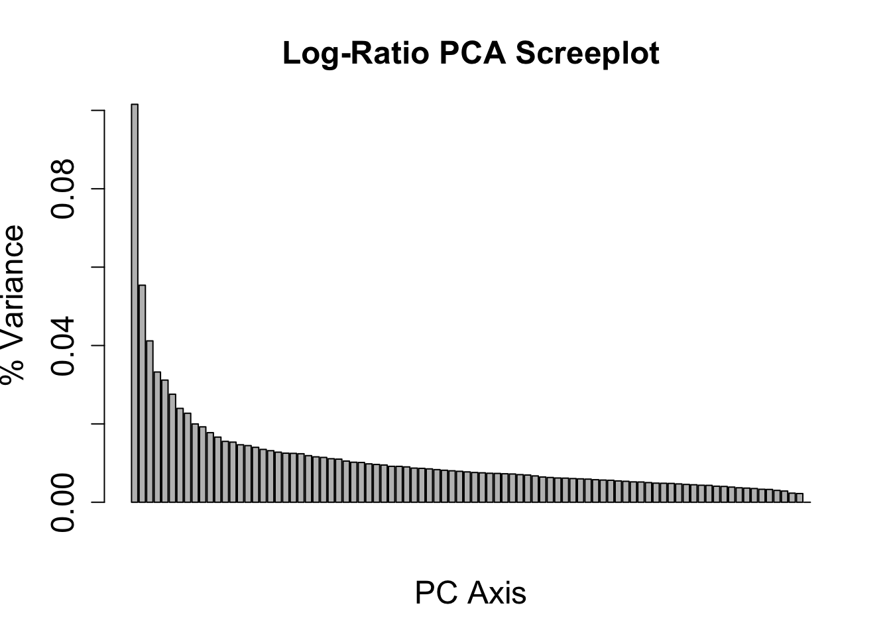
Plot PCA
blues <- c("#dde4f0","#b7cae8","#96b3e3",
"#6b94d6","#3473d9", "#0b4fbd",
"#0b429c", "#07214a", "#081730")
names(blues) <- depth_bin
PCA_PLOT <- data.frame(pca_clr$x, STN_NISKIN = rownames(pca_clr$x)) %>%
select(PC1, PC2, PC3, STN_NISKIN) %>%
left_join(stn_depth_info) %>%
# Factoring
mutate(depth_order = factor(DEPTH_BIN, levels = depth_bin)) %>%
mutate(FEATURE = str_replace_na(FEATURE, replacement = "other")) %>%
## Generate PCA plot
ggplot(aes(x = PC1, y = PC2,
shape = FEATURE,
fill = depth_order)) +
geom_hline(yintercept = 0) + geom_vline(xintercept = 0, color = "#525252") +
geom_jitter(stroke = 0.6, size = 2.5, width = 0.8) +
ylab(paste0('PC2 ',round(variance_clr[2]*100,2),'%')) +
xlab(paste0('PC1 ',round(variance_clr[1]*100,2),'%')) +
scale_shape_manual(values = c(24, 23, 21, 22)) +
scale_fill_manual(values = blues) +
theme_bw() +
theme(axis.text = element_text(color="black", size=12),
legend.title = element_blank(),
panel.grid.major = element_line(color = "grey70", linetype = "dashed"),
axis.title = element_text(color="black", size= 12),
legend.text = element_text(color = "black", size = 8, face = "bold"),
plot.margin = margin(2, 1, 2, 1, "cm")) +
guides(fill = guide_legend(override.aes = list(
color = "black",
shape = 22,
size = 5)),
shape = guide_legend(override.aes = list(
color = "black",
size = 5)))Joining with `by = join_by(STN_NISKIN)`PCA_PLOT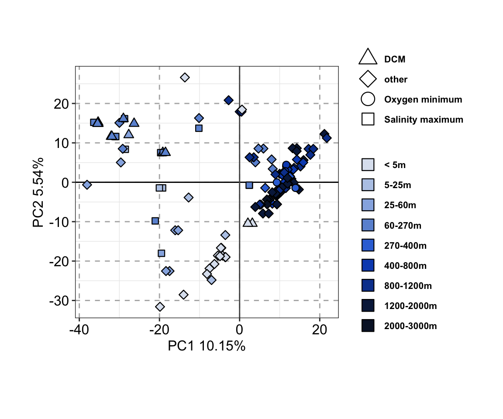
# ggsave("figures/pca-plot.svg", width = 6, height = 5, device = "svg", limitsize = FALSE)2.2 Euclidean analysis
Start with matrix
# head(asv_wide_avg_matrix)[1:4,1:3]# normed_gulf <- decostand(asv_wide_avg_matrix, method = "normalize", MARGIN = 2)
# range(normed_gulf) # Should be between 0 and 1.Community distance metric.
# dist_normed_gulf <- stats::dist(t(normed_gulf), method = "euclidean")
# rownames(as.data.frame(as.matrix(dist_normed_gulf)))# dim(table1)
# head(table1)
# orange_heat <- c("#fff2d4", "#f3d38a", "#ffc94a", "#c76549", "#915e0f", "#62410e")
# as.data.frame(as.matrix(dist_normed_gulf)) %>%
# rownames_to_column(var = "STN_NISKIN") %>%
# pivot_longer(cols = -c(STN_NISKIN), names_to = "STN_NISKIN_Y", values_to = "VALUE") %>%
# left_join(table1) %>%
# separate(STN_NISKIN, into = c("STN", "NISKIN"), sep = "_", remove = FALSE) %>%
# mutate(stn_order = factor(STN, levels = offshore_on_shore_order)) %>%
# ggplot(aes(x = STN_NISKIN, y = STN_NISKIN_Y, fill = VALUE)) +
# geom_tile(stat = "identity", color = "white", lwd = 0.75) +
# # scale_fill_gradientn(colors = red_darkred) +
# scale_fill_stepsn(colors = orange_heat, breaks = c(0.1, 0.3, 0.5, 0.7, 0.9)) +
# scale_x_discrete(position = "top") +
# coord_equal() +
# theme_classic()3 Combined dendrogram
Take the matrix of all data, divide by column total so dendrogram is based on relative sequence abundance by samples.
library(ggdendro)
# Get relative sequence abundance
rel_abun <- decostand(asv_wide_avg_matrix, MARGIN = 2, method = "total")
# sum((as.data.frame(rel_abun))$S8_N11)
# Calculate the maximum distance between each sample pair (dist( method = "maximum")). Then take dissimilarity structure and assemble using the average hierarchical clustering as a dendrogram.
cluster_gom <- hclust(stats::dist(t(rel_abun), method = "maximum"), method = "average")
?dist()Help on topic 'dist' was found in the following packages:
Package Library
compositions /Users/skhu/Library/R/arm64/4.5/library
stats /Library/Frameworks/R.framework/Versions/4.5-arm64/Resources/library
Using the first match ...# Convert object to a dendrogram object in R
dendro <- as.dendrogram(cluster_gom)
gom_dendro <- dendro_data(dendro, type = "rectangle")gom_dendro_plot <- ggplot(segment(gom_dendro)) +
geom_segment(aes(x = x, y = y, xend = xend,
yend = yend)) +
coord_flip() +
scale_x_continuous(expand = c(0, 0.4)) +
scale_y_reverse(expand = c(0.4, 0), breaks = c(0, 0.2, 0.4, 0.6, 0.8)) +
geom_text(size = 3, aes(x = x, y = y, label = label, angle = 0, hjust = 0), data = label(gom_dendro)) +
theme_dendro() + labs(y = "Dissimilarity") +
theme(axis.text.x = element_text(color = "black", size = 8),
axis.line.x = element_line(color = "#252525"),
axis.ticks.x = element_line(), axis.title.x = element_text(color = "black",
size = 8))
# svg('figs/SUPPLEMENTARY-dendrogram-wreps.svg', w = 10, h = 8)
gom_dendro_plot
Isolate label names that correspond to dendrogram.
tmp <- data.frame(gom_dendro$labels)
class(tmp)[1] "data.frame"labels_for_dendro <- as.character(tmp$label)
setdiff(labels_for_dendro, stn_depth_info$STN_NISKIN)character(0)3.0.1 Dendrogram annotation
Import Oil rig data.
buffer_counts <- read.csv("input-data/OilRig_BufferCount - Sheet1.csv")
# head(buffer_counts)What other parameters for dendrogram?
Set up metadata for dendrogram annotation.
# head(asv_long_avg_wtax)
dendro_annotation <- asv_long_avg_wtax %>%
select(STN_NISKIN, Station, Niskin, Depth, DEPTH_ORDER, Pressure, Temperature, Salinity, Oxygen, NH4, NO2, NO3, PO4, SIL, Prok_count, STN_CATEGORY_3, STN_CATEGORY_4, TRANSECT, DIST_OUTFLOW, DEPTH_MAX, DEPTH_BIN, DAY_NIGHT, HR_OF_DAY) %>%
left_join(buffer_counts) %>%
filter(STN_NISKIN %in% labels_for_dendro) %>%
# Factor labeling order
mutate(label_order = factor(as.character(STN_NISKIN), levels = labels_for_dendro)) %>%
distinct()Joining with `by = join_by(Station)`blues <- c("#dde4f0","#b7cae8","#96b3e3",
"#6b94d6","#3473d9", "#0b4fbd",
"#0b429c", "#07214a", "#081730")
names(blues) <- depth_bin
DEPTH <- dendro_annotation %>%
ggplot(aes(y = label_order, x = 1, fill = DEPTH_BIN)) +
geom_point(shape = 22, color = "black", size = 4) +
scale_fill_manual(values = blues) +
scale_y_discrete(position = "right") +
theme_void() + theme(
legend.position = "right",
legend.title = element_blank(),
legend.text = element_text(color = "black"),
strip.background = element_blank(),
axis.ticks = element_blank(),
axis.title = element_text(color = "black"),
axis.text.y = element_text(color = "black", size = 6),
axis.text.x = element_blank()) +
guides(fill = guide_legend(reverse = TRUE, ncol = 1)) +
labs(x = "", y = "")
DEPTH
DIST <- dendro_annotation %>%
mutate(dist_outflow = DIST_OUTFLOW/1000) %>%
ggplot(aes(y = label_order, x = 1, fill = dist_outflow)) +
geom_point(shape = 22, color = "black", size = 4) +
# scale_fill_continuous(option = "magma") +
scale_fill_viridis_c(option = "magma", direction = -1) +
# scale_fill_stepsn(colors = blues, breaks = c(50, 100, 300, 500, 1000, 1500, 2000)) +
scale_y_discrete(position = "right") +
theme_void() + theme(
legend.position = "right",
legend.title = element_blank(),
legend.text = element_text(color = "black"),
strip.background = element_blank(),
axis.ticks = element_blank(),
axis.title = element_text(color = "black"),
axis.text.y = element_text(color = "black", size = 6),
axis.text.x = element_blank()) +
guides(fill = guide_legend(reverse = TRUE, ncol = 1)) +
labs(x = "x10^3 km", y = "")
DIST
Dendrogram annotation with DCM, O2, and Salt max
feature_profiles <- read.csv("input-data/feature_profiles_depth.csv")PROFILES <- dendro_annotation %>%
ungroup() %>%
left_join(feature_profiles) %>%
select(STN_NISKIN, label_order, Station, Niskin, Depth, FEATURE) %>% distinct() %>%
mutate(VAL = case_when(
!is.na(FEATURE) ~ 1,
TRUE ~ 0
)) %>%
ggplot(aes(y = label_order, x = FEATURE, fill = 1)) +
geom_point(color = "black", fill = "grey10", shape = 22, size = 4) +
coord_fixed(ratio = 1) +
scale_y_discrete(position = "right") +
theme_void() + theme(
legend.position = "none",
legend.title = element_blank(),
legend.text = element_text(color = "black"),
strip.background = element_blank(),
axis.ticks = element_blank(),
panel.grid.major = element_line(color = "grey70", linetype = "dashed"),
axis.line.x = element_line(color = "black", linewidth = 0.2),
axis.line.y = element_line(color = "black", linewidth = 0.2),
axis.title = element_text(color = "black"),
axis.text.y = element_text(color = "black", size = 6),
axis.text.x = element_text(color = "black", size = 8, angle = 90, hjust = 1, vjust = 0.5)) +
# guides(fill = guide_legend(reverse = TRUE, ncol = 1)) +
labs(x = "", y = "")Joining with `by = join_by(Station, Niskin, Depth)`PROFILES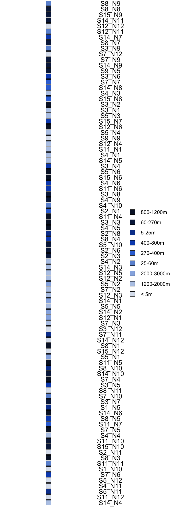
TRANSECT <- dendro_annotation %>%
ggplot(aes(y = label_order, x = 1, fill = TRANSECT)) +
geom_point(shape = 22, color = "black", size = 4) +
# scale_fill_manual(values = c("#ff8787", "#eaf576", "#76aff5")) +
scale_fill_manual(values = c("#e0a8d8", "#9c388d", "#540548")) +
scale_y_discrete(position = "right") +
theme_void() + theme(
legend.position = "right",
legend.title = element_blank(),
legend.text = element_text(color = "black"),
strip.background = element_blank(),
axis.ticks = element_blank(),
axis.title = element_text(color = "black"),
axis.text.y = element_text(color = "black", size = 6),
axis.text.x = element_blank()) +
guides(fill = guide_legend(reverse = TRUE, ncol = 1)) +
labs(x = "", y = "")
TRANSECT
CATEGORY <- dendro_annotation %>%
ggplot(aes(y = label_order, x = 1, fill = STN_CATEGORY_4)) +
geom_point(shape = 22, color = "black", size = 4) +
# scale_fill_manual(values = c("#ff8787", "#eaf576", "#76aff5")) +
scale_fill_manual(values = c("#e3c69d","#e3ab5d", "#c4770a", "#523711")) +
scale_y_discrete(position = "right") +
theme_void() + theme(
legend.position = "right",
legend.title = element_blank(),
legend.text = element_text(color = "black"),
strip.background = element_blank(),
axis.ticks = element_blank(),
axis.title = element_text(color = "black"),
axis.text.y = element_text(color = "black", size = 6),
axis.text.x = element_blank()) +
guides(fill = guide_legend(reverse = TRUE, ncol = 1)) +
labs(x = "", y = "")
CATEGORY
OIL <- dendro_annotation %>%
mutate(OIL_COUNT = as.character(OilRig_Count)) %>%
ggplot(aes(y = label_order, x = 1, fill = OIL_COUNT)) +
geom_point(shape = 22, color = "black", size = 4) +
scale_fill_manual(values = c("grey90","#e38aa6","#ba4e70","#a13356","#8a1a3d","#54051e"))+
scale_y_discrete(position = "right") +
theme_void() + theme(
legend.position = "right",
legend.title = element_blank(),
legend.text = element_text(color = "black"),
strip.background = element_blank(),
axis.ticks = element_blank(),
axis.title = element_text(color = "black"),
axis.text.y = element_text(color = "black", size = 6),
axis.text.x = element_blank()) +
guides(fill = guide_legend(reverse = TRUE, ncol = 1)) +
labs(x = "", y = "")
OIL
DAY <- dendro_annotation %>%
ggplot(aes(y = label_order, x = 1, fill = DAY_NIGHT)) +
geom_point(shape = 22, color = "black", size = 4) +
scale_fill_manual(values = c("#afa7d1","#413c59"))+
scale_y_discrete(position = "right") +
theme_void() + theme(
legend.position = "right",
legend.title = element_blank(),
legend.text = element_text(color = "black"),
strip.background = element_blank(),
axis.ticks = element_blank(),
axis.title = element_text(color = "black"),
axis.text.y = element_text(color = "black", size = 6),
axis.text.x = element_blank()) +
guides(fill = guide_legend(reverse = TRUE, ncol = 1)) +
labs(x = "", y = "")
DAY
# range(dendro_annotation$DEPTH_MAX)
MAX <- dendro_annotation %>%
ggplot(aes(y = label_order, x = 1, fill = DEPTH_MAX)) +
geom_point(shape = 22, color = "black", size = 4) +
scale_fill_viridis_c(option = "mako", direction = -1, breaks = c(0, 50, 300, 500, 1000, 2000, 3000)) +
scale_y_discrete(position = "right") +
theme_void() + theme(
legend.position = "right",
legend.title = element_blank(),
legend.text = element_text(color = "black"),
strip.background = element_blank(),
axis.ticks = element_blank(),
axis.title = element_text(color = "black"),
axis.text.y = element_text(color = "black", size = 6),
axis.text.x = element_blank()) +
# guides(fill = guide_legend(reverse = TRUE, ncol = 1)) +
labs(x = "", y = "")
MAX
PROK <- dendro_annotation %>%
ggplot(aes(y = label_order, x = 1, fill = Prok_count)) +
geom_point(shape = 22, color = "black", size = 4) +
scale_fill_fermenter(na.value = "grey30", palette = "OrRd", direction = 1) +
scale_y_discrete(position = "right") +
theme_void() + theme(
legend.position = "right",
legend.title = element_blank(),
legend.text = element_text(color = "black"),
strip.background = element_blank(),
axis.ticks = element_blank(),
axis.title = element_text(color = "black"),
axis.text.y = element_text(color = "black", size = 6),
axis.text.x = element_blank()) +
guides(fill = guide_legend(reverse = TRUE, ncol = 1)) +
labs(x = "", y = "")
PROK
4 Taxonomy
Richness by depth, station, and feature.
asv_long_avg_wtax %>%
group_by(Station, DEPTH_BIN) %>%
summarise(SEQ_SUM = sum(MEAN_REPS_seq),
ASV_COUNT = n()) %>%
mutate(depth_bin_order = factor(DEPTH_BIN, levels = rev(depth_bin))) |>
ggplot(aes(x = as.factor(Station), y = depth_bin_order,
size = ASV_COUNT)) +
geom_jitter(shape = 21, color = "black", stroke = 1.5) +
scale_x_discrete(position = "top") +
scale_fill_manual(values = c("#6edb8f", "#ab70e6", "#ebb923")) +
scale_size(range=c(3,7), guide="legend") +
theme_classic() +
theme(
axis.text.x = element_text(color = "black", size = 14),
axis.text.y = element_text(color = "black", size = 14),
panel.grid.major = element_line(color = "grey90", linetype = "dotted")
) +
labs(x = "", y = "Depth (m)")`summarise()` has grouped output by 'Station'. You can override using the
`.groups` argument.
tax_color <- c("#db1f7d", "#2c5c1d", "#806f8c",
"#f5bfb0", "#93c47d","#7c52bf", "#007a7a",
"#34495e", "#9b59b6", "#fea02f","#ee429b",
"#ffe8a4","#ff6f61","#fcf517","#8a0622",
"#ff7530", "#2986cc", "#e71414","#de6600",
"#1abc9c", "#a0b59f", "#d7b6d7", "#23b521", "#5b545c", "black", "white", "grey10", "grey60")
tax_simplified_list <- as.character((unique(asv_long_avg_wtax$Supergroup_simplified)))
names(tax_color) <- tax_simplified_listLow taxonomic resolution should be at DIVISION level. Then to SUPERGROUP_CLASS level.
4.0.1 For dendrogram
# Sum by taxonomic groups
TAX <- asv_long_avg_wtax %>%
filter(Supergroup_simplified != "Eukaryota") %>%
filter(Supergroup_simplified != "TSAR-NA") %>%
filter(Supergroup_simplified != "Obazoa-Metazoa") %>%
group_by(STN_NISKIN, Station, Niskin, Depth, DEPTH_BIN,
DEPTH_ORDER, Supergroup_simplified) |>
summarise(SUM_SEQ = sum(MEAN_REPS_seq),
ASV_COUNT = n()) %>%
# Factoring and ordering
mutate(label_order = factor(STN_NISKIN, levels = labels_for_dendro),
tax_order = factor(Supergroup_simplified, levels = rev(tax_simplified_list))) %>%
# mutate(label_order = str_remove(label_order, "_")) |>
ggplot(aes(y = (label_order), x = SUM_SEQ, fill = tax_order)) +
geom_bar(stat = "identity", position = "fill",
color = "grey20", width = 0.7, linewidth = 0.3) +
scale_fill_manual(values = tax_color) +
scale_y_discrete(position = "right") +
theme_void() + theme(
legend.position = "right",
legend.title = element_blank(),
legend.text = element_text(color = "black"),
strip.background = element_blank(),
axis.line.x = element_line(),
axis.title = element_text(color = "black"),
axis.text.y = element_text(color = "black", vjust = 0.5, hjust = 0, size = 10),
axis.text.x = element_text(color = "black", size = 6)) +
guides(fill = guide_legend(reverse = TRUE, ncol = 1)) +
labs(x = "", y = "")`summarise()` has grouped output by 'STN_NISKIN', 'Station', 'Niskin', 'Depth',
'DEPTH_BIN', 'DEPTH_ORDER'. You can override using the `.groups` argument.TAX
4.0.2 Plot sequence relative abundance
asv_long_avg_wtax %>%
group_by(Station, DEPTH_BIN, Supergroup, Supergroup_simplified) %>%
summarise(SUM_SEQ = sum(MEAN_REPS_seq),
ASV_COUNT = n()) %>%
filter(Supergroup_simplified != "Eukaryota") %>%
filter(Supergroup_simplified != "TSAR-NA") %>%
filter(Supergroup_simplified != "Obazoa-Metazoa") %>%
mutate(depth_bin_order = factor(DEPTH_BIN, levels = rev(depth_bin)),
tax_order = factor(Supergroup_simplified, levels = rev(tax_simplified_list))) |>
ggplot(aes(y = depth_bin_order, x = SUM_SEQ, fill = tax_order)) +
geom_bar(stat = "identity", position = "fill", color = "white", width = 0.9) +
scale_fill_manual(values = tax_color) +
scale_x_continuous(expand = c(0,0)) +
facet_grid(rows = vars(Station), scales = "free_y", space = "free", axis.labels = "all_x") +
theme_classic() + theme(
legend.position = "right",
legend.title = element_blank(),
legend.text = element_text(color = "black", face = "bold"),
strip.background = element_blank(),
strip.text.y = element_text(angle = 0, color = "black", face = "bold"),
axis.title = element_text(color = "black", face = "bold"),
axis.text.y = element_text(color = "black", face = "bold"),
axis.text.x = element_text(color = "black", face = "bold")) +
guides(fill = guide_legend(reverse = TRUE, ncol = 1)) +
labs(x = "Sequence Relative Abundace", y = "Depth (m)")`summarise()` has grouped output by 'Station', 'DEPTH_BIN', 'Supergroup'. You
can override using the `.groups` argument.
Plot ASV richness by taxonomic groups
head(asv_long_avg_wtax)# A tibble: 6 × 43
FeatureID Taxon DIVISION SUPERGROUP_CLASS Supergroup_simplified Supergroup
<chr> <chr> <chr> <chr> <chr> <chr>
1 0001b2ea4223… Euka… Dinofla… Dinoflagellata-… TSAR-Dinoflagellata TSAR
2 0004be388d73… Euka… Dinofla… Dinoflagellata-… TSAR-Dinoflagellata TSAR
3 000761c7389a… Euka… Dinofla… Dinoflagellata-… TSAR-Dinoflagellata TSAR
4 000964551660… Euka… Radiola… Radiolaria-Acan… TSAR-Radiolaria TSAR
5 000964551660… Euka… Radiola… Radiolaria-Acan… TSAR-Radiolaria TSAR
6 000964551660… Euka… Radiola… Radiolaria-Acan… TSAR-Radiolaria TSAR
# ℹ 37 more variables: Division <chr>, Subdivision <chr>, Class <chr>,
# Order <chr>, Family <chr>, Genus <chr>, Species <chr>, STN_NISKIN <chr>,
# Station <int>, Niskin <int>, Depth <dbl>, Latitude <dbl>, Longitude <dbl>,
# Pressure <dbl>, Temperature <dbl>, Salinity <dbl>, Oxygen <dbl>, NH4 <dbl>,
# NO2 <dbl>, NO3 <dbl>, PO4 <dbl>, SIL <dbl>, Prok_count <dbl>,
# STN_CATEGORY_3 <chr>, STN_CATEGORY_4 <chr>, STN_ORDER <fct>,
# TRANSECT <fct>, DEPTH_ORDER <fct>, DIST_OUTFLOW <dbl>, DEPTH_MAX <dbl>, …# tax_color
asv_long_avg_wtax %>%
group_by(DEPTH_BIN, Supergroup_simplified, Class) %>%
summarise(ASV_COUNT = n()) %>%
filter(Supergroup_simplified != "Eukaryota") %>%
filter(Supergroup_simplified != "Eukaryota_X") %>%
filter(Supergroup_simplified != "TSAR-NA") %>%
filter(Supergroup_simplified != "Obazoa-Metazoa") %>%
mutate(depth_bin_order = factor(DEPTH_BIN, levels = rev(depth_bin)),
tax_order = factor(Supergroup_simplified, levels = rev(tax_simplified_list))) |>
ggplot(aes(y = depth_bin_order, x = Class, fill = tax_order, size = ASV_COUNT)) +
geom_point(shape = 21, color = "grey10", alpha = 0.7, stroke = 0.5) +
scale_fill_manual(values = tax_color) +
scale_size_continuous(range = c(1,10), breaks = c(1, 10, 50, 100, 500, 1000, 2000)) +
facet_grid(cols = vars(tax_order), scales = "free_x", space = "free_x", axis.labels = "all_x") +
theme_classic() + theme(
legend.position = "bottom",
legend.title = element_blank(),
legend.text = element_text(color = "black", face = "bold"),
strip.background = element_blank(),
panel.grid.major = element_line(color = "grey90", linetype = "dashed"),
strip.text.y = element_text(angle = 90, hjust = 0, vjust = 0.5, size = 8, color = "black", face = "bold"),
strip.text.x = element_text(angle = 90, hjust = 0, vjust = 0.5, size = 8, color = "black", face = "bold"),
axis.title = element_text(color = "black", face = "bold"),
axis.text.y = element_text(color = "black", face = "bold"),
axis.text.x = element_text(color = "black", face = "bold", angle = 90,
hjust = 1, vjust = 0, size = 8)) +
guides(fill = "none",
size = guide_legend(nrow = 1, shape = 21, color = "black", fill = "black")) +
labs(x = "", y = "Depth (m)")`summarise()` has grouped output by 'DEPTH_BIN', 'Supergroup_simplified'. You
can override using the `.groups` argument.Warning in guide_legend(nrow = 1, shape = 21, color = "black", fill = "black"): Arguments in `...` must be used.
✖ Problematic arguments:
• shape = 21
• color = "black"
• fill = "black"
ℹ Did you misspell an argument name?
# ggsave("figures/tax-dotplot.svg", width = 22, height = 5, device = "svg", limitsize = FALSE)5 Diversity indices
Use wide dataframe from above.
head(asv_wide_avg_matrix)[,1:3] S8_N11 S14_N9 S5_N6
0001b2ea4223c275477e5ea893ce1b04 3 0 0
0004be388d73e3dd74eaef4f9e559d7d 0 3 0
000761c7389a026c89d82c073f4ab717 0 0 16
0009645516609bda2246e1955ff9ec1d 0 0 0
000a4e40ee3001cd1ca18220dbc07caa 0 0 0
000a64b2ed59960c77086b6b29a4c845 0 0 0shannon_all <- vegan::diversity(asv_wide_avg_matrix, index = "shannon", MARGIN = 2)SHANNON <- data.frame(shannon_all) %>%
rownames_to_column(var = "STN_NISKIN") %>%
left_join(dendro_annotation) %>%
mutate(label_order = factor(STN_NISKIN, levels = labels_for_dendro)) %>%
ggplot(aes(x = shannon_all, y = label_order)) +
geom_point(shape = 21, fill = "grey30", color = "black", size = 2, stroke = 1) +
theme_classic() + theme(
legend.position = "right",
legend.title = element_blank(),
legend.text = element_text(color = "black"),
strip.background = element_blank(),
# axis.ticks = element_blank(),
axis.title = element_text(color = "black", size = 8),
axis.text.y = element_text(color = "black", vjust = 0.5, hjust = 0, size = 6),
panel.grid.major = element_line(color = "grey70", linetype = "dashed")) +
guides(fill = guide_legend(reverse = TRUE, ncol = 1)) +
labs(x = "Shannon Diversity", y = "")Joining with `by = join_by(STN_NISKIN)`SHANNON
invsimp_all <- vegan::diversity(asv_wide_avg_matrix, index = "invsimpson", MARGIN = 2)
# head(data.frame(invsimp_all))INVSIMP <- data.frame(invsimp_all) %>%
rownames_to_column(var = "STN_NISKIN") %>%
left_join(stn_depth_info) |>
mutate(label_order = factor(STN_NISKIN, levels = labels_for_dendro)) %>%
ggplot(aes(x = invsimp_all, y = label_order)) +
geom_point(shape = 21, fill = "grey80", color = "black", size = 2, stroke = 1) +
theme_classic() + theme(
legend.position = "right",
legend.title = element_blank(),
legend.text = element_text(color = "black"),
strip.background = element_blank(),
# axis.ticks = element_blank(),
axis.title = element_text(color = "black", size = 8),
axis.text.y = element_text(color = "black", vjust = 0.5, hjust = 0, size = 6),
panel.grid.major = element_line(color = "grey70", linetype = "dashed")) +
guides(fill = guide_legend(reverse = TRUE, ncol = 1)) +
labs(x = "Inverse Simpson", y = "")Joining with `by = join_by(STN_NISKIN)`INVSIMP
5.1 Plot Dendrogram compilation
gom_dendro_plot + DEPTH + PROFILES +
DAY + MAX + DIST +
CATEGORY + TRANSECT + OIL +
PROK + SHANNON + INVSIMP + TAX +
plot_layout(nrow = 1,
widths = c(2.5, 1, 1,
1, 1, 1,
1, 1, 1,
1, 1, 1, 1.6))
# ggsave("figures/dendrogram-compiled.svg", width = 28, height = 13, device = "svg", limitsize = FALSE)6 Taxa and depth
# head(asv_long_avg_wtax)
asv_long_avg_wtax %>%
filter(Supergroup_simplified == "TSAR-Ciliophora") %>%
group_by(Class, Depth) %>%
summarise(ASV_COUNT = n()) %>%
ggplot(aes(x = ASV_COUNT, y = Depth, fill = Class)) +
geom_point(stat = "identity", shape = 21, color = "black") +
scale_y_reverse() +
theme_classic()`summarise()` has grouped output by 'Class'. You can override using the
`.groups` argument.
7 CLR targets & plots
Confirming what core protistan groups are the most prominent members of the community across all of the samples.
# head(asv_long_avg_wtax)
top_taxa <- asv_long_avg_wtax %>%
filter(!(grepl("Obazoa", Supergroup_simplified))) %>%
group_by(Supergroup_simplified, STN_NISKIN) %>%
summarise(SUM_SEQ = sum(MEAN_REPS_seq),
ASV_COUNT = n()) %>%
ungroup() %>%
# Subset the top 2 groups with the highest ASV count
group_by(STN_NISKIN) %>%
slice_max(order_by = ASV_COUNT, n = 3)`summarise()` has grouped output by 'Supergroup_simplified'. You can override
using the `.groups` argument. # slice_max(order_by = SUM_SEQ, n = 3)
# top_taxa
list_top <- unique(top_taxa$Supergroup_simplified)
list_top[1] "TSAR-Dinoflagellata" "TSAR-Radiolaria" "TSAR-Ciliophora"
[4] "Haptista" "TSAR-Gyrista" "Archaeplastida"
[7] "TSAR-Bigyra" Write a function to go through each of these taxa
head(asv_long_avg_wtax)# A tibble: 6 × 43
FeatureID Taxon DIVISION SUPERGROUP_CLASS Supergroup_simplified Supergroup
<chr> <chr> <chr> <chr> <chr> <chr>
1 0001b2ea4223… Euka… Dinofla… Dinoflagellata-… TSAR-Dinoflagellata TSAR
2 0004be388d73… Euka… Dinofla… Dinoflagellata-… TSAR-Dinoflagellata TSAR
3 000761c7389a… Euka… Dinofla… Dinoflagellata-… TSAR-Dinoflagellata TSAR
4 000964551660… Euka… Radiola… Radiolaria-Acan… TSAR-Radiolaria TSAR
5 000964551660… Euka… Radiola… Radiolaria-Acan… TSAR-Radiolaria TSAR
6 000964551660… Euka… Radiola… Radiolaria-Acan… TSAR-Radiolaria TSAR
# ℹ 37 more variables: Division <chr>, Subdivision <chr>, Class <chr>,
# Order <chr>, Family <chr>, Genus <chr>, Species <chr>, STN_NISKIN <chr>,
# Station <int>, Niskin <int>, Depth <dbl>, Latitude <dbl>, Longitude <dbl>,
# Pressure <dbl>, Temperature <dbl>, Salinity <dbl>, Oxygen <dbl>, NH4 <dbl>,
# NO2 <dbl>, NO3 <dbl>, PO4 <dbl>, SIL <dbl>, Prok_count <dbl>,
# STN_CATEGORY_3 <chr>, STN_CATEGORY_4 <chr>, STN_ORDER <fct>,
# TRANSECT <fct>, DEPTH_ORDER <fct>, DIST_OUTFLOW <dbl>, DEPTH_MAX <dbl>, …# View(asv_long_avg_wtax)
list_top[1] "TSAR-Dinoflagellata" "TSAR-Radiolaria" "TSAR-Ciliophora"
[4] "Haptista" "TSAR-Gyrista" "Archaeplastida"
[7] "TSAR-Bigyra" 7.1 Dinoflagellates
class_dino_mat <- asv_long_avg_wtax %>%
filter(Supergroup_simplified == "TSAR-Dinoflagellata") %>%
ungroup() %>%
mutate(CLASS = case_when(
is.na(Class) ~ "Dinoflagellata-Unannotated",
TRUE ~ Class)) %>%
group_by(CLASS, Station, DEPTH_BIN) %>%
summarise(SUM_SEQ = sum(MEAN_REPS_seq)) %>%
unite(SAMPLE, Station, DEPTH_BIN, sep = ";") %>%
pivot_wider(names_from = CLASS, values_from = SUM_SEQ, values_fn = mean, values_fill = 0) %>%
column_to_rownames(var = "SAMPLE") %>%
as.matrix`summarise()` has grouped output by 'CLASS', 'Station'. You can override using
the `.groups` argument.head(class_dino_mat) Dinoflagellata-Unannotated Dinophyceae Dinophyta_X
1;5-25m 232.0000 21835.50 4.00
2;270-400m 1107.0000 21420.00 168.00
2;5-25m 574.0000 28922.00 33.00
2;60-270m 806.3333 45662.25 538.75
3;1200-2000m 837.0000 23219.50 297.00
3;25-60m 946.0000 44006.00 0.00
Noctilucophyceae Syndiniales
1;5-25m 0.0 38614.0
2;270-400m 111.0 60224.5
2;5-25m 6.0 78628.0
2;60-270m 14.0 114252.2
3;1200-2000m 164.0 81141.0
3;25-60m 18.5 73017.0class_dino_clr <- vegan::decostand(class_dino_mat, MARGIN = 1, method = "rclr")
##
colnames(class_dino_clr) <- colnames(class_dino_mat)
rownames(class_dino_clr) <- rownames(class_dino_mat)
# data.frame(class_dino_clr)plot_dino_clr <- data.frame(class_dino_clr) %>%
rownames_to_column(var = "SAMPLE") %>%
pivot_longer(cols = -c(SAMPLE), names_to = "Class", values_to = "CLR") %>%
separate(SAMPLE, into = c("Station", "DEPTH_BIN"), sep = ";") %>%
mutate(stn = paste("S", Station, sep = "")) %>%
mutate(STN_ORDER = factor(stn, levels = offshore_on_shore_order)) %>%
mutate(DEPTH_BIN_ORDER = factor(DEPTH_BIN, levels = rev(depth_bin))) %>%
ggplot(aes(y = DEPTH_BIN_ORDER, x = Class, fill = CLR)) +
geom_tile(color = "grey30", linewidth = 0.4) +
facet_grid(rows = vars(STN_ORDER), space = "free_y", scale = "free_y") +
scale_x_discrete(position = "top") +
scale_fill_fermenter(type = "div", palette = 4, breaks = c(-3,-1,0,1,3)) +
theme_classic() +
theme(axis.ticks = element_blank(),
axis.text.x = element_text(color = "black", angle = 45, size = 7,
hjust = 0, vjust = 0.5),
axis.text.y = element_text(color = "black"),
strip.text.y = element_text(color = "black", angle = 0),
strip.background = element_blank()) +
labs(x = "", y = "")
plot_dino_clr
Syndiniales
class_syn_mat <- asv_long_avg_wtax %>%
filter(Supergroup_simplified == "TSAR-Dinoflagellata") %>%
filter(Class == "Syndiniales") %>%
filter(!is.na(Order)) %>%
ungroup() %>%
mutate(CLASS = case_when(
is.na(Class) ~ "Dinoflagellata-Unannotated",
TRUE ~ Class)) %>%
group_by(Order, Station, DEPTH_BIN) %>%
summarise(SUM_SEQ = sum(MEAN_REPS_seq)) %>%
unite(SAMPLE, Station, DEPTH_BIN, sep = ";") %>%
pivot_wider(names_from = Order, values_from = SUM_SEQ, values_fn = mean, values_fill = 0) %>%
column_to_rownames(var = "SAMPLE") %>%
as.matrix`summarise()` has grouped output by 'Order', 'Station'. You can override using
the `.groups` argument.head(class_syn_mat) Dino-Group-I Dino-Group-II Dino-Group-III Dino-Group-IV Dino-Group-V
1;5-25m 12942.000 23068.500 1565.000 77.000 941.0
1;< 5m 765.000 2218.000 618.000 0.000 0.0
2;270-400m 26123.000 31272.000 1568.500 1195.000 66.0
2;5-25m 17704.500 55759.500 3558.500 379.000 1219.5
2;60-270m 41800.083 66847.917 1839.167 3458.417 197.0
2;< 5m 1473.083 6765.833 587.250 7.000 0.0class_syn_clr <- vegan::decostand(class_syn_mat, MARGIN = 1, method = "rclr")
##
colnames(class_syn_clr) <- colnames(class_syn_mat)
rownames(class_syn_clr) <- rownames(class_syn_mat)plot_syn_clr <- data.frame(class_syn_clr) %>%
rownames_to_column(var = "SAMPLE") %>%
pivot_longer(cols = -c(SAMPLE), names_to = "Class", values_to = "CLR") %>%
separate(SAMPLE, into = c("Station", "DEPTH_BIN"), sep = ";") %>%
mutate(stn = paste("S", Station, sep = "")) %>%
mutate(STN_ORDER = factor(stn, levels = offshore_on_shore_order)) %>%
mutate(DEPTH_BIN_ORDER = factor(DEPTH_BIN, levels = rev(depth_bin))) %>%
ggplot(aes(y = DEPTH_BIN_ORDER, x = Class, fill = CLR)) +
geom_tile(color = "grey30", linewidth = 0.4) +
facet_grid(rows = vars(STN_ORDER), space = "free_y", scale = "free_y") +
scale_x_discrete(position = "top") +
scale_fill_fermenter(type = "div", palette = 4, breaks = c(-3,-1,0,1,3)) +
theme_classic() +
theme(axis.ticks = element_blank(),
axis.text.x = element_text(color = "black", angle = 45, size = 7,
hjust = 0, vjust = 0.5),
axis.text.y = element_text(color = "black"),
strip.text.y = element_text(color = "black", angle = 0),
strip.background = element_blank()) +
labs(x = "", y = "")
plot_syn_clr
7.2 Radiolaria
list_top[1] "TSAR-Dinoflagellata" "TSAR-Radiolaria" "TSAR-Ciliophora"
[4] "Haptista" "TSAR-Gyrista" "Archaeplastida"
[7] "TSAR-Bigyra" # tmp <- asv_long_avg_wtax %>%
# filter(STN_NISKIN != "S12_N10") %>%
# filter(Supergroup_simplified == "TSAR-Radiolaria"); unique(tmp$Class)
class_rad_mat <- asv_long_avg_wtax %>%
filter(STN_NISKIN != "S12_N10") %>%
filter(Supergroup_simplified == "TSAR-Radiolaria") %>%
ungroup() %>%
mutate(CLASS = case_when(
is.na(Class) ~ "Radiolaria-Unannotated",
(is.na(Order) & Class == "X") ~ "Radiolaria-Unannotated",
TRUE ~ Class)) %>%
group_by(CLASS, Station, DEPTH_BIN) %>%
summarise(SUM_SEQ = sum(MEAN_REPS_seq)) %>%
unite(SAMPLE, Station, DEPTH_BIN, sep = ";") %>%
pivot_wider(names_from = CLASS, values_from = SUM_SEQ, values_fn = mean, values_fill = 0) %>%
column_to_rownames(var = "SAMPLE") %>%
as.matrix`summarise()` has grouped output by 'CLASS', 'Station'. You can override using
the `.groups` argument.#
head(class_rad_mat) Acantharea Polycystinea RAD-A RAD-B RAD-C Radiolaria_X
1;5-25m 987.000 12966.5000 1056.500 1612.500 165.0000 0.0
1;< 5m 12.500 15.0000 0.000 6.000 2.0000 0.0
2;270-400m 5597.000 40047.0000 176.000 10634.000 649.5000 1228.0
2;5-25m 2404.000 10128.5000 1790.500 1409.500 1314.0000 0.0
2;60-270m 8236.667 40438.2500 1541.417 7579.083 997.6667 5965.0
2;< 5m 213.500 512.4167 3.000 62.000 8.0000 18.5class_rad_clr <- vegan::decostand(class_rad_mat, MARGIN = 1, method = "rclr")
##
colnames(class_rad_clr) <- colnames(class_rad_mat)
rownames(class_rad_clr) <- rownames(class_rad_mat)
# data.frame(class_rad_clr)plot_rad_clr <- data.frame(class_rad_clr) %>%
rownames_to_column(var = "SAMPLE") %>%
pivot_longer(cols = -c(SAMPLE), names_to = "Class", values_to = "CLR") %>%
separate(SAMPLE, into = c("Station", "DEPTH_BIN"), sep = ";") %>%
mutate(stn = paste("S", Station, sep = "")) %>%
mutate(STN_ORDER = factor(stn, levels = offshore_on_shore_order)) %>%
mutate(DEPTH_BIN_ORDER = factor(DEPTH_BIN, levels = rev(depth_bin))) %>%
ggplot(aes(y = DEPTH_BIN_ORDER, x = Class, fill = CLR)) +
geom_tile(color = "grey30", linewidth = 0.4) +
facet_grid(rows = vars(STN_ORDER), space = "free_y", scale = "free_y") +
scale_x_discrete(position = "top") +
scale_fill_fermenter(type = "div", palette = 4, breaks = c(-3,-1,0,1,3)) +
theme_classic() +
theme(axis.ticks = element_blank(),
axis.text.x = element_text(color = "black", angle = 45, size = 7,
hjust = 0, vjust = 0.5),
axis.text.y = element_text(color = "black"),
strip.text.y = element_text(color = "black", angle = 0),
strip.background = element_blank()) +
labs(x = "", y = "")7.3 Ciliate
list_top[1] "TSAR-Dinoflagellata" "TSAR-Radiolaria" "TSAR-Ciliophora"
[4] "Haptista" "TSAR-Gyrista" "Archaeplastida"
[7] "TSAR-Bigyra" tmp <- asv_long_avg_wtax %>%
filter(STN_NISKIN != "S12_N10") %>%
filter(Supergroup_simplified == "TSAR-Ciliophora"); unique(tmp$Class) [1] "CONThreeP" "Oligohymenophorea" "Spirotrichea"
[4] "Phyllopharyngea" "CONTH_6" "Ciliophora_X"
[7] "Heterotrichea" "Litostomatea" NA
[10] "Prostomatea_1" "Prostomatea" "Colpodea"
[13] "CONTH_8" "Plagiopylea" class_cil_mat <- asv_long_avg_wtax %>%
filter(STN_NISKIN != "S12_N10") %>%
filter(Supergroup_simplified == "TSAR-Ciliophora") %>%
ungroup() %>%
mutate(CLASS = case_when(
is.na(Class) ~ "Ciliophora-Unannotated",
(is.na(Order) & Class == "X") ~ "Ciliophora-Unannotated",
TRUE ~ Class)) %>%
group_by(CLASS, Station, DEPTH_BIN) %>%
summarise(SUM_SEQ = sum(MEAN_REPS_seq)) %>%
unite(SAMPLE, Station, DEPTH_BIN, sep = ";") %>%
pivot_wider(names_from = CLASS, values_from = SUM_SEQ, values_fn = mean, values_fill = 0) %>%
column_to_rownames(var = "SAMPLE") %>%
as.matrix`summarise()` has grouped output by 'CLASS', 'Station'. You can override using
the `.groups` argument.#
head(class_cil_mat) CONTH_6 CONTH_8 CONThreeP Ciliophora-Unannotated Ciliophora_X
1;5-25m 571.50 12.00 432.50 5729.5 0.0000
2;270-400m 30.00 0.00 525.00 0.0 43.0000
2;60-270m 3.00 15.00 617.75 149.0 114.8333
2;< 5m 69.75 4.25 627.00 217.5 6.0000
3;25-60m 555.00 0.00 632.00 408.0 0.0000
3;800-1200m 78.50 0.00 1773.50 50.0 246.5000
Colpodea Heterotrichea Litostomatea Oligohymenophorea
1;5-25m 0 48.00 9.00 944.5000
2;270-400m 16 0.00 13.00 1098.5000
2;60-270m 100 4.00 22.00 6026.3333
2;< 5m 2 13.75 27.25 280.6667
3;25-60m 0 40.00 0.00 657.0000
3;800-1200m 0 8.00 100.00 9174.5000
Phyllopharyngea Plagiopylea Prostomatea Prostomatea_1 Spirotrichea
1;5-25m 456.00 0 33.00 0 8834.000
2;270-400m 695.50 0 12.00 0 2057.000
2;60-270m 1361.00 0 12.00 0 17741.833
2;< 5m 511.25 0 13.25 0 9594.167
3;25-60m 498.00 0 0.00 11 4712.000
3;800-1200m 642.00 0 0.00 99 9022.000class_cil_clr <- vegan::decostand(class_cil_mat, MARGIN = 1, method = "rclr")
##
colnames(class_cil_clr) <- colnames(class_cil_mat)
rownames(class_cil_clr) <- rownames(class_cil_mat)
# data.frame(class_rad_clr)plot_cil_clr <- data.frame(class_cil_clr) %>%
rownames_to_column(var = "SAMPLE") %>%
pivot_longer(cols = -c(SAMPLE), names_to = "Class", values_to = "CLR") %>%
separate(SAMPLE, into = c("Station", "DEPTH_BIN"), sep = ";") %>%
mutate(stn = paste("S", Station, sep = "")) %>%
mutate(STN_ORDER = factor(stn, levels = offshore_on_shore_order)) %>%
mutate(DEPTH_BIN_ORDER = factor(DEPTH_BIN, levels = rev(depth_bin))) %>%
ggplot(aes(y = DEPTH_BIN_ORDER, x = Class, fill = CLR)) +
geom_tile(color = "grey30", linewidth = 0.4) +
facet_grid(rows = vars(STN_ORDER), space = "free_y", scale = "free_y") +
scale_x_discrete(position = "top") +
scale_fill_fermenter(type = "div", palette = 4, breaks = c(-3,-1,0,1,3)) +
theme_classic() +
theme(axis.ticks = element_blank(),
axis.text.x = element_text(color = "black", angle = 45, size = 7,
hjust = 0, vjust = 0.5),
axis.text.y = element_text(color = "black"),
strip.text.y = element_text(color = "black", angle = 0),
strip.background = element_blank()) +
labs(x = "", y = "")7.4 Gyrista
list_top[1] "TSAR-Dinoflagellata" "TSAR-Radiolaria" "TSAR-Ciliophora"
[4] "Haptista" "TSAR-Gyrista" "Archaeplastida"
[7] "TSAR-Bigyra" tmp <- asv_long_avg_wtax %>%
filter(STN_NISKIN != "S12_N10") %>%
filter(Supergroup_simplified == "TSAR-Gyrista"); unique(tmp$Class) [1] "Bolidophyceae" "Bacillariophyceae" "Chrysophyceae"
[4] "Mediophyceae" "Hyphochytriomyceta" "Pelagophyceae"
[7] "Pirsoniales" "Dictyochophyceae" "Gyrista_X"
[10] NA "Peronosporomycetes" "MOCH-3"
[13] "Coscinodiscophyceae" "MOCH-5" "Eustigmatophyceae"
[16] "Developea" "MOCH-2" "Raphidophyceae"
[19] "MOCH-4" "Pinguiophyceae" "Chrysomerophyceae" class_gyrista_mat <- asv_long_avg_wtax %>%
filter(STN_NISKIN != "S12_N10") %>%
filter(Supergroup_simplified == "TSAR-Gyrista") %>%
ungroup() %>%
mutate(CLASS = case_when(
is.na(Class) ~ "Gyrista-Unannotated",
(is.na(Order) & Class == "X") ~ "Gyrista-Unannotated",
TRUE ~ Class)) %>%
group_by(CLASS, Station, DEPTH_BIN) %>%
summarise(SUM_SEQ = sum(MEAN_REPS_seq)) %>%
unite(SAMPLE, Station, DEPTH_BIN, sep = ";") %>%
pivot_wider(names_from = CLASS, values_from = SUM_SEQ, values_fn = mean, values_fill = 0) %>%
column_to_rownames(var = "SAMPLE") %>%
as.matrix`summarise()` has grouped output by 'CLASS', 'Station'. You can override using
the `.groups` argument.#
head(class_gyrista_mat) Bacillariophyceae Bolidophyceae Chrysomerophyceae Chrysophyceae
1;5-25m 1253.50 0 0 260.5000
1;< 5m 341.50 0 0 130.5000
2;270-400m 781.00 125 0 162.0000
2;5-25m 1387.00 6 0 439.0000
2;60-270m 1416.25 166 0 139.2500
2;< 5m 7152.00 26 0 214.9167
Coscinodiscophyceae Developea Dictyochophyceae Eustigmatophyceae
1;5-25m 1338.50 0 48.5000 12.5
1;< 5m 12955.00 0 8.0000 6.5
2;270-400m 9518.00 0 0.0000 72.0
2;5-25m 855.50 0 168.5000 11.0
2;60-270m 13034.25 0 121.8333 19.0
2;< 5m 54801.00 0 44.0000 0.0
Gyrista-Unannotated Gyrista_X Hyphochytriomyceta MOCH-2 MOCH-3
1;5-25m 132.50 306.00000 0 25.0 0.00
1;< 5m 2062.00 36.00000 0 0.0 33.00
2;270-400m 43.00 172.00000 0 15.0 0.00
2;5-25m 87.00 456.50000 0 30.5 0.00
2;60-270m 316.25 292.83333 35 40.0 27.00
2;< 5m 624.25 83.91667 0 6.5 25.75
MOCH-4 MOCH-5 Mediophyceae Pelagophyceae Peronosporomycetes
1;5-25m 0.00 8.00000 6461.000 345.50000 24.5000
1;< 5m 0.00 48.00000 126703.000 51.00000 36.0000
2;270-400m 83.00 9.00000 36602.000 11.00000 78.0000
2;5-25m 5.00 0.00000 2497.000 883.00000 37.0000
2;60-270m 53.25 71.66667 44704.167 10.00000 154.1667
2;< 5m 0.00 75.00000 4118.417 50.66667 32.0000
Pinguiophyceae Pirsoniales Raphidophyceae
1;5-25m 0.0 6 7
1;< 5m 0.0 39 15
2;270-400m 0.0 145 0
2;5-25m 0.0 6 0
2;60-270m 9.0 48 0
2;< 5m 5.5 32 0class_gyrista_clr <- vegan::decostand(class_gyrista_mat, MARGIN = 1, method = "rclr")
##
colnames(class_gyrista_clr) <- colnames(class_gyrista_mat)
rownames(class_gyrista_clr) <- rownames(class_gyrista_mat)plot_gyrista_clr <- data.frame(class_gyrista_clr) %>%
rownames_to_column(var = "SAMPLE") %>%
pivot_longer(cols = -c(SAMPLE), names_to = "Class", values_to = "CLR") %>%
separate(SAMPLE, into = c("Station", "DEPTH_BIN"), sep = ";") %>%
mutate(stn = paste("S", Station, sep = "")) %>%
mutate(STN_ORDER = factor(stn, levels = offshore_on_shore_order)) %>%
mutate(DEPTH_BIN_ORDER = factor(DEPTH_BIN, levels = rev(depth_bin))) %>%
ggplot(aes(y = DEPTH_BIN_ORDER, x = Class, fill = CLR)) +
geom_tile(color = "grey30", linewidth = 0.4) +
facet_grid(rows = vars(STN_ORDER), space = "free_y", scale = "free_y") +
scale_x_discrete(position = "top") +
scale_fill_fermenter(type = "div", palette = 4, breaks = c(-3,-1,0,1,3)) +
theme_classic() +
theme(axis.ticks = element_blank(),
axis.text.x = element_text(color = "black", angle = 45, size = 7,
hjust = 0, vjust = 0.5),
axis.text.y = element_text(color = "black"),
strip.text.y = element_text(color = "black", angle = 0),
strip.background = element_blank()) +
labs(x = "", y = "") +
guides(aesthetic = guide_legend(ncol = 1, reverse = FALSE)) list_top[1] "TSAR-Dinoflagellata" "TSAR-Radiolaria" "TSAR-Ciliophora"
[4] "Haptista" "TSAR-Gyrista" "Archaeplastida"
[7] "TSAR-Bigyra" tmp <- asv_long_avg_wtax %>%
filter(Class == "Mediophyceae" | Class == "Coscinodiscophyceae")
unique(tmp$Order) [1] "Chaetocerotales" NA "Thalassiosirales" "Hemiaulales"
[5] "Melosirales" "Rhizosoleniales" "Mediophyceae_X" "Lithodesmiales"
[9] "Coscinodiscales" "Cymatosirales" "Corethrales" "Stellarimales" order_gyrista_mat <- asv_long_avg_wtax %>%
filter(Class == "Mediophyceae" | Class == "Coscinodiscophyceae") %>%
ungroup() %>%
mutate(ORDER = case_when(
is.na(Order) ~ "Unannotated",
# (is.na(Order) & Class == "X") ~ "Gyrista-Unannotated",
TRUE ~ Order)) %>%
group_by(Class, ORDER, Station, DEPTH_BIN) %>%
summarise(SUM_SEQ = sum(MEAN_REPS_seq)) %>%
unite(SAMPLE, Station, DEPTH_BIN, sep = ";") %>%
unite(TAXA, Class, ORDER, sep = ";") %>%
pivot_wider(names_from = TAXA, values_from = SUM_SEQ, values_fn = mean, values_fill = 0) %>%
column_to_rownames(var = "SAMPLE") %>%
as.matrix`summarise()` has grouped output by 'Class', 'ORDER', 'Station'. You can
override using the `.groups` argument.#
head(order_gyrista_mat) Coscinodiscophyceae;Corethrales
2;5-25m 9.0
3;60-270m 5.0
4;1200-2000m 19.0
4;60-270m 12.5
5;60-270m 5.5
7;60-270m 18.0
Coscinodiscophyceae;Coscinodiscales
2;5-25m 94
3;60-270m 23
4;1200-2000m 0
4;60-270m 11
5;60-270m 18
7;60-270m 8
Coscinodiscophyceae;Melosirales
2;5-25m 0
3;60-270m 0
4;1200-2000m 0
4;60-270m 0
5;60-270m 0
7;60-270m 0
Coscinodiscophyceae;Rhizosoleniales
2;5-25m 556.5
3;60-270m 3904.5
4;1200-2000m 3755.5
4;60-270m 10.0
5;60-270m 0.0
7;60-270m 14.0
Coscinodiscophyceae;Stellarimales Coscinodiscophyceae;Unannotated
2;5-25m 0 196.0
3;60-270m 0 88.5
4;1200-2000m 0 294.0
4;60-270m 0 13.5
5;60-270m 0 5.0
7;60-270m 0 0.0
Mediophyceae;Chaetocerotales Mediophyceae;Cymatosirales
2;5-25m 265.0 0
3;60-270m 1085.0 0
4;1200-2000m 911.0 17
4;60-270m 380.0 0
5;60-270m 181.0 0
7;60-270m 378.5 19
Mediophyceae;Hemiaulales Mediophyceae;Lithodesmiales
2;5-25m 66.5 20
3;60-270m 42.0 18
4;1200-2000m 29.5 547
4;60-270m 31.5 96
5;60-270m 0.0 0
7;60-270m 32.0 3
Mediophyceae;Mediophyceae_X Mediophyceae;Thalassiosirales
2;5-25m 72.5 226.5
3;60-270m 285.0 351.5
4;1200-2000m 39.5 413.0
4;60-270m 94.0 109.0
5;60-270m 0.0 24.5
7;60-270m 273.0 155.0
Mediophyceae;Unannotated
2;5-25m 1846.5
3;60-270m 749.5
4;1200-2000m 18157.0
4;60-270m 81.0
5;60-270m 91.5
7;60-270m 377.5order_gyrista_clr <- vegan::decostand(order_gyrista_mat, MARGIN = 1, method = "rclr")
##
colnames(order_gyrista_clr) <- colnames(order_gyrista_mat)
rownames(order_gyrista_clr) <- rownames(order_gyrista_mat)plot_gyrista_order_clr <- data.frame(order_gyrista_clr) %>%
rownames_to_column(var = "SAMPLE") %>%
pivot_longer(cols = -c(SAMPLE), names_to = "Class", values_to = "CLR") %>%
separate(SAMPLE, into = c("Station", "DEPTH_BIN"), sep = ";") %>%
separate(Class, into = c("CLASS", "ORDER"), sep = "\\.") %>%
mutate(stn = paste("S", Station, sep = "")) %>%
mutate(STN_ORDER = factor(stn, levels = offshore_on_shore_order)) %>%
mutate(DEPTH_BIN_ORDER = factor(DEPTH_BIN, levels = rev(depth_bin))) %>%
ggplot(aes(y = DEPTH_BIN_ORDER, x = ORDER, fill = CLR)) +
geom_tile(color = "grey30", linewidth = 0.4) +
facet_grid(rows = vars(STN_ORDER), cols = vars(CLASS), space = "free", scale = "free") +
scale_x_discrete(position = "top") +
scale_fill_fermenter(type = "div", palette = 4, breaks = c(-3,-1,0,1,3)) +
theme_classic() +
theme(axis.ticks = element_blank(),
axis.text.x = element_text(color = "black", angle = 45, size = 7,
hjust = 0, vjust = 0.5),
axis.text.y = element_text(color = "black"),
strip.text.y = element_text(color = "black", angle = 0),
strip.background = element_blank(),
strip.placement = "outside") +
labs(x = "", y = "") +
guides(aesthetic = guide_legend(ncol = 1, reverse = FALSE))
plot_gyrista_order_clr
7.5 Bigyra
list_top[1] "TSAR-Dinoflagellata" "TSAR-Radiolaria" "TSAR-Ciliophora"
[4] "Haptista" "TSAR-Gyrista" "Archaeplastida"
[7] "TSAR-Bigyra" tmp <- asv_long_avg_wtax %>%
filter(STN_NISKIN != "S12_N10") %>%
filter(Supergroup_simplified == "TSAR-Bigyra"); unique(tmp$Class)[1] "Opalozoa" "Sagenista" "Bicoecea" NA class_bigyra_mat <- asv_long_avg_wtax %>%
filter(STN_NISKIN != "S12_N10") %>%
filter(Supergroup_simplified == "TSAR-Bigyra") %>%
ungroup() %>%
mutate(CLASS = case_when(
is.na(Class) ~ "Bigyra-Unannotated",
(is.na(Order) & Class == "X") ~ "Bigyra-Unannotated",
TRUE ~ Class)) %>%
group_by(CLASS, Station, DEPTH_BIN) %>%
summarise(SUM_SEQ = sum(MEAN_REPS_seq)) %>%
unite(SAMPLE, Station, DEPTH_BIN, sep = ";") %>%
pivot_wider(names_from = CLASS, values_from = SUM_SEQ, values_fn = mean, values_fill = 0) %>%
column_to_rownames(var = "SAMPLE") %>%
as.matrix`summarise()` has grouped output by 'CLASS', 'Station'. You can override using
the `.groups` argument.#
head(class_bigyra_mat) Bicoecea Bigyra-Unannotated Opalozoa Sagenista
1;5-25m 119.00000 0 1092.0000 696.5000
1;< 5m 178.00000 0 237.5000 248.5000
2;5-25m 59.50000 0 699.5000 611.0000
2;60-270m 54.50000 0 780.2500 1565.4167
2;< 5m 86.16667 0 159.1667 486.5833
3;25-60m 80.00000 0 559.5000 1047.0000class_bigyra_clr <- vegan::decostand(class_bigyra_mat, MARGIN = 1, method = "rclr")
##
colnames(class_bigyra_clr) <- colnames(class_bigyra_mat)
rownames(class_bigyra_clr) <- rownames(class_bigyra_mat)plot_bigya_clr <- data.frame(class_bigyra_clr) %>%
rownames_to_column(var = "SAMPLE") %>%
pivot_longer(cols = -c(SAMPLE), names_to = "Class", values_to = "CLR") %>%
separate(SAMPLE, into = c("Station", "DEPTH_BIN"), sep = ";") %>%
mutate(stn = paste("S", Station, sep = "")) %>%
mutate(STN_ORDER = factor(stn, levels = offshore_on_shore_order)) %>%
mutate(DEPTH_BIN_ORDER = factor(DEPTH_BIN, levels = rev(depth_bin))) %>%
ggplot(aes(y = DEPTH_BIN_ORDER, x = Class, fill = CLR)) +
geom_tile(color = "grey30", linewidth = 0.4) +
facet_grid(rows = vars(STN_ORDER), space = "free_y", scale = "free_y") +
scale_x_discrete(position = "top") +
scale_fill_fermenter(type = "div", palette = 4, breaks = c(-3,-1,0,1,3)) +
theme_classic() +
theme(axis.ticks = element_blank(),
axis.text.x = element_text(color = "black", angle = 45, size = 7,
hjust = 0, vjust = 0.5),
axis.text.y = element_text(color = "black"),
strip.text.y = element_text(color = "black", angle = 0),
strip.background = element_blank()) +
labs(x = "", y = "")7.6 Haptista
# list_top
class_hapto_mat <- asv_long_avg_wtax %>%
filter(STN_NISKIN != "S12_N10") %>%
filter(Supergroup_simplified == "Haptista") %>%
ungroup() %>%
mutate(CLASS = case_when(
is.na(Class) ~ "Haptista-Unannotated",
(is.na(Order) & Class == "X") ~ "Haptista-Unannotated",
TRUE ~ Order)) %>%
group_by(CLASS, Station, DEPTH_BIN) %>%
summarise(SUM_SEQ = sum(MEAN_REPS_seq)) %>%
unite(SAMPLE, Station, DEPTH_BIN, sep = ";") %>%
pivot_wider(names_from = CLASS, values_from = SUM_SEQ, values_fn = mean, values_fill = 0) %>%
column_to_rownames(var = "SAMPLE") %>%
as.matrix`summarise()` has grouped output by 'CLASS', 'Station'. You can override using
the `.groups` argument.#
head(class_hapto_mat) Centroplasthelida_XXX Coccolithales Haptista-Unannotated
1;< 5m 5 120.0 0.0000
1;5-25m 0 98.0 114.0000
2;270-400m 0 140.0 30.0000
2;5-25m 0 13.5 537.0000
2;60-270m 0 212.5 242.9167
2;< 5m 0 7.0 11.2500
Haptophyta_Clade_HAP2_X Haptophyta_Clade_HAP3_X
1;< 5m 0 0.0
1;5-25m 0 38.0
2;270-400m 0 38.0
2;5-25m 0 64.5
2;60-270m 0 105.5
2;< 5m 0 29.5
Haptophyta_Clade_HAP4_X Isochrysidales Microhelida Pavlovales
1;< 5m 0.0 40.5 106 165
1;5-25m 6.0 990.5 3 0
2;270-400m 0.0 0.0 0 0
2;5-25m 51.5 316.0 0 0
2;60-270m 0.0 38.0 0 41
2;< 5m 0.0 6.0 0 2
Phaeocystales Prymnesiales Prymnesiophyceae_Clade_D
1;< 5m 17.00 2239.000 0.0
1;5-25m 150.50 816.500 66.0
2;270-400m 0.00 460.000 0.0
2;5-25m 468.00 1728.500 77.0
2;60-270m 142.00 1034.000 34.5
2;< 5m 75.25 1592.833 17.0
Prymnesiophyceae_Clade_E Pterocystida_X NA
1;< 5m 0 103.0000 415.5000
1;5-25m 0 117.0000 270.5000
2;270-400m 0 152.5000 122.0000
2;5-25m 14 124.0000 722.5000
2;60-270m 0 249.7500 280.1667
2;< 5m 0 130.6667 191.5000class_hapto_clr <- vegan::decostand(class_hapto_mat, MARGIN = 1, method = "rclr")
##
colnames(class_hapto_clr) <- colnames(class_hapto_mat)
rownames(class_hapto_clr) <- rownames(class_hapto_mat)
# data.frame(class_hapto_clr)plot_hapto_clr <- data.frame(class_hapto_clr) %>%
rownames_to_column(var = "SAMPLE") %>%
pivot_longer(cols = -c(SAMPLE), names_to = "Class", values_to = "CLR") %>%
separate(SAMPLE, into = c("Station", "DEPTH_BIN"), sep = ";") %>%
mutate(stn = paste("S", Station, sep = "")) %>%
mutate(STN_ORDER = factor(stn, levels = offshore_on_shore_order)) %>%
mutate(DEPTH_BIN_ORDER = factor(DEPTH_BIN, levels = rev(depth_bin))) %>%
ggplot(aes(y = DEPTH_BIN_ORDER, x = Class, fill = CLR)) +
geom_tile(color = "grey30", linewidth = 0.4) +
facet_grid(rows = vars(STN_ORDER), space = "free_y", scale = "free_y") +
scale_x_discrete(position = "top") +
scale_fill_fermenter(type = "div", palette = 4, breaks = c(-3,-1,0,1,3)) +
theme_classic() +
theme(axis.ticks = element_blank(),
axis.text.x = element_text(color = "black", angle = 45, size = 7,
hjust = 0, vjust = 0.5),
axis.text.y = element_text(color = "black"),
strip.text.y = element_text(color = "black", angle = 0),
strip.background = element_blank()) +
labs(x = "", y = "")Try boxplot version.
data.frame(class_hapto_clr) %>%
rownames_to_column(var = "SAMPLE") %>%
pivot_longer(cols = -c(SAMPLE), names_to = "Class", values_to = "CLR") %>%
separate(SAMPLE, into = c("Station", "DEPTH_BIN"), sep = ";") %>%
mutate(stn = paste("S", Station, sep = "")) %>%
mutate(STN_ORDER = factor(stn, levels = offshore_on_shore_order)) %>%
mutate(DEPTH_BIN_ORDER = factor(DEPTH_BIN, levels = rev(depth_bin))) %>%
ggplot(aes(y = DEPTH_BIN_ORDER, x = CLR, fill = stn, group = DEPTH_BIN_ORDER)) +
geom_vline(xintercept = 0, color = "grey40") +
ggdist::stat_halfeye(side = "top", adjust = 0.5, width = 0.2,
justification = 0, .width = 0, fill = "black", alpha = 0.6,
overflow = "compress") +
# geom_boxplot(width = 0.2, fill = "grey20", color = "grey10",
# alpha = 0.6, linewidth = 0.3) +
ggdist::stat_dots(side = "bottom", layout = "bin",
justification = 1.0,
overflow = "compress", dotsize = 0.4,
fill = "grey40", color = "grey10") +
theme_classic() +
theme(axis.text.x = element_text(color = "black", angle = 0, size = 8,
hjust = 0, vjust = 0.5),
axis.text.y = element_text(color = "black", size = 8),
plot.title = element_text(color = "black", size = 8, face = "bold"),
panel.grid.major = element_line(color = "grey90", linetype = "dashed"),
strip.text.y = element_text(color = "black", angle = 0),
strip.background = element_blank()) +
labs(x = "", y = "", title = "Haptophyte ASVs (clr)")Warning in layer_slabinterval(data = data, mapping = mapping, stat =
StatSlabinterval, : Ignoring unknown parameters: `overflow`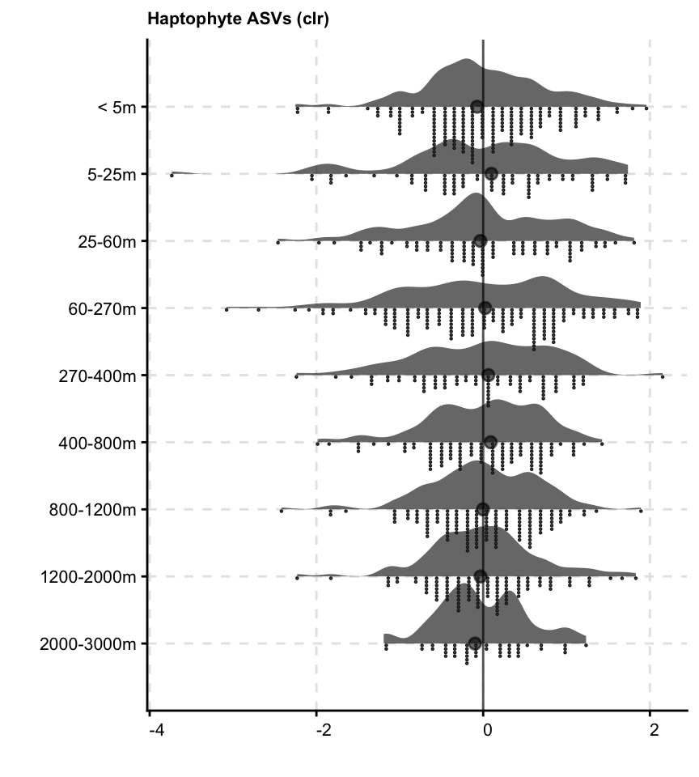
7.7 Archaeplastida
class_arch_mat <- asv_long_avg_wtax %>%
filter(Supergroup_simplified == "Archaeplastida") %>%
ungroup() %>%
mutate(CLASS = case_when(
is.na(Class) ~ "Dinoflagellata-Unannotated",
TRUE ~ Class)) %>%
group_by(CLASS, Station, DEPTH_BIN) %>%
summarise(SUM_SEQ = sum(MEAN_REPS_seq)) %>%
unite(SAMPLE, Station, DEPTH_BIN, sep = ";") %>%
pivot_wider(names_from = CLASS, values_from = SUM_SEQ, values_fn = mean, values_fill = 0) %>%
column_to_rownames(var = "SAMPLE") %>%
as.matrix`summarise()` has grouped output by 'CLASS', 'Station'. You can override using
the `.groups` argument.head(class_arch_mat) Bangiophyceae Chlorodendrophyceae Chlorophyceae Chlorophyta_XX
1;< 5m 3 724.5 57.0 0.00000
1;5-25m 0 37.0 26.5 16.50000
2;270-400m 0 546.5 142.5 92.00000
2;5-25m 0 8.0 11.0 7.00000
2;60-270m 0 1918.5 123.0 33.66667
2;< 5m 0 25.0 0.0 0.00000
Chloropicophyceae Dinoflagellata-Unannotated Embryophyceae
1;< 5m 0.0 95.00000 0
1;5-25m 72.5 50.50000 0
2;270-400m 54.0 102.00000 118
2;5-25m 163.5 3.00000 0
2;60-270m 11.0 35.83333 5
2;< 5m 16.0 23.50000 0
Florideophyceae Mamiellophyceae Nephroselmidophyceae
1;< 5m 0 821.00 296.00
1;5-25m 0 980.00 32.50
2;270-400m 0 680.00 35.00
2;5-25m 0 5879.50 0.00
2;60-270m 0 149.50 120.00
2;< 5m 0 295.75 12.25
Palmophyllophyceae Pedinophyceae Picocystophyceae Picozoa_XX
1;< 5m 57.50000 278.5 5 143.0000
1;5-25m 0.00000 9.0 0 320.5000
2;270-400m 33.00000 78.0 0 452.0000
2;5-25m 0.00000 0.0 0 401.5000
2;60-270m 28.16667 19.5 0 461.2500
2;< 5m 0.00000 0.0 0 414.5833
Porphyridiophyceae Prasino-Clade-9 Prasinodermophyceae
1;< 5m 46.5 0.00 91
1;5-25m 10.0 57.00 7
2;270-400m 45.0 85.00 0
2;5-25m 2.0 37.00 0
2;60-270m 14.0 72.50 8
2;< 5m 0.0 17.75 53
Pyramimonadophyceae Streptophyta_XX Trebouxiophyceae Ulvophyceae
1;< 5m 709.5 0.0 241.0 19.0
1;5-25m 93.0 0.0 56.5 6.5
2;270-400m 31.0 0.0 94.0 0.0
2;5-25m 73.0 12.5 20.0 0.0
2;60-270m 170.5 69.5 178.5 0.0
2;< 5m 95.5 0.0 24.0 0.0
Zygnemophyceae
1;< 5m 0
1;5-25m 0
2;270-400m 0
2;5-25m 0
2;60-270m 0
2;< 5m 0class_arch_clr <- vegan::decostand(class_arch_mat, MARGIN = 1, method = "rclr")
##
colnames(class_arch_clr) <- colnames(class_arch_mat)
rownames(class_arch_clr) <- rownames(class_arch_mat)
# data.frame(class_dino_clr)plot_arch_clr <- data.frame(class_arch_clr) %>%
rownames_to_column(var = "SAMPLE") %>%
pivot_longer(cols = -c(SAMPLE), names_to = "Class", values_to = "CLR") %>%
separate(SAMPLE, into = c("Station", "DEPTH_BIN"), sep = ";") %>%
mutate(stn = paste("S", Station, sep = "")) %>%
mutate(STN_ORDER = factor(stn, levels = offshore_on_shore_order)) %>%
mutate(DEPTH_BIN_ORDER = factor(DEPTH_BIN, levels = rev(depth_bin))) %>%
ggplot(aes(y = DEPTH_BIN_ORDER, x = Class, fill = CLR)) +
geom_tile(color = "grey30", linewidth = 0.4) +
facet_grid(rows = vars(STN_ORDER), space = "free_y", scale = "free_y") +
scale_x_discrete(position = "top") +
scale_fill_fermenter(type = "div", palette = 4, breaks = c(-3,-1,0,1,3)) +
theme_classic() +
theme(axis.ticks = element_blank(),
axis.text.x = element_text(color = "black", angle = 45, size = 7,
hjust = 0, vjust = 0.5),
axis.text.y = element_text(color = "black"),
strip.text.y = element_text(color = "black", angle = 0),
strip.background = element_blank()) +
labs(x = "", y = "")
plot_arch_clr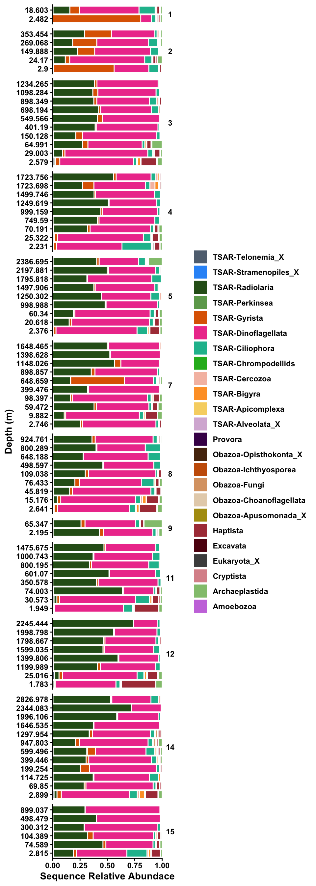
7.8 Compile taxa CLR plots
plot_dino_clr + plot_hapto_clr + plot_rad_clr + plot_cil_clr + plot_gyrista_clr + plot_bigya_clr + plot_layout(nrow = 1, widths = c(1, 2.6, 1.2, 2.6, 3.5, 0.8))
# ggsave("figures/clr-top-taxa.svg", width = 22, height = 11, device = "svg", limitsize = FALSE)8 Taxa by depth - curated
# install.packages("ggpattern")
library(ggpattern)unique(top_taxa$Supergroup_simplified)[1] "TSAR-Dinoflagellata" "TSAR-Radiolaria" "TSAR-Ciliophora"
[4] "Haptista" "TSAR-Gyrista" "Archaeplastida"
[7] "TSAR-Bigyra" head(asv_long_avg_wtax)# A tibble: 6 × 43
FeatureID Taxon DIVISION SUPERGROUP_CLASS Supergroup_simplified Supergroup
<chr> <chr> <chr> <chr> <chr> <chr>
1 0001b2ea4223… Euka… Dinofla… Dinoflagellata-… TSAR-Dinoflagellata TSAR
2 0004be388d73… Euka… Dinofla… Dinoflagellata-… TSAR-Dinoflagellata TSAR
3 000761c7389a… Euka… Dinofla… Dinoflagellata-… TSAR-Dinoflagellata TSAR
4 000964551660… Euka… Radiola… Radiolaria-Acan… TSAR-Radiolaria TSAR
5 000964551660… Euka… Radiola… Radiolaria-Acan… TSAR-Radiolaria TSAR
6 000964551660… Euka… Radiola… Radiolaria-Acan… TSAR-Radiolaria TSAR
# ℹ 37 more variables: Division <chr>, Subdivision <chr>, Class <chr>,
# Order <chr>, Family <chr>, Genus <chr>, Species <chr>, STN_NISKIN <chr>,
# Station <int>, Niskin <int>, Depth <dbl>, Latitude <dbl>, Longitude <dbl>,
# Pressure <dbl>, Temperature <dbl>, Salinity <dbl>, Oxygen <dbl>, NH4 <dbl>,
# NO2 <dbl>, NO3 <dbl>, PO4 <dbl>, SIL <dbl>, Prok_count <dbl>,
# STN_CATEGORY_3 <chr>, STN_CATEGORY_4 <chr>, STN_ORDER <fct>,
# TRANSECT <fct>, DEPTH_ORDER <fct>, DIST_OUTFLOW <dbl>, DEPTH_MAX <dbl>, …8.1 Dinoflagellata
DINO <- {mat_tmp <- asv_long_avg_wtax %>%
filter(Supergroup_simplified == "TSAR-Dinoflagellata") %>%
filter(MEAN_REPS_seq >= 100) %>%
ungroup() %>%
unite(TAXA, FeatureID, Family, sep = ";") %>%
unite(SAMPLE, DEPTH_BIN, sep = "_") %>%
group_by(TAXA, SAMPLE) %>%
summarise(SUM_SEQ = sum(MEAN_REPS_seq)) %>%
pivot_wider(names_from = TAXA, values_from = SUM_SEQ, values_fn = mean, values_fill = 0) %>%
column_to_rownames(var = "SAMPLE") %>%
as.matrix
# colnames(mat_tmp)
clr_tmp <- vegan::decostand(mat_tmp, MARGIN = 1, method = "rclr")
##
colnames(clr_tmp) <- colnames(mat_tmp)
rownames(clr_tmp) <- rownames(mat_tmp)
##
data.frame(clr_tmp) %>%
rownames_to_column(var = "SAMPLE") %>%
pivot_longer(cols = -c(SAMPLE), names_to = "TAXA", values_to = "CLR") %>%
# separate(FAMILY_GENUS_SPECIES, into = c("Family", "Genus", "Species"), sep = ";", remove = FALSE) %>%
separate(SAMPLE, into = c("DEPTH_BIN", "Station"), sep = "_") %>%
# mutate(stn = paste("S", Station, sep = "")) %>%
# mutate(STN_ORDER = factor(stn, levels = offshore_on_shore_order)) %>%
mutate(DEPTH_BIN_ORDER = factor(DEPTH_BIN, levels = rev(depth_bin))) %>%
ggplot(aes(y = DEPTH_BIN_ORDER, x = CLR, group = DEPTH_BIN_ORDER)) +
geom_vline(xintercept = 0, color = "grey90") +
geom_violin(width = 0.8, fill = "grey80",
color = "grey10",
alpha = 0.8, linewidth = 0.3) +
geom_jitter(height = 0.04, alpha = 0.2, shape = 21, fill = "white", color = "black", size = 0.75) +
# geom_violin(fill = NA) +
# ggdist::stat_halfeye(side = "top", adjust = 0.6, width = 0.1,
# justification = -0.1,
# fill = "black", alpha = 0.6) +
scale_x_continuous(limits = c(-4, 4)) +
theme_classic() +
theme(axis.text.x = element_text(color = "black", angle = 0, size = 8,
hjust = 0, vjust = 0.5),
axis.text.y = element_text(color = "black", size = 8),
plot.title = element_text(color = "black", size = 8, face = "bold"),
panel.grid.major = element_line(color = "grey90", linetype = "dashed"),
strip.text.y = element_text(color = "black", angle = 0),
strip.background = element_blank(),
legend.position = "right") +
labs(x = "CLR of all ASVs", y = "", title = "TSAR-Dinoflagellata") +
##
asv_long_avg_wtax %>%
filter(Supergroup_simplified == "TSAR-Dinoflagellata") %>%
filter(MEAN_REPS_seq >= 100) %>%
ungroup() %>%
group_by(DEPTH_BIN) %>%
summarise(ASV_COUNT = n()) %>%
mutate(DEPTH_BIN_ORDER = factor(DEPTH_BIN, levels = rev(depth_bin))) %>%
ggplot(aes(y = DEPTH_BIN_ORDER, x = 1, size = ASV_COUNT)) +
geom_point(shape = 21, fill = "black", color = "black") +
scale_size_continuous(range = c(2, 10)) +
theme_classic() +
theme(axis.text.x = element_blank(),
axis.text.y = element_text(color = "black", size = 8),
plot.title = element_text(color = "black", size = 8, face = "bold"),
panel.grid.major = element_line(color = "grey90", linetype = "dashed"),
strip.text.y = element_text(color = "black", angle = 0),
strip.background = element_blank(),
axis.ticks = element_blank(),
legend.position = "right",
legend.title = element_blank()) +
labs(x = "Total ASVs", y = "") +
##
asv_long_avg_wtax %>%
unite(TAXA, Class, Order, sep = ";", remove = FALSE) %>%
mutate(TAXA = case_when(
grepl("Labyrinthulomycetes", TAXA) ~ "Labyrinthulomycetes",
grepl("Pseudodendromonadales", TAXA) ~ "Pseudodendromonadales",
grepl("Dinophyceae_X", TAXA) ~ "Dinophyceae",
grepl("Dinophyta_X", TAXA) ~ "Dinophyta",
TRUE ~ TAXA
)) %>%
filter(!is.na(Order)) %>%
filter(Supergroup_simplified == "TSAR-Dinoflagellata") %>%
filter(MEAN_REPS_seq >= 100) %>%
ungroup() %>%
group_by(TAXA, DEPTH_BIN, Class) %>%
summarise(SEQ_SUM = sum(MEAN_REPS_seq)) %>%
mutate(DEPTH_BIN_ORDER = factor(DEPTH_BIN, levels = rev(depth_bin))) %>%
ggplot(aes(y = DEPTH_BIN_ORDER, x = SEQ_SUM, fill = TAXA, pattern = Class)) +
geom_bar(stat = "identity", color = "black", position = "fill", width = 0.6) +
# geom_bar_pattern(position="dodge", stat="identity", pattern_fill = "black",
# fill = "white", colour = "black", pattern_spacing = 0.01,
# pattern_frequency = 5, pattern_angle = 45) +
# geom_bar_pattern(stat = "identity", position = "fill", color = "black", width = 0.6) +
scale_fill_manual(values = c("#db1f7d", "#d16b9e", "#d1a9bd", "#8a1751", "#7a3759", "#78616c", "#540c30",
"#4d917b", "#89c977",
"#bfad0a", "#e8912e","#aba250", "#cc9e6a", "#a34e27")) +
# scale_pattern_manual(values = c("none","stripe", "none","vertical","hexagonal", "none")) +
# scale_pattern_type_manual(values=c(NA, NA, NA, NA, NA)) +
scale_x_continuous(expand = c(0,0)) +
theme_classic() +
theme(axis.text.x = element_text(color = "black", angle = 0, size = 8,
hjust = 0, vjust = 0.5),
axis.text.y = element_text(color = "black", size = 8),
plot.title = element_text(color = "black", size = 8, face = "bold"),
panel.grid.major = element_line(color = "grey90", linetype = "dashed"),
strip.text.y = element_text(color = "black", angle = 0),
strip.background = element_blank(),
legend.position = "right",
legend.title = element_blank()) +
labs(x = "Sequence Relative Abundance", y = "") +
guides(aesthetic = guide_legend(ncol = 1, reverse = FALSE)) +
plot_layout(nrow = 1, widths = c(1, 0.2, 1))}`summarise()` has grouped output by 'TAXA'. You can override using the
`.groups` argument.Warning: Expected 2 pieces. Missing pieces filled with `NA` in 37161 rows [1, 2, 3, 4,
5, 6, 7, 8, 9, 10, 11, 12, 13, 14, 15, 16, 17, 18, 19, 20, ...].`summarise()` has grouped output by 'TAXA', 'DEPTH_BIN'. You can override using
the `.groups` argument.DINO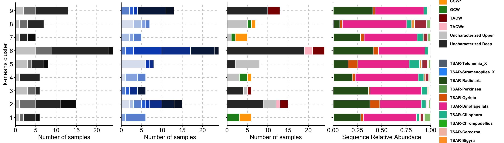
# ggsave("figures/dino_clr_richness_relabun.svg", width = 13, height = 4, device = "svg", limitsize = FALSE)8.2 Radiolaria
RAD <- {mat_tmp <- asv_long_avg_wtax %>%
filter(Supergroup_simplified == "TSAR-Radiolaria") %>%
filter(MEAN_REPS_seq >= 100) %>%
ungroup() %>%
unite(TAXA, FeatureID, Family, sep = ";") %>%
unite(SAMPLE, DEPTH_BIN, sep = "_") %>%
group_by(TAXA, SAMPLE) %>%
summarise(SUM_SEQ = sum(MEAN_REPS_seq)) %>%
pivot_wider(names_from = TAXA, values_from = SUM_SEQ, values_fn = mean, values_fill = 0) %>%
column_to_rownames(var = "SAMPLE") %>%
as.matrix
colnames(mat_tmp)
clr_tmp <- vegan::decostand(mat_tmp, MARGIN = 1, method = "rclr")
##
colnames(clr_tmp) <- colnames(mat_tmp)
rownames(clr_tmp) <- rownames(mat_tmp)
##
data.frame(clr_tmp) %>%
rownames_to_column(var = "SAMPLE") %>%
pivot_longer(cols = -c(SAMPLE), names_to = "TAXA", values_to = "CLR") %>%
# separate(FAMILY_GENUS_SPECIES, into = c("Family", "Genus", "Species"), sep = ";", remove = FALSE) %>%
separate(SAMPLE, into = c("DEPTH_BIN", "Station"), sep = "_") %>%
# mutate(stn = paste("S", Station, sep = "")) %>%
# mutate(STN_ORDER = factor(stn, levels = offshore_on_shore_order)) %>%
mutate(DEPTH_BIN_ORDER = factor(DEPTH_BIN, levels = rev(depth_bin))) %>%
ggplot(aes(y = DEPTH_BIN_ORDER, x = CLR, group = DEPTH_BIN_ORDER)) +
geom_vline(xintercept = 0, color = "grey90") +
geom_violin(width = 0.4, fill = "grey80", color = "grey10",
alpha = 0.8, linewidth = 0.3) +
geom_jitter(height = 0.04, alpha = 0.2, shape = 21, fill = "white", color = "black", size = 0.75) +
# geom_violin(fill = NA) +
# ggdist::stat_halfeye(side = "top", adjust = 0.6, width = 0.1,
# justification = -0.1,
# fill = "black", alpha = 0.6) +
scale_x_continuous(limits = c(-4, 4)) +
theme_classic() +
theme(axis.text.x = element_text(color = "black", angle = 0, size = 8,
hjust = 0, vjust = 0.5),
axis.text.y = element_text(color = "black", size = 8),
plot.title = element_text(color = "black", size = 8, face = "bold"),
panel.grid.major = element_line(color = "grey90", linetype = "dashed"),
strip.text.y = element_text(color = "black", angle = 0),
strip.background = element_blank(),
legend.position = "right") +
labs(x = "CLR of all ASVs", y = "", title = "TSAR-Radiolaria") +
##
asv_long_avg_wtax %>%
filter(Supergroup_simplified == "TSAR-Radiolaria") %>%
filter(MEAN_REPS_seq >= 100) %>%
ungroup() %>%
group_by(DEPTH_BIN) %>%
summarise(ASV_COUNT = n()) %>%
mutate(DEPTH_BIN_ORDER = factor(DEPTH_BIN, levels = rev(depth_bin))) %>%
ggplot(aes(y = DEPTH_BIN_ORDER, x = 1, size = ASV_COUNT)) +
geom_point(shape = 21, fill = "black", color = "black") +
scale_size_continuous(range = c(2, 10)) +
theme_classic() +
theme(axis.text.x = element_blank(),
axis.text.y = element_text(color = "black", size = 8),
plot.title = element_text(color = "black", size = 8, face = "bold"),
panel.grid.major = element_line(color = "grey90", linetype = "dashed"),
strip.text.y = element_text(color = "black", angle = 0),
strip.background = element_blank(),
axis.ticks = element_blank(),
legend.position = "right",
legend.title = element_blank()) +
labs(x = "Total ASVs", y = "") +
##
asv_long_avg_wtax %>%
unite(TAXA, Class, Order, sep = ";", remove = FALSE) %>%
mutate(TAXA = case_when(
grepl("Acantharea", TAXA) ~ "Acantharea",
grepl("RAD_A", TAXA) ~ "RAD_A",
grepl("RAD_B", TAXA) ~ "RAD_B",
grepl("RAD_C", TAXA) ~ "RAD_C",
grepl("Radiolaria_XX", TAXA) ~ "Radiolaria",
TRUE ~ TAXA
)) %>%
filter(!is.na(Order)) %>%
filter(Supergroup_simplified == "TSAR-Radiolaria") %>%
filter(MEAN_REPS_seq >= 100) %>%
ungroup() %>%
group_by(TAXA, DEPTH_BIN) %>%
summarise(SEQ_SUM = sum(MEAN_REPS_seq)) %>%
mutate(DEPTH_BIN_ORDER = factor(DEPTH_BIN, levels = rev(depth_bin))) %>%
ggplot(aes(y = DEPTH_BIN_ORDER, x = SEQ_SUM, fill = TAXA)) +
geom_bar(stat = "identity", color = "black", position = "fill", width = 0.6) +
scale_fill_manual(values = c("#805edb", "#afe3cd", "#164531", "#e3e340", "#c4c49b", "#5b6940", "#648bb3")) +
scale_x_continuous(expand = c(0,0)) +
theme_classic() +
theme(axis.text.x = element_text(color = "black", angle = 0, size = 8,
hjust = 0, vjust = 0.5),
axis.text.y = element_text(color = "black", size = 8),
plot.title = element_text(color = "black", size = 8, face = "bold"),
panel.grid.major = element_line(color = "grey90", linetype = "dashed"),
strip.text.y = element_text(color = "black", angle = 0),
strip.background = element_blank(),
legend.position = "right",
legend.title = element_blank()) +
labs(x = "Sequence Relative Abundance", y = "") +
plot_layout(nrow = 1, widths = c(1, 0.2, 1))}`summarise()` has grouped output by 'TAXA'. You can override using the
`.groups` argument.Warning: Expected 2 pieces. Missing pieces filled with `NA` in 11853 rows [1, 2, 3, 4,
5, 6, 7, 8, 9, 10, 11, 12, 13, 14, 15, 16, 17, 18, 19, 20, ...].`summarise()` has grouped output by 'TAXA'. You can override using the
`.groups` argument.RADWarning: Removed 1 row containing non-finite outside the scale range
(`stat_ydensity()`).Warning: Removed 1 row containing missing values or values outside the scale range
(`geom_point()`).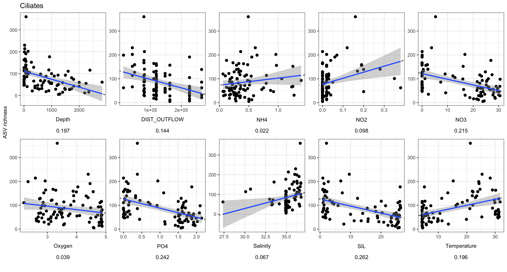
ggsave("figures/rad_clr_richness_relabun.svg", width = 13, height = 4, device = "svg", limitsize = FALSE)Warning: Removed 1 row containing non-finite outside the scale range
(`stat_ydensity()`).
Removed 1 row containing missing values or values outside the scale range
(`geom_point()`).8.3 Ciliate
other_ciliates <- c("Oligohymenophorea;Oligohymenophorea_X", "Litostomatea;Haptoria_6", "Heterotrichea;Heterotrichea_X", "Spirotrichea;Hypotrichia", "Ciliophora_X;Ciliophora_XX")
CILIATE <- {mat_tmp <- asv_long_avg_wtax %>%
filter(Supergroup_simplified == "TSAR-Ciliophora") %>%
filter(MEAN_REPS_seq >= 100) %>%
ungroup() %>%
unite(TAXA, FeatureID, Family, sep = ";") %>%
unite(SAMPLE, DEPTH_BIN, sep = "_") %>%
group_by(TAXA, SAMPLE) %>%
summarise(SUM_SEQ = sum(MEAN_REPS_seq)) %>%
pivot_wider(names_from = TAXA, values_from = SUM_SEQ, values_fn = mean, values_fill = 0) %>%
column_to_rownames(var = "SAMPLE") %>%
as.matrix
# colnames(mat_tmp)
clr_tmp <- vegan::decostand(mat_tmp, MARGIN = 1, method = "rclr")
##
colnames(clr_tmp) <- colnames(mat_tmp)
rownames(clr_tmp) <- rownames(mat_tmp)
##
data.frame(clr_tmp) %>%
rownames_to_column(var = "SAMPLE") %>%
pivot_longer(cols = -c(SAMPLE), names_to = "TAXA", values_to = "CLR") %>%
# separate(FAMILY_GENUS_SPECIES, into = c("Family", "Genus", "Species"), sep = ";", remove = FALSE) %>%
separate(SAMPLE, into = c("DEPTH_BIN", "Station"), sep = "_") %>%
# mutate(stn = paste("S", Station, sep = "")) %>%
# mutate(STN_ORDER = factor(stn, levels = offshore_on_shore_order)) %>%
mutate(DEPTH_BIN_ORDER = factor(DEPTH_BIN, levels = rev(depth_bin))) %>%
ggplot(aes(y = DEPTH_BIN_ORDER, x = CLR, group = DEPTH_BIN_ORDER)) +
geom_vline(xintercept = 0, color = "grey90") +
geom_violin(width = 0.4, fill = "grey80", color = "grey10",
alpha = 0.8, linewidth = 0.3) +
geom_jitter(height = 0.04, alpha = 0.2, shape = 21, fill = "white", color = "black", size = 0.75) +
# geom_violin(fill = NA) +
# ggdist::stat_halfeye(side = "top", adjust = 0.6, width = 0.1,
# justification = -0.1,
# fill = "black", alpha = 0.6) +
scale_x_continuous(limits = c(-4, 4)) +
theme_classic() +
theme(axis.text.x = element_text(color = "black", angle = 0, size = 8,
hjust = 0, vjust = 0.5),
axis.text.y = element_text(color = "black", size = 8),
plot.title = element_text(color = "black", size = 8, face = "bold"),
panel.grid.major = element_line(color = "grey90", linetype = "dashed"),
strip.text.y = element_text(color = "black", angle = 0),
strip.background = element_blank(),
legend.position = "right") +
labs(x = "CLR of all ASVs", y = "", title = "TSAR-Ciliophora") +
##
##
asv_long_avg_wtax %>%
filter(Supergroup_simplified == "TSAR-Ciliophora") %>%
filter(MEAN_REPS_seq >= 100) %>%
ungroup() %>%
group_by(DEPTH_BIN) %>%
summarise(ASV_COUNT = n()) %>%
mutate(DEPTH_BIN_ORDER = factor(DEPTH_BIN, levels = rev(depth_bin))) %>%
ggplot(aes(y = DEPTH_BIN_ORDER, x = 1, size = ASV_COUNT)) +
geom_point(shape = 21, fill = "black", color = "black") +
scale_size_continuous(range = c(2, 10)) +
theme_classic() +
theme(axis.text.x = element_blank(),
axis.text.y = element_text(color = "black", size = 8),
plot.title = element_text(color = "black", size = 8, face = "bold"),
panel.grid.major = element_line(color = "grey90", linetype = "dashed"),
strip.text.y = element_text(color = "black", angle = 0),
strip.background = element_blank(),
axis.ticks = element_blank(),
legend.position = "right",
legend.title = element_blank()) +
labs(x = "Total ASVs", y = "") +
##
asv_long_avg_wtax %>%
unite(TAXA, Class, Order, sep = ";", remove = FALSE) %>%
mutate(TAXA = case_when(
(TAXA %in% other_ciliates) ~ "Ciliates unannotated",
grepl("CONTH_", TAXA) ~ "CONThreeP unannotated",
grepl("CONThreeP_X", TAXA) ~ "CONThreeP unannotated",
(Class == "Discotrichidae") ~ "CONThreeP;Discotrichidae",
grepl("Phyllopharyngea;Cyrtophoria", TAXA) ~ "Phyllopharyngea;Cyrtophoria",
grepl("Spirotrichea;Choreotrichida", TAXA) ~ "Spirotrichea;Choreotrichida",
grepl("Litostomatea;Litostomatea_X", TAXA) ~ "Litostomatea",
grepl("Prostomatea_1;Prostomatea_1_X", TAXA) ~ "Prostomatea",
grepl("Colpodea_X", TAXA) ~ "Colpodea",
TRUE ~ TAXA
)) %>%
filter(!is.na(Order)) %>%
filter(Supergroup_simplified == "TSAR-Ciliophora") %>%
filter(MEAN_REPS_seq >= 100) %>%
ungroup() %>%
group_by(TAXA, DEPTH_BIN) %>%
summarise(SEQ_SUM = sum(MEAN_REPS_seq)) %>%
mutate(DEPTH_BIN_ORDER = factor(DEPTH_BIN, levels = rev(depth_bin))) %>%
ggplot(aes(y = DEPTH_BIN_ORDER, x = SEQ_SUM, fill = TAXA)) +
geom_bar(stat = "identity", color = "black", position = "fill", width = 0.6) +
scale_x_continuous(expand = c(0,0)) +
scale_fill_manual(values = c("#f5bfb0", "#ed7e5f", "#d13206",
"#cf9229",
"#cfcf57", "#d1d106",
"#accf97", "#7ade3c", "#7ade3c", "#84c2a5", "#2edb8a", "#02703d",
"#3899a8", "#5402e0", "#916dcf", "#604a70")) +
theme_classic() +
theme(axis.text.x = element_text(color = "black", angle = 0, size = 8,
hjust = 0, vjust = 0.5),
axis.text.y = element_text(color = "black", size = 8),
plot.title = element_text(color = "black", size = 8, face = "bold"),
panel.grid.major = element_line(color = "grey90", linetype = "dashed"),
strip.text.y = element_text(color = "black", angle = 0),
strip.background = element_blank(),
legend.position = "right",
legend.title = element_blank()) +
labs(x = "Sequence Relative Abundance", y = "") +
guides(aesthetic = guide_legend(ncol = 1, reverse = FALSE)) +
plot_layout(nrow = 1, widths = c(1, 0.2, 1))}`summarise()` has grouped output by 'TAXA'. You can override using the
`.groups` argument.Warning: Expected 2 pieces. Missing pieces filled with `NA` in 5418 rows [1, 2, 3, 4, 5,
6, 7, 8, 9, 10, 11, 12, 13, 14, 15, 16, 17, 18, 19, 20, ...].`summarise()` has grouped output by 'TAXA'. You can override using the
`.groups` argument.CILIATEWarning: Removed 1 row containing non-finite outside the scale range
(`stat_ydensity()`).Warning: Removed 1 row containing missing values or values outside the scale range
(`geom_point()`).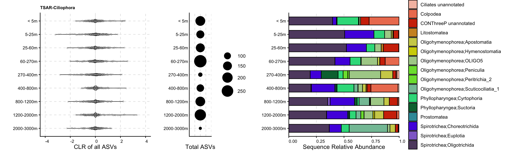
ggsave("figures/ciliate_clr_richness_relabun.svg", width = 13, height = 4, device = "svg", limitsize = FALSE)Warning: Removed 1 row containing non-finite outside the scale range
(`stat_ydensity()`).
Removed 1 row containing missing values or values outside the scale range
(`geom_point()`).8.4 Gyrista
gyrista_less <- c("Pelagophyceae unannotated", "Pelagophyceae;NA","Coscinodiscophyceae;Coscinodiscales", "Bacillariophyceae;Licmophorales", "Eustigmatophyceae;Eustigmatophyceae_X", "Pirsoniales;Pirsoniales_X","Peronosporomycetes;Peronosporomycetes_X", "Bacillariophyceae;Cymbellales")
GYRISTA <- {mat_tmp <- asv_long_avg_wtax %>%
filter(Supergroup_simplified == "TSAR-Gyrista") %>%
filter(MEAN_REPS_seq >= 100) %>%
ungroup() %>%
unite(TAXA, FeatureID, Family, sep = ";") %>%
unite(SAMPLE, DEPTH_BIN, sep = "_") %>%
group_by(TAXA, SAMPLE) %>%
summarise(SUM_SEQ = sum(MEAN_REPS_seq)) %>%
pivot_wider(names_from = TAXA, values_from = SUM_SEQ, values_fn = mean, values_fill = 0) %>%
column_to_rownames(var = "SAMPLE") %>%
as.matrix
# colnames(mat_tmp)
clr_tmp <- vegan::decostand(mat_tmp, MARGIN = 1, method = "rclr")
##
colnames(clr_tmp) <- colnames(mat_tmp)
rownames(clr_tmp) <- rownames(mat_tmp)
##
data.frame(clr_tmp) %>%
rownames_to_column(var = "SAMPLE") %>%
pivot_longer(cols = -c(SAMPLE), names_to = "TAXA", values_to = "CLR") %>%
separate(SAMPLE, into = c("DEPTH_BIN", "Station"), sep = "_") %>%
# mutate(stn = paste("S", Station, sep = "")) %>%
# mutate(STN_ORDER = factor(stn, levels = offshore_on_shore_order)) %>%
mutate(DEPTH_BIN_ORDER = factor(DEPTH_BIN, levels = rev(depth_bin))) %>%
ggplot(aes(y = DEPTH_BIN_ORDER, x = CLR, group = DEPTH_BIN_ORDER)) +
geom_vline(xintercept = 0, color = "grey90") +
geom_violin(width = 0.4, fill = "grey80", color = "grey10",
alpha = 0.8, linewidth = 0.3) +
geom_jitter(height = 0.04, alpha = 0.2, shape = 21, fill = "white", color = "black", size = 0.75) +
# geom_violin(fill = NA) +
# ggdist::stat_halfeye(side = "top", adjust = 0.6, width = 0.1,
# justification = -0.1,
# fill = "black", alpha = 0.6) +
scale_x_continuous(limits = c(-4, 4)) +
theme_classic() +
theme(axis.text.x = element_text(color = "black", angle = 0, size = 8,
hjust = 0, vjust = 0.5),
axis.text.y = element_text(color = "black", size = 8),
plot.title = element_text(color = "black", size = 8, face = "bold"),
panel.grid.major = element_line(color = "grey90", linetype = "dashed"),
strip.text.y = element_text(color = "black", angle = 0),
strip.background = element_blank(),
legend.position = "right") +
labs(x = "CLR of all ASVs", y = "", title = "TSAR-Gyrista") +
##
asv_long_avg_wtax %>%
filter(Supergroup_simplified == "TSAR-Gyrista") %>%
filter(MEAN_REPS_seq >= 100) %>%
ungroup() %>%
group_by(DEPTH_BIN) %>%
summarise(ASV_COUNT = n()) %>%
mutate(DEPTH_BIN_ORDER = factor(DEPTH_BIN, levels = rev(depth_bin))) %>%
ggplot(aes(y = DEPTH_BIN_ORDER, x = 1, size = ASV_COUNT)) +
geom_point(shape = 21, fill = "black", color = "black") +
scale_size_continuous(range = c(2, 10)) +
theme_classic() +
theme(axis.text.x = element_blank(),
axis.text.y = element_text(color = "black", size = 8),
plot.title = element_text(color = "black", size = 8, face = "bold"),
panel.grid.major = element_line(color = "grey90", linetype = "dashed"),
strip.text.y = element_text(color = "black", angle = 0),
strip.background = element_blank(),
axis.ticks = element_blank(),
legend.position = "right",
legend.title = element_blank()) +
labs(x = "Total ASVs", y = "") +
##
asv_long_avg_wtax %>%
unite(TAXA, Class, Order, sep = ";", remove = FALSE) %>%
filter(Supergroup_simplified == "TSAR-Gyrista") %>%
filter(MEAN_REPS_seq >= 100) %>%
mutate(TAXA = case_when(
is.na(Class) ~ "Gyrista other",
(TAXA %in% gyrista_less) ~ "Gyrista other",
grepl(";NA", TAXA) ~ paste(Class, "unannotated", sep = " "),
(TAXA == "Gyrista_X;Gyrista_XX") ~ "Gyrista other",
grepl("Dictyochophyceae", TAXA) ~ "Dictyochophyceae",
grepl("Chrysophyceae_Clade-EC2", TAXA) ~ "Chrysophyceae_Clade-EC2",
grepl("Bacillariophyceae;Bacillariophyceae_X", TAXA) ~ "Bacillariophyceae unannotated",
grepl("Pelagophyceae", TAXA) ~ "Pelagophyceae;Pelagomonadales",
grepl("MOCH-", TAXA) ~ "MOCH clades 2-5",
(TAXA == "Mediophyceae;Mediophyceae_X" | TAXA == "Mediophyceae;NA") ~ "Mediophyceae unannotated",
TRUE ~ TAXA
)) %>%
ungroup() %>%
group_by(TAXA, DEPTH_BIN) %>%
summarise(SEQ_SUM = sum(MEAN_REPS_seq)) %>%
mutate(DEPTH_BIN_ORDER = factor(DEPTH_BIN, levels = rev(depth_bin))) %>%
ggplot(aes(y = DEPTH_BIN_ORDER, x = SEQ_SUM, fill = TAXA)) +
geom_bar(stat = "identity", color = "black", position = "fill", width = 0.6) +
scale_fill_manual(values = c("#93c47d", "#7db7c4", "#a27dc4",
"#d65c1a", "#c98d6d", "#662a0a", "#805944", "#a3690b",
"#d93529", "#736b6b","#d4cf44",
"#8ce663", "#38a605",
"#0ba7d6","#1836cc", "#6abbd4", "#5669c4","#97b8c2",
"#5cd1b8",
"#d596e3", "#b82fd6", "#a10b83","#a85b99")) +
scale_x_continuous(expand = c(0,0)) +
theme_classic() +
theme(axis.text.x = element_text(color = "black", angle = 0, size = 8,
hjust = 0, vjust = 0.5),
axis.text.y = element_text(color = "black", size = 8),
plot.title = element_text(color = "black", size = 8, face = "bold"),
panel.grid.major = element_line(color = "grey90", linetype = "dashed"),
strip.text.y = element_text(color = "black", angle = 0),
strip.background = element_blank(),
legend.position = "right",
legend.title = element_blank()) +
labs(x = "Sequence Relative Abundance", y = "") +
guides(aesthetic = guide_legend(ncol = 1)) +
plot_layout(nrow = 1, widths = c(1, 0.2, 1))}`summarise()` has grouped output by 'TAXA'. You can override using the
`.groups` argument.Warning: Expected 2 pieces. Missing pieces filled with `NA` in 2151 rows [1, 2, 3, 4, 5,
6, 7, 8, 9, 10, 11, 12, 13, 14, 15, 16, 17, 18, 19, 20, ...].`summarise()` has grouped output by 'TAXA'. You can override using the
`.groups` argument.GYRISTAWarning: Removed 1 row containing non-finite outside the scale range
(`stat_ydensity()`).Warning: Removed 1 row containing missing values or values outside the scale range
(`geom_point()`).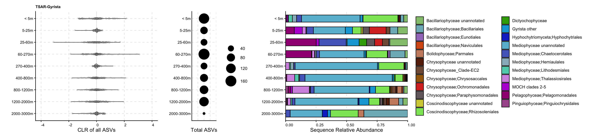
# ggsave("figures/gyrista_clr_richness_relabun.svg", width = 17, height = 4, device = "svg", limitsize = FALSE)8.5 Bigyra
mat_tmp <- asv_long_avg_wtax %>%
filter(Supergroup_simplified == "TSAR-Bigyra") %>%
filter(MEAN_REPS_seq >= 100) %>%
ungroup() %>%
unite(TAXA, FeatureID, Family, sep = ";") %>%
unite(SAMPLE, DEPTH_BIN, sep = "_") %>%
group_by(TAXA, SAMPLE) %>%
summarise(SUM_SEQ = sum(MEAN_REPS_seq)) %>%
pivot_wider(names_from = TAXA, values_from = SUM_SEQ, values_fn = mean, values_fill = 0) %>%
column_to_rownames(var = "SAMPLE") %>%
as.matrix`summarise()` has grouped output by 'TAXA'. You can override using the
`.groups` argument. colnames(mat_tmp) [1] "015e7a464d7bc5a2a2c8e7c81c752f1a;MAST-3"
[2] "0197a4c5204649413156e892f720d07b;MAST-11"
[3] "08316f4238ff683054c86eaace77cd65;Labyrinthulaceae"
[4] "0951cbafa9af3ed69eb56b9cad3bc656;Labyrinthulaceae"
[5] "09c590793b9a318d23b843c253903da0;NA"
[6] "0b0635bb9da8fbca49e12e13e0568d18;Cafeteriaceae"
[7] "0b211851f69d94cab3507c746e5cb9d5;MAST-3"
[8] "0f0923c8e431d35175bb434a64db1528;Thraustochytriaceae"
[9] "0f74425c03687f3d3827e9dabb43d40b;Pseudodendromonadales_X"
[10] "118f9b2df801c2b9d83d83be8351e3c4;MAST-3"
[11] "194337473f67eb815efa2ec8c1dcc170;MAST-3"
[12] "1e4c3e31df71052e2fc2a892aec2802c;MAST-3"
[13] "1f43b67563b03724981965aa5764fd4d;Thraustochytriaceae"
[14] "21f4a060981d88a7e3a8df10a93a0163;MAST-3"
[15] "227631fc0ff033dcd9234e44daa10708;MAST-3"
[16] "25427a0880d595ab25199e887c3f2d1c;MAST-3"
[17] "25f8006fe4b026e4e0aa3fa48fac264d;MAST-3"
[18] "27f131d657ebf7719e2a7525390601b5;MAST-3"
[19] "28abafed979559d6de3b018c64629052;MAST-3"
[20] "296acf82d9384b397b40995951b20dd7;MAST-3"
[21] "32b0eb718c06b9304179ef0b2db8da55;MAST-8"
[22] "3315a524b5cf5793516d7ef7b5a19d04;Thraustochytriaceae"
[23] "3378e79380d8256a1fd0a1af7eb428e4;MAST-7"
[24] "33bb7c6c5041d9e786eb5df3d4f33ad0;MAST-3"
[25] "3c01a88bd6c0eb651ecb54164cdddc81;MAST-7"
[26] "43fbb45286d12cf4a612c92d9f75614c;MAST-4"
[27] "45be46e3657df75d893b609ff44e4fd7;MAST-3"
[28] "46350a8284b950c39d94113d46f6b0bf;MAST-3"
[29] "4716e7babea4ffef5e10f58e8af2ce73;MAST-3"
[30] "4833fcd17e9de8061464470858c617c5;Labyrinthulomycetes_LAB15"
[31] "4849b4c641ccf82038d49f898cec1672;MAST-7"
[32] "48847217c7e67f614ae1001793573c59;MAST-12"
[33] "48d3b6a858da7a14ca2f0b90be4a6739;MAST-3"
[34] "49743a20701371b6a79b3243eb9fc2a0;MAST-7"
[35] "4996ca66c61978aadfa57fd7deca7b3d;MAST-3"
[36] "49e0d6d46080b80a850e2cf8dd4112a3;Labyrinthulomycetes_LAB15"
[37] "4a7f46bb8c009339a37283214ecf1360;Thraustochytriaceae"
[38] "4b089a4f8b01882984ba870c1de4e29f;MAST-3"
[39] "4c588a6b8b8fac7fbc13c09ae066a440;NA"
[40] "4d1221b47bf2ebc1059368debe784349;MAST-11"
[41] "4d1b173f81e711afb993026df18ab6b9;Labyrinthulomycetes_LAB15"
[42] "4d2e4c2517f6d650740049f532546090;MAST-9"
[43] "4d791a3676a8d3a6d0ad021164fcd2dd;MAST-12"
[44] "4db340e94bd9bacce8e6dda36230ba5b;MAST-3"
[45] "4e71c57d62a42f072f6e67ce4acef0fa;Thraustochytriaceae"
[46] "50030e571bed722599ba89e5a533fa9a;Labyrinthulomycetes_LAB15"
[47] "505d5062258b5e74971f52e779188d65;MAST-3"
[48] "51003a7bbe360e5c17f171442b9687fc;MAST-4"
[49] "5101b9ab582658f13880f39e75321f3e;Labyrinthulomycetes_LAB15"
[50] "572ae230ec8f863c5c966a2df8878632;Labyrinthulaceae"
[51] "58be3eadc637aee5c68897d61599c718;MAST-3"
[52] "599ad9818e598440ae9067b4a98b8440;Labyrinthulomycetes_LAB1/6/8"
[53] "5baabcae8470dcb475fc7f5189bf1544;Labyrinthulomycetes_LAB15"
[54] "5c46baba43caf0778fd83b7b57411cd7;MAST-3"
[55] "5c773dfddf27158f84a4befa8e669e12;MAST-3"
[56] "5e2a892af2d4555ff4bf36bdf252efc2;Labyrinthulomycetes_LAB14"
[57] "5f50df235eebb78747c5e399074a9c01;MAST-3"
[58] "5fb6b8b7a166c7a1d80b260597e3ca5c;MAST-12"
[59] "611cdc8816cbdcb6da5a51e674c1fbac;NA"
[60] "6181ccbc1973af4aefcf9a74834fd870;MAST-4"
[61] "61942f81931791688aeaceba88913582;MAST-3"
[62] "640e2ee6f7197f9bcc1485f8d475ccc4;MAST-3"
[63] "647dafa63d1e899d84ccfd98c365a5b7;MAST-3"
[64] "64a9cc203fcb0cdf4f1f03cd18dcb4a3;MAST-3"
[65] "64f60bd4fa882310fccb1a0dddfdc106;MAST-12"
[66] "665cebd10f03e4c9656dff5f3011c00c;MAST-3"
[67] "66e7904bb1e807ae23483d8c021956e0;Labyrinthulomycetes_LAB14"
[68] "68846845859d2523131e44de1347eb4f;MAST-3"
[69] "68b21c322e4b2f1e81a8abefd7c4ae17;MAST-3"
[70] "6d4212e851cf07ad421402c1e4a083c2;MAST-3"
[71] "6d79dda1be8786b3376d5968384f7e74;MAST-3"
[72] "6dfff043937ad8edbb47b0d6409de861;Labyrinthulomycetes_LAB15"
[73] "74772fa1d801a669d885d3abf208cc83;MAST-8"
[74] "765182bd3062bc912e74dfa77af4ebfc;MAST-4"
[75] "77efad0f3974d613d1da4badf3ffc80f;MAST-3"
[76] "7880dfe15414a4cc242f5799a64db380;Labyrinthulomycetes_LAB14"
[77] "79134951016df2567a9821ffc24754e3;MAST-9"
[78] "7a10bc4f2e89129c655f1c21e6f30f7b;MAST-3"
[79] "7ab75ee8b7047a4cb9f9e730e03bdb7a;MAST-3"
[80] "7b2e0c6384bd8bb8cc5d536867344435;MAST-4"
[81] "7cc269e5bf6a1b43327c0cfa592cfe60;Labyrinthulomycetes_LAB15"
[82] "81ac1c14a8a5770881a25eb01c6d48ce;MAST-3"
[83] "83ace5fb6149ede4c8805bed3dccb47c;MAST-3"
[84] "84fe928973ce331663d728b6866df3e9;MAST-3"
[85] "85b55ca5ab585f705f5905bc8f2ff7ec;MAST-3"
[86] "88b80abb1768d47213c1748e7dad1903;MAST-3"
[87] "88f49ebc7c6f9045494a2a64565460e3;MAST-3"
[88] "8c9a47c36ee052aea3e7f8b6c66383dc;MAST-8"
[89] "8e3d180a710885291b72f8cc9d82a23a;Labyrinthulomycetes_LAB15"
[90] "8fc28b136feac7520d8138182d1dc476;MAST-3"
[91] "92306b1630701d43a1d22161fb227fe6;MAST-12"
[92] "927acc195d64b3c0b5793f6ead2b6c31;Pseudodendromonadales_X"
[93] "936d82952106281b6f802f8e9edb7a29;MAST-11"
[94] "950ae28cef6dabdd858ec3f9c391604b;MAST-3"
[95] "9549b704360f84d81aa04ed56945fec0;MAST-3"
[96] "9751d72822614065bfabd527878fc718;MAST-4"
[97] "9791e345ad3f43cab7bda588bd466490;MAST-3"
[98] "97e7e35251510ab5cb7e35142724e5a9;MAST-3"
[99] "9874ecc5e3ea900af7e179c4af154a80;MAST-3"
[100] "98bd22d8de4fc6e26b77845666f720b6;MAST-12"
[101] "a494ec73086489394590f0d0b7836472;MAST-3"
[102] "a4da6bfc96c8958099bd99f7f2ef6bb2;MAST-3"
[103] "a7c14b192787499d165694a5e7ea37ce;MAST-3"
[104] "a9f0c64bab1e0fa96985fd00e838508a;MAST-4"
[105] "abc5e99391206cc650c08c2fe09ebf78;MAST-4"
[106] "aeb6827603e84ef7dc0bc5869764fb00;Labyrinthulomycetes_LAB7"
[107] "b02db498c5c9a4cb70e01671188efe77;MAST-3"
[108] "b3156c27a0a2f3bc571538f307ec6120;Labyrinthulomycetes_LAB1/6/8"
[109] "b355da0856b4efc35997c1b3d411e1bd;MAST-11"
[110] "b35804e06b892973b9ae84ff4a802d0c;Labyrinthulaceae"
[111] "b3b300dd70bbc9509b7762185c7efec5;MAST-12"
[112] "b4494f1310963669f3125293c3266f0c;Labyrinthulomycetes_LAB15"
[113] "b7d5d6ce25c72d949ff58aaeb306689d;Thraustochytriaceae"
[114] "b9a5246aef2365cf0475de8fa0c0b432;MAST-3"
[115] "bb6e1328d72a656c9a1e461e412aed0f;MAST-3"
[116] "bbe660a0c8c82229da09faa1022e2426;Labyrinthulomycetes_LAB14"
[117] "be67993eaf2fe5eac7199f921fddbef7;MAST-3"
[118] "c115ae651d8e3531f1ca9b5e0b552764;MAST-3"
[119] "c1985e1c57d247df6072041e6141b41f;MAST-3"
[120] "c3fe30bf1a555f2ff4831a714414a28f;MAST-3"
[121] "cc7c7c8d4e322316314db824e1a82124;MAST-3"
[122] "cd7fbca1cd114ab5a695903d534fc6b5;MAST-3"
[123] "ce063b4eccc0aae7d5a9dda14c016d5c;MAST-3"
[124] "ce6808beedca61425c16cbca371c59e5;MAST-3"
[125] "d039131de6726f975ecc0e174139fd8b;MAST-4"
[126] "d0c82f12a2a2f84dc9bada8e39a43691;Labyrinthulomycetes_LAB1/6/8"
[127] "d167297cfb56c02e51b70396d258e91d;MAST-3"
[128] "d4591ad0229b7c5e5c49ad5afd69b9dc;MAST-4"
[129] "dd3632e2f3280a6b9c585389dc148520;MAST-3"
[130] "dde5d2b180801b81295a1a64debd7d7f;MAST-7"
[131] "de44473c20fd75afe670a95ad99a2d22;MAST-3"
[132] "e2a6e2d7760e648ef4fd755a1380c93d;MAST-9"
[133] "e35f44ab46d31581d3b03116a09d9238;MAST-7"
[134] "e48b8d6174dab7fc37f6dd0c2db9332f;NA"
[135] "e504d02509dea7ae21daa9b2cdefda39;Labyrinthulomycetes_LAB14"
[136] "ed592f4841d0c389cf66aea4261b0fa4;MAST-3"
[137] "ee2d358363974509f2b4de88a2abf5a5;Thraustochytriaceae"
[138] "efe40c8feca0b659b1977085afc774f2;Pseudodendromonadales_X"
[139] "f084bc192d24b100cd669d6a51c373f4;MAST-3"
[140] "f0bcb2f583a32c4931244476a962f148;MAST-3"
[141] "f42dda6522d03646596367c5d35b3634;MAST-8"
[142] "f7831824a02d087ad23339718ea1da34;MAST-3"
[143] "f8430c834621130ea1ce906866f2fe56;MAST-4"
[144] "f89db477fb23b38a5b57b6371e0ac344;Labyrinthulomycetes_LAB15"
[145] "f89f940cc80064e9d701c0d8fbf42b84;MAST-3"
[146] "f9332964af0439547d685ad674fff02a;MAST-3"
[147] "fcb072146c6d9d6cd825f85811f6f120;MAST-3"
[148] "fd96c5bcf4bbac0e850e4473c870f606;Labyrinthulomycetes_LAB15"
[149] "fe18fa29bbc0e14a1961e573df6cdcd3;Thraustochytriaceae"
[150] "fea5798bdc02fcfa4db1ce68c5ac863b;MAST-10" clr_tmp <- vegan::decostand(mat_tmp, MARGIN = 1, method = "rclr")
##
colnames(clr_tmp) <- colnames(mat_tmp)
rownames(clr_tmp) <- rownames(mat_tmp)
##
data.frame(clr_tmp) %>%
rownames_to_column(var = "SAMPLE") %>%
pivot_longer(cols = -c(SAMPLE), names_to = "TAXA", values_to = "CLR") %>%
# separate(FAMILY_GENUS_SPECIES, into = c("Family", "Genus", "Species"), sep = ";", remove = FALSE) %>%
separate(SAMPLE, into = c("DEPTH_BIN", "Station"), sep = "_") %>%
# mutate(stn = paste("S", Station, sep = "")) %>%
# mutate(STN_ORDER = factor(stn, levels = offshore_on_shore_order)) %>%
mutate(DEPTH_BIN_ORDER = factor(DEPTH_BIN, levels = rev(depth_bin))) %>%
ggplot(aes(y = DEPTH_BIN_ORDER, x = CLR, group = DEPTH_BIN_ORDER)) +
geom_vline(xintercept = 0, color = "grey90") +
geom_violin(width = 0.4, fill = "grey80", color = "grey10",
alpha = 0.8, linewidth = 0.3) +
geom_jitter(height = 0.04, alpha = 0.2, shape = 21, fill = "white", color = "black", size = 0.75) +
# geom_violin(fill = NA) +
# ggdist::stat_halfeye(side = "top", adjust = 0.6, width = 0.1,
# justification = -0.1,
# fill = "black", alpha = 0.6) +
scale_x_continuous(limits = c(-4, 4)) +
theme_classic() +
theme(axis.text.x = element_text(color = "black", angle = 0, size = 8,
hjust = 0, vjust = 0.5),
axis.text.y = element_text(color = "black", size = 8),
plot.title = element_text(color = "black", size = 8, face = "bold"),
panel.grid.major = element_line(color = "grey90", linetype = "dashed"),
strip.text.y = element_text(color = "black", angle = 0),
strip.background = element_blank(),
legend.position = "right") +
labs(x = "CLR of all ASVs", y = "", title = "TSAR-Bigyra") +
##
asv_long_avg_wtax %>%
filter(Supergroup_simplified == "TSAR-Bigyra") %>%
filter(MEAN_REPS_seq >= 100) %>%
ungroup() %>%
group_by(DEPTH_BIN) %>%
summarise(ASV_COUNT = n()) %>%
mutate(DEPTH_BIN_ORDER = factor(DEPTH_BIN, levels = rev(depth_bin))) %>%
ggplot(aes(y = DEPTH_BIN_ORDER, x = 1, size = ASV_COUNT)) +
geom_point(shape = 21, fill = "black", color = "black") +
scale_size_continuous(range = c(2, 10)) +
theme_classic() +
theme(axis.text.x = element_blank(),
axis.text.y = element_text(color = "black", size = 8),
plot.title = element_text(color = "black", size = 8, face = "bold"),
panel.grid.major = element_line(color = "grey90", linetype = "dashed"),
strip.text.y = element_text(color = "black", angle = 0),
strip.background = element_blank(),
axis.ticks = element_blank(),
legend.position = "right",
legend.title = element_blank()) +
labs(x = "Total ASVs", y = "") +
##
asv_long_avg_wtax %>%
unite(TAXA, Order, Family, sep = ";", remove = FALSE) %>%
mutate(TAXA = case_when(
grepl("Labyrinthulomycetes", TAXA) ~ "Labyrinthulomycetes",
grepl("Pseudodendromonadales", TAXA) ~ "Pseudodendromonadales",
TRUE ~ TAXA
)) %>%
filter(!is.na(Order)) %>%
filter(Supergroup_simplified == "TSAR-Bigyra") %>%
filter(MEAN_REPS_seq >= 100) %>%
ungroup() %>%
group_by(TAXA, DEPTH_BIN) %>%
summarise(SEQ_SUM = sum(MEAN_REPS_seq)) %>%
mutate(DEPTH_BIN_ORDER = factor(DEPTH_BIN, levels = rev(depth_bin))) %>%
ggplot(aes(y = DEPTH_BIN_ORDER, x = SEQ_SUM, fill = TAXA)) +
geom_bar(stat = "identity", color = "black", position = "fill", width = 0.6) +
theme_classic() +
theme(axis.text.x = element_text(color = "black", angle = 0, size = 8,
hjust = 0, vjust = 0.5),
axis.text.y = element_text(color = "black", size = 8),
plot.title = element_text(color = "black", size = 8, face = "bold"),
panel.grid.major = element_line(color = "grey90", linetype = "dashed"),
strip.text.y = element_text(color = "black", angle = 0),
strip.background = element_blank(),
legend.position = "right",
legend.title = element_blank()) +
labs(x = "Sequence Relative Abundance", y = "") +
plot_layout(nrow = 1, widths = c(1, 0.2, 1))Warning: Expected 2 pieces. Missing pieces filled with `NA` in 1350 rows [1, 2, 3, 4, 5,
6, 7, 8, 9, 10, 11, 12, 13, 14, 15, 16, 17, 18, 19, 20, ...].`summarise()` has grouped output by 'TAXA'. You can override using the
`.groups` argument.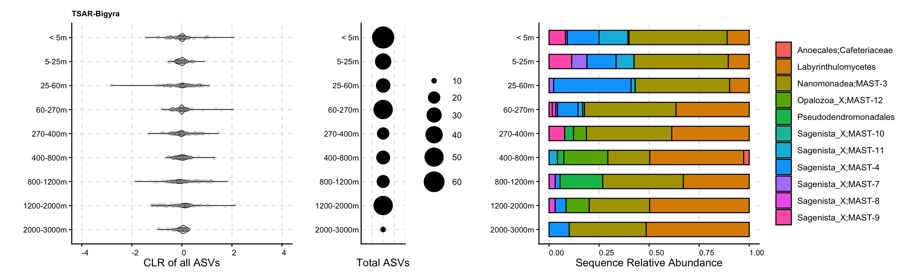
# ggsave("figures/bigyra_clr_richness_relabun.svg", width = 13, height = 4, device = "svg", limitsize = FALSE)8.6 Haptista
mat_tmp <- asv_long_avg_wtax %>%
filter(Supergroup_simplified == "Haptista") %>%
filter(MEAN_REPS_seq >= 100) %>%
ungroup() %>%
unite(TAXA, FeatureID, Family, sep = ";") %>%
unite(SAMPLE, DEPTH_BIN, sep = "_") %>%
group_by(TAXA, SAMPLE) %>%
summarise(SUM_SEQ = sum(MEAN_REPS_seq)) %>%
pivot_wider(names_from = TAXA, values_from = SUM_SEQ, values_fn = mean, values_fill = 0) %>%
column_to_rownames(var = "SAMPLE") %>%
as.matrix`summarise()` has grouped output by 'TAXA'. You can override using the
`.groups` argument. # colnames(mat_tmp)
clr_tmp <- vegan::decostand(mat_tmp, MARGIN = 1, method = "rclr")
##
colnames(clr_tmp) <- colnames(mat_tmp)
rownames(clr_tmp) <- rownames(mat_tmp)
##
data.frame(clr_tmp) %>%
rownames_to_column(var = "SAMPLE") %>%
pivot_longer(cols = -c(SAMPLE), names_to = "TAXA", values_to = "CLR") %>%
# separate(FAMILY_GENUS_SPECIES, into = c("Family", "Genus", "Species"), sep = ";", remove = FALSE) %>%
separate(SAMPLE, into = c("DEPTH_BIN", "Station"), sep = "_") %>%
# mutate(stn = paste("S", Station, sep = "")) %>%
# mutate(STN_ORDER = factor(stn, levels = offshore_on_shore_order)) %>%
mutate(DEPTH_BIN_ORDER = factor(DEPTH_BIN, levels = rev(depth_bin))) %>%
ggplot(aes(y = DEPTH_BIN_ORDER, x = CLR, group = DEPTH_BIN_ORDER)) +
geom_vline(xintercept = 0, color = "grey90") +
geom_violin(width = 0.4, fill = "grey80", color = "grey10",
alpha = 0.8, linewidth = 0.3) +
geom_jitter(height = 0.04, alpha = 0.2, shape = 21, fill = "white", color = "black", size = 0.75) +
# geom_violin(fill = NA) +
# ggdist::stat_halfeye(side = "top", adjust = 0.6, width = 0.1,
# justification = -0.1,
# fill = "black", alpha = 0.6) +
scale_x_continuous(limits = c(-4, 4)) +
theme_classic() +
theme(axis.text.x = element_text(color = "black", angle = 0, size = 8,
hjust = 0, vjust = 0.5),
axis.text.y = element_text(color = "black", size = 8),
plot.title = element_text(color = "black", size = 8, face = "bold"),
panel.grid.major = element_line(color = "grey90", linetype = "dashed"),
strip.text.y = element_text(color = "black", angle = 0),
strip.background = element_blank(),
legend.position = "right") +
labs(x = "CLR of all ASVs", y = "", title = "Haptista") +
##
asv_long_avg_wtax %>%
filter(Supergroup_simplified == "Haptista") %>%
filter(MEAN_REPS_seq >= 100) %>%
ungroup() %>%
group_by(DEPTH_BIN) %>%
summarise(ASV_COUNT = n()) %>%
mutate(DEPTH_BIN_ORDER = factor(DEPTH_BIN, levels = rev(depth_bin))) %>%
ggplot(aes(y = DEPTH_BIN_ORDER, x = 1, size = ASV_COUNT)) +
geom_point(shape = 21, fill = "black", color = "black") +
scale_size_continuous(range = c(2, 10)) +
theme_classic() +
theme(axis.text.x = element_blank(),
axis.text.y = element_text(color = "black", size = 8),
plot.title = element_text(color = "black", size = 8, face = "bold"),
panel.grid.major = element_line(color = "grey90", linetype = "dashed"),
strip.text.y = element_text(color = "black", angle = 0),
strip.background = element_blank(),
axis.ticks = element_blank(),
legend.position = "right",
legend.title = element_blank()) +
labs(x = "Total ASVs", y = "") +
##
asv_long_avg_wtax %>%
unite(TAXA, Class, Order, sep = ";", remove = FALSE) %>%
mutate(TAXA = case_when(
grepl("Pterocystida", TAXA) ~ "Pterocystida",
grepl("Haptophyta_Clade_", TAXA) ~ "Haptophyta Clades-3/4",
TRUE ~ TAXA
)) %>%
filter(!is.na(Order)) %>%
filter(Supergroup_simplified == "Haptista") %>%
filter(MEAN_REPS_seq >= 100) %>%
ungroup() %>%
group_by(TAXA, DEPTH_BIN) %>%
summarise(SEQ_SUM = sum(MEAN_REPS_seq)) %>%
mutate(DEPTH_BIN_ORDER = factor(DEPTH_BIN, levels = rev(depth_bin))) %>%
ggplot(aes(y = DEPTH_BIN_ORDER, x = SEQ_SUM, fill = TAXA)) +
geom_bar(stat = "identity", color = "black", position = "fill", width = 0.6) +
theme_classic() +
theme(axis.text.x = element_text(color = "black", angle = 0, size = 8,
hjust = 0, vjust = 0.5),
axis.text.y = element_text(color = "black", size = 8),
plot.title = element_text(color = "black", size = 8, face = "bold"),
panel.grid.major = element_line(color = "grey90", linetype = "dashed"),
strip.text.y = element_text(color = "black", angle = 0),
strip.background = element_blank(),
legend.position = "right",
legend.title = element_blank()) +
labs(x = "Sequence Relative Abundance", y = "") +
plot_layout(nrow = 1, widths = c(1, 0.2, 1))Warning: Expected 2 pieces. Missing pieces filled with `NA` in 2151 rows [1, 2, 3, 4, 5,
6, 7, 8, 9, 10, 11, 12, 13, 14, 15, 16, 17, 18, 19, 20, ...].`summarise()` has grouped output by 'TAXA'. You can override using the
`.groups` argument.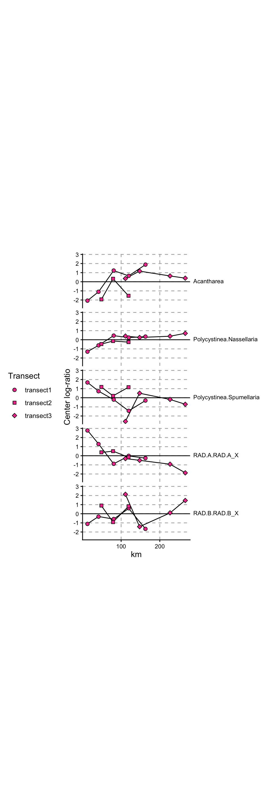
# ggsave("figures/haptista_clr_richness_relabun.svg", width = 13, height = 4, device = "svg", limitsize = FALSE)8.7 Archaeplastida
mat_tmp <- asv_long_avg_wtax %>%
filter(Supergroup_simplified == "Archaeplastida") %>%
filter(MEAN_REPS_seq >= 100) %>%
ungroup() %>%
unite(TAXA, FeatureID, Family, sep = ";") %>%
unite(SAMPLE, DEPTH_BIN, sep = "_") %>%
group_by(TAXA, SAMPLE) %>%
summarise(SUM_SEQ = sum(MEAN_REPS_seq)) %>%
pivot_wider(names_from = TAXA, values_from = SUM_SEQ, values_fn = mean, values_fill = 0) %>%
column_to_rownames(var = "SAMPLE") %>%
as.matrix`summarise()` has grouped output by 'TAXA'. You can override using the
`.groups` argument. colnames(mat_tmp) [1] "05b0142f73cb9947b3a980087931729c;Chlamydomonadales_X"
[2] "06b229d8a47a3f98d7becfe2719e72a4;Picozoa_XXXX"
[3] "07c5750c64eb74d45f8eacda8e1fc41b;Chlamydomonadales_X"
[4] "08ff230fab192f24b7c9a652dbced9ca;Embryophyceae_XX"
[5] "0b53a167877af3acbdc0603c6bddef9e;Picozoa_XXXX"
[6] "0c5474b196ea91f362461672d33933be;Chloropicaceae"
[7] "0decec27d0d25e531b10a8d9dcaec95f;Sphaeropleales_X"
[8] "0e7911338555db5c3b33fa908dece392;Chlamydomonadales_X"
[9] "1140b813dda5c14b970db62b8fe911b2;Prasinodermaceae"
[10] "12ec190e9f2902589b1d2ced7596c8e9;NA"
[11] "1405063a4fc2b1a62fc21a5410a380ec;Pycnococcaceae"
[12] "148a14417a3e4481c0483b0734a842ce;Chloropicaceae"
[13] "150d3a3dac7ba866dab1d4cc5bea0df3;Prasinodermaceae"
[14] "1a5a746ac62b823e6fd4684ed95b45a5;Picozoa_XXXX"
[15] "1cbee6c1eb48e582675a100e02245060;Chlamydomonadales_X"
[16] "2184e7d500567f044e2f130b607a15ac;NA"
[17] "2377c3a38227ef448c24df4dbe140f81;Embryophyceae_XX"
[18] "2416d0701adb7f55e6f0ff5a2a79615c;Mamiellaceae"
[19] "24e1d6d017dfe1055b13dd0f17837013;Chlamydomonadales_X"
[20] "24fffc9ad19fbea29fd714d6479ca1ac;Chlamydomonadales_X"
[21] "25a40c96936a5cfd092652e42fc3f575;Picozoa_XXXX"
[22] "2822ba27004cca78e2467278113af9e4;Crustomastigaceae"
[23] "282ee89181afd962f67ffc2dbe59daa8;Prasino-Clade-9_XX"
[24] "2a48264458c98d7b67d0c6b2f374e3c4;Chlamydomonadales_X"
[25] "31beca1748e4a0a0992119cb152c8a7f;Chlorodendraceae"
[26] "3246791f78fb3e2a7c89cd2b36b5621f;Chlamydomonadales_X"
[27] "329de017c41e6f6625f9cb793ecb83d8;NA"
[28] "32f34ca0f1b3857b08558e44c0ce446d;Selenastraceae"
[29] "34393b79db4fff789ef0c90d717a137a;Chlamydomonadales_X"
[30] "38c74a6134da1e99a9da632a9139b879;Picozoa_XXXX"
[31] "39769a4122d02d8ad351f3ee65ef5887;Picozoa_XXXX"
[32] "3a15c4919b79b21267985a8e5ce0ecbc;Picozoa_XXXX"
[33] "3a6ac67b4b0f35b2c4c7537fef7b8c15;NA"
[34] "3cc171deabf9bf0d69219f172a1bc3a3;Chlamydomonadales_X"
[35] "3e385116727267a8a958c8174dca80e2;Chloropicaceae"
[36] "40db14c7dc6215a64051a172a8b0fec1;Bathycoccaceae"
[37] "411f8787703180b22134755e5fff56b8;Chlamydomonadales_X"
[38] "41aa558db03ff7bf571533d8bd1ebb40;Picozoa_XXXX"
[39] "4224640fe0786bc48603d2724b370952;Picozoa_XXXX"
[40] "44381fc41eb135545732aac8f90f55b8;Picozoa_XXXX"
[41] "452a2f501cc2200f30341cf7aa2056f1;Chlamydomonadales_X"
[42] "4945a4b3a36ecf601dfb4a4ba2e3ede9;Prasinococcaceae"
[43] "4de83a22731ccdc7f44615d1b53b19d0;Picozoa_XXXX"
[44] "4f771c5305b99f41b9719f364bcc70b9;NA"
[45] "500a403e918e0231f0e782d802517c03;Picozoa_XXXX"
[46] "51c470345442104d94340d82e2f3fb9d;Pycnococcaceae"
[47] "594e6307f7e9d22b650e734d1f93d480;Mamiellaceae"
[48] "5a9e298bf60bd266b8cd555630990912;Nephroselmidales_X"
[49] "5b8521dc6587732bb81b9b206a609bcf;Chlorodendraceae"
[50] "5c1ced4e41bda12a4303184b8081b286;NA"
[51] "5c85a564e2b4d8b02a36ec3f7227ff5b;Embryophyceae_XX"
[52] "5dd78538bd5b0936622f39b424494ce3;Halosphaeraceae"
[53] "64898c612e100a520bcdec1598d3783d;Chlamydomonadales_X"
[54] "65ca73ace3a189355ca78bb34c88339f;Chlorodendraceae"
[55] "662d2cf74bb68052b09cf6e9273616e5;Chlamydomonadales_X"
[56] "668d50ee1f6765554ea79519916ad109;Sphaeropleales_X"
[57] "67f088f093a7bd37ac5cde8cf333af51;NA"
[58] "6a81f94414a11a512a9e3b80d0f4d441;Prasinococcaceae"
[59] "6cd08449b47e2626f76a79686397f364;Pycnococcaceae"
[60] "6e1ce142bdbd27c516d694893cd866f1;Halosphaeraceae"
[61] "6fc56ad4136bef51967a799db040f7d7;Picozoa_XXXX"
[62] "704d9fa571d0776629db9908f8750f94;Bathycoccaceae"
[63] "70d9bb6f98f60aa1e0ef408160318b96;Halosphaeraceae"
[64] "71f21c4205779a33967897e94c23bae2;Chlamydomonadales_X"
[65] "75163573eae0ca1407ae7ef2298aeb12;NA"
[66] "752a9eb3000a1fa735672bf4bf4be6a5;Bathycoccaceae"
[67] "78307e48c82138f2584699858c73b137;Crustomastigaceae"
[68] "7866e3f6e6f9d22462b02d16b6e68aa4;Pycnococcaceae"
[69] "78ca9c5c2477304f28f7fe2a9f462930;Chlamydomonadales_X"
[70] "79f485e884e1c4fe53c7e1b65e6d3423;Picozoa_XXXX"
[71] "7a70a066698c4981b6f8f3c05247cf6f;Chlorellales_X"
[72] "7ba17f76bc6c77ad4d06926730422adb;Chlorophyceae_XX"
[73] "81a1fbf479599f1440405d1dc7d99bf7;NA"
[74] "83085bd1c0ae1a2dbf23bcaf836283d4;Picozoa_XXXX"
[75] "8342df23f84ae591f8ad9033d7c8783e;Bathycoccaceae"
[76] "837286cf1844f66262c01a3cc5b909cf;Embryophyceae_XX"
[77] "8405bd028fe1a952ed95334a8b2bae71;NA"
[78] "84aaa7015574da92ddbf7f10b82bf081;Crustomastigaceae"
[79] "8898024263050704b3f8dd4a967425b7;Prasinococcaceae"
[80] "8a4d3318fa046bbe0058b67047bab3a8;Picozoa_XXXX"
[81] "8ce2b1b01934646742c8c865d3f5da78;Embryophyceae_XX"
[82] "907507c4a337e89817a695a8f74d84ef;Mamiellaceae"
[83] "90dffd510f49fa908ad28c4cac989d35;Bathycoccaceae"
[84] "91c121d06294ee7d5e6f94279af50b15;NA"
[85] "928098d8f9d5426e9b654f4cec5fe6e7;Embryophyceae_XX"
[86] "95915c237c141c6ea2487e120ff3f3bc;Bathycoccaceae"
[87] "9701b75c97af0ba765c88b2014f38e86;Chlorellales_X"
[88] "99ca0de40e1e6554fd5c8b58592dde71;NA"
[89] "9a54b0efc89b73ff408d814cfd4f4dd7;Bathycoccaceae"
[90] "9bb2812ba4469171726cb4798e303ddc;NA"
[91] "9c145d316ea1807ae794d19099e9d988;Chlamydomonadales_X"
[92] "9f455d370a56e790cbb0bf98f10d7e53;Embryophyceae_XX"
[93] "a0d20759ffc4c146e25400f5869a3bc6;Chlamydomonadales_X"
[94] "a0e29be9e4d14c081ba4bcb348e2c3fe;NA"
[95] "a85e3823c8a4b0f22345cb2d69340a89;Embryophyceae_XX"
[96] "a889e526fb33ad89ec0c2b1e56b4624f;Picozoa_XXXX"
[97] "a9998d5ef96b051c54d2d9219cf54fa9;Embryophyceae_XX"
[98] "aa6eac751176c1bd9f78ccbdf907aee5;Picozoa_XXXX"
[99] "aae0fb588f53ce2e1cde629d5d42eb8f;Pyramimonadaceae"
[100] "ab3c383d9773490c065ae843818ce02e;Chlamydomonadales_X"
[101] "ae09d1e28b0f012bff9c53a5d085fe63;Pycnococcaceae"
[102] "af275966fb1f0468db12f45feaba97ba;Chloropicaceae"
[103] "afc160b8db61ff31605b3cea273e0565;NA"
[104] "b016b653a397f9241017b0550d993e13;Crustomastigaceae"
[105] "b2a4105594ecb1c66a9cc60d06528766;Chlamydomonadales_X"
[106] "b3fafe3508f6b9ec6ecd26e9b8f1d7bc;Chlamydomonadales_X"
[107] "b4663c0c40b3c4d451a83ce0d99bca1d;Picozoa_XXXX"
[108] "b8502ec7b525fabe65ab0723311ca0f8;Picozoa_XXXX"
[109] "bb33eb6bcd563b04a5ad7dadc174dfa4;Halosphaeraceae"
[110] "bb7ca279664e331b5b0adce167ff9fd1;Crustomastigaceae"
[111] "bba46ead16234de4af481cabbeff5838;Marsupiomonadaceae"
[112] "bf391e783aca6a3aa2e1a9c8d06676a1;Picozoa_XXXX"
[113] "bfd43a771072c00dcc2c6b178af407cc;Crustomastigaceae"
[114] "c09f2a499f8e1d52198ba3ff8a8a07c7;Picozoa_XXXX"
[115] "c2a82bf46faec86eda37e41eca246627;Chlamydomonadales_X"
[116] "c6026476304bb0638c90968f3c0ce0d9;Pycnococcaceae"
[117] "c6ab1a3067b20b75b02d56cac0bdb8e1;Chlamydomonadales_X"
[118] "c7ed09b7c7578d82c87510df2f357cee;Bathycoccaceae"
[119] "cb7d46417325fcc47d541bce9e6dbf49;Pycnococcaceae"
[120] "cc673fd97914cf820f1b2bcc47d29964;Chlamydomonadales_X"
[121] "ccd88e5ce9a077a2d288f19bf78c379f;Embryophyceae_XX"
[122] "ceddc4f215894f0632da098191e23ed3;Picozoa_XXXX"
[123] "d041c2a659f90b5790b1f60d0d4aaf65;Bathycoccaceae"
[124] "d16850f8ecfa99744fbccbf2633345e8;NA"
[125] "d1c931203de59b0466e5566a3897fe75;Chloropicaceae"
[126] "d4a2916bbd37c749f702580c1ab12d1a;Chloropicaceae"
[127] "d59c65e06a4fb5b3090e8e5e5555aa6e;Embryophyceae_XX"
[128] "d5d2f31a9c213da51a2f62cc8a6d290a;Picozoa_XXXX"
[129] "d66ecac004b7afdd18739a9bf9e9d403;Chloropicaceae"
[130] "dd30153b772f477b3dacaa1a766d70d3;Bathycoccaceae"
[131] "dffc3bdae76048fbb04243cfba5a37e8;Bathycoccaceae"
[132] "e17a9949884c9290bc30009eda0ed981;Chlorodendraceae"
[133] "e23e2b40c12414441161f7446a07c822;Pycnococcaceae"
[134] "e2e1a77eb3bd3f5c3459bf90d477dd09;Mamiellaceae"
[135] "e474ad8823b11c602b9f136817bee942;Picozoa_XXXX"
[136] "e7fcd1bc6b2e143131c87c715b52daa4;NA"
[137] "e9da223cb8295d21ba91d9a4bf379708;Embryophyceae_XX"
[138] "eabec586b49f9b8c656a180ca095d9a5;Bathycoccaceae"
[139] "ecd2fa29f5a0c42bd50e755934f176cf;Picozoa_XXXX"
[140] "edb2a6f7ff9c9820c99ef3683de3d367;NA"
[141] "edecd045382df4338d2559bb4f10972b;Halosphaeraceae"
[142] "f210745196117683d691941459de25e4;Bathycoccaceae"
[143] "f2a714d6c9824708ace4c64c749ac444;NA"
[144] "f796a2b4c9f3a24b1925b7508c767b82;Chlorophyceae_XX"
[145] "fe9d5a123fc33b290e1ef288d44399c7;Sphaeropleales_X"
[146] "fefbeb717d66affe9a96258fa6c05b76;Prasinococcaceae" clr_tmp <- vegan::decostand(mat_tmp, MARGIN = 1, method = "rclr")
##
colnames(clr_tmp) <- colnames(mat_tmp)
rownames(clr_tmp) <- rownames(mat_tmp)
##
data.frame(clr_tmp) %>%
rownames_to_column(var = "SAMPLE") %>%
pivot_longer(cols = -c(SAMPLE), names_to = "TAXA", values_to = "CLR") %>%
# separate(FAMILY_GENUS_SPECIES, into = c("Family", "Genus", "Species"), sep = ";", remove = FALSE) %>%
separate(SAMPLE, into = c("DEPTH_BIN", "Station"), sep = "_") %>%
# mutate(stn = paste("S", Station, sep = "")) %>%
# mutate(STN_ORDER = factor(stn, levels = offshore_on_shore_order)) %>%
mutate(DEPTH_BIN_ORDER = factor(DEPTH_BIN, levels = rev(depth_bin))) %>%
ggplot(aes(y = DEPTH_BIN_ORDER, x = CLR, group = DEPTH_BIN_ORDER)) +
geom_vline(xintercept = 0, color = "grey90") +
geom_violin(width = 0.4, fill = "grey80", color = "grey10",
alpha = 0.8, linewidth = 0.3) +
geom_jitter(height = 0.04, alpha = 0.2, shape = 21, fill = "white", color = "black", size = 0.75) +
# geom_violin(fill = NA) +
# ggdist::stat_halfeye(side = "top", adjust = 0.6, width = 0.1,
# justification = -0.1,
# fill = "black", alpha = 0.6) +
scale_x_continuous(limits = c(-4, 4)) +
theme_classic() +
theme(axis.text.x = element_text(color = "black", angle = 0, size = 8,
hjust = 0, vjust = 0.5),
axis.text.y = element_text(color = "black", size = 8),
plot.title = element_text(color = "black", size = 8, face = "bold"),
panel.grid.major = element_line(color = "grey90", linetype = "dashed"),
strip.text.y = element_text(color = "black", angle = 0),
strip.background = element_blank(),
legend.position = "right") +
labs(x = "CLR of all ASVs", y = "", title = "Archaeplastida") +
##
asv_long_avg_wtax %>%
filter(Supergroup_simplified == "Archaeplastida") %>%
filter(MEAN_REPS_seq >= 100) %>%
ungroup() %>%
group_by(DEPTH_BIN) %>%
summarise(ASV_COUNT = n()) %>%
mutate(DEPTH_BIN_ORDER = factor(DEPTH_BIN, levels = rev(depth_bin))) %>%
ggplot(aes(y = DEPTH_BIN_ORDER, x = 1, size = ASV_COUNT)) +
geom_point(shape = 21, fill = "black", color = "black") +
scale_size_continuous(range = c(2, 10)) +
theme_classic() +
theme(axis.text.x = element_blank(),
axis.text.y = element_text(color = "black", size = 8),
plot.title = element_text(color = "black", size = 8, face = "bold"),
panel.grid.major = element_line(color = "grey90", linetype = "dashed"),
strip.text.y = element_text(color = "black", angle = 0),
strip.background = element_blank(),
axis.ticks = element_blank(),
legend.position = "right",
legend.title = element_blank()) +
labs(x = "Total ASVs", y = "") +
##
asv_long_avg_wtax %>%
mutate(TAXA = Class) %>%
# unite(TAXA, Class, Order, sep = ";", remove = FALSE) %>%
# mutate(TAXA = case_when(
# grepl("Pterocystida", TAXA) ~ "Pterocystida",
# grepl("Haptophyta_Clade_", TAXA) ~ "Haptophyta Clades-3/4",
# TRUE ~ TAXA
# )) %>%
filter(!is.na(Order)) %>%
filter(Supergroup_simplified == "Archaeplastida") %>%
filter(MEAN_REPS_seq >= 100) %>%
ungroup() %>%
group_by(TAXA, DEPTH_BIN) %>%
summarise(SEQ_SUM = sum(MEAN_REPS_seq)) %>%
mutate(DEPTH_BIN_ORDER = factor(DEPTH_BIN, levels = rev(depth_bin))) %>%
ggplot(aes(y = DEPTH_BIN_ORDER, x = SEQ_SUM, fill = TAXA)) +
geom_bar(stat = "identity", color = "black", position = "fill", width = 0.6) +
theme_classic() +
theme(axis.text.x = element_text(color = "black", angle = 0, size = 8,
hjust = 0, vjust = 0.5),
axis.text.y = element_text(color = "black", size = 8),
plot.title = element_text(color = "black", size = 8, face = "bold"),
panel.grid.major = element_line(color = "grey90", linetype = "dashed"),
strip.text.y = element_text(color = "black", angle = 0),
strip.background = element_blank(),
legend.position = "right",
legend.title = element_blank()) +
labs(x = "Sequence Relative Abundance", y = "") +
plot_layout(nrow = 1, widths = c(1, 0.2, 1))Warning: Expected 2 pieces. Missing pieces filled with `NA` in 1314 rows [1, 2, 3, 4, 5,
6, 7, 8, 9, 10, 11, 12, 13, 14, 15, 16, 17, 18, 19, 20, ...].`summarise()` has grouped output by 'TAXA'. You can override using the
`.groups` argument.Warning: Removed 1 row containing non-finite outside the scale range
(`stat_ydensity()`).Warning: Removed 1 row containing missing values or values outside the scale range
(`geom_point()`).
ggsave("figures/arche_clr_richness_relabun.svg", width = 13, height = 4, device = "svg", limitsize = FALSE)Warning: Removed 1 row containing non-finite outside the scale range
(`stat_ydensity()`).
Removed 1 row containing missing values or values outside the scale range
(`geom_point()`).8.8 Box plot top taxa
# glimpse(asv_long_avg_wtax)
# SUPERGROUP_SIMPLIFIED <- "TSAR-Gyrista"
clr_dist_fxn <- function(SUPERGROUP_SIMPLIFIED){
mat_tmp <- asv_long_avg_wtax %>%
filter(Supergroup_simplified == SUPERGROUP_SIMPLIFIED) %>%
filter(MEAN_REPS_seq >= 100) %>%
ungroup() %>%
# unite(FAMILY_GENUS_SPECIES, Family, Genus, Species, sep = ";") %>%
unite(TAXA, SUPERGROUP_CLASS, sep = ";") %>%
unite(SAMPLE, DEPTH_BIN, Station, sep = "_") %>%
group_by(TAXA, SAMPLE) %>%
summarise(SUM_SEQ = sum(MEAN_REPS_seq)) %>%
pivot_wider(names_from = TAXA, values_from = SUM_SEQ, values_fn = mean, values_fill = 0) %>%
column_to_rownames(var = "SAMPLE") %>%
as.matrix
# colnames(mat_tmp)
# rownames(mat_tmp)
clr_tmp <- vegan::decostand(mat_tmp, MARGIN = 1, method = "rclr")
##
colnames(clr_tmp) <- colnames(mat_tmp)
rownames(clr_tmp) <- rownames(mat_tmp)
##
data.frame(clr_tmp) %>%
rownames_to_column(var = "SAMPLE") %>%
pivot_longer(cols = -c(SAMPLE), names_to = "TAXA", values_to = "CLR") %>%
# separate(FAMILY_GENUS_SPECIES, into = c("Family", "Genus", "Species"), sep = ";", remove = FALSE) %>%
separate(SAMPLE, into = c("DEPTH_BIN", "Station"), sep = "_") %>%
# mutate(stn = paste("S", Station, sep = "")) %>%
# mutate(STN_ORDER = factor(stn, levels = offshore_on_shore_order)) %>%
mutate(DEPTH_BIN_ORDER = factor(DEPTH_BIN, levels = rev(depth_bin))) %>%
ggplot(aes(y = DEPTH_BIN_ORDER, x = CLR, group = DEPTH_BIN_ORDER)) +
geom_vline(xintercept = 0, color = "grey90") +
geom_jitter(height = 0.04, alpha = 0.7, shape = 21, color = "black", size = 0.5) +
# geom_violin(fill = NA) +
# ggdist::stat_halfeye(side = "top", adjust = 0.6, width = 0.1,
# justification = -0.1,
# fill = "black", alpha = 0.6) +
geom_boxplot(width = 0.2, fill = "grey20", color = "grey10",
alpha = 0.8, linewidth = 0.3) +
theme_classic() +
theme(axis.text.x = element_text(color = "black", angle = 0, size = 8,
hjust = 0, vjust = 0.5),
axis.text.y = element_text(color = "black", size = 8),
plot.title = element_text(color = "black", size = 8, face = "bold"),
panel.grid.major = element_line(color = "grey90", linetype = "dashed"),
strip.text.y = element_text(color = "black", angle = 0),
strip.background = element_blank(),
legend.position = "none") +
labs(x = "CLR", y = "", title = SUPERGROUP_SIMPLIFIED)
}top_taxa# A tibble: 270 × 4
# Groups: STN_NISKIN [90]
Supergroup_simplified STN_NISKIN SUM_SEQ ASV_COUNT
<chr> <chr> <dbl> <int>
1 TSAR-Dinoflagellata S11_N1 107600. 370
2 TSAR-Radiolaria S11_N1 108795 196
3 TSAR-Ciliophora S11_N1 8588. 32
4 TSAR-Dinoflagellata S11_N10 45075 831
5 TSAR-Radiolaria S11_N10 99802. 162
6 TSAR-Ciliophora S11_N10 3271 101
7 TSAR-Dinoflagellata S11_N11 114444 1231
8 TSAR-Ciliophora S11_N11 19746. 164
9 Haptista S11_N11 9371 139
10 TSAR-Dinoflagellata S11_N12 20742. 283
# ℹ 260 more rowsunique(top_taxa$Supergroup_simplified)[1] "TSAR-Dinoflagellata" "TSAR-Radiolaria" "TSAR-Ciliophora"
[4] "Haptista" "TSAR-Gyrista" "Archaeplastida"
[7] "TSAR-Bigyra" clr_dist_fxn("TSAR-Dinoflagellata") + clr_dist_fxn("TSAR-Ciliophora") + clr_dist_fxn("TSAR-Bigyra") + clr_dist_fxn("TSAR-Radiolaria") + clr_dist_fxn("Haptista") + plot_layout(ncol = 3)`summarise()` has grouped output by 'TAXA'. You can override using the
`.groups` argument.
`summarise()` has grouped output by 'TAXA'. You can override using the
`.groups` argument.
`summarise()` has grouped output by 'TAXA'. You can override using the
`.groups` argument.
`summarise()` has grouped output by 'TAXA'. You can override using the
`.groups` argument.
`summarise()` has grouped output by 'TAXA'. You can override using the
`.groups` argument.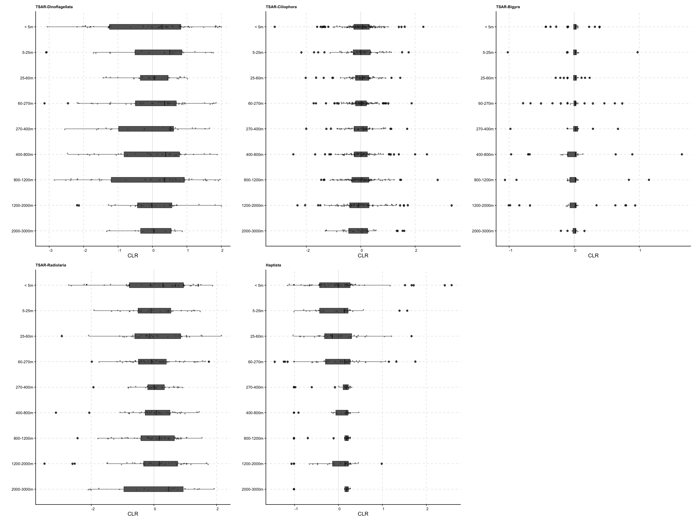
9 Linear regression
head(asv_long_avg_wtax)# A tibble: 6 × 43
FeatureID Taxon DIVISION SUPERGROUP_CLASS Supergroup_simplified Supergroup
<chr> <chr> <chr> <chr> <chr> <chr>
1 0001b2ea4223… Euka… Dinofla… Dinoflagellata-… TSAR-Dinoflagellata TSAR
2 0004be388d73… Euka… Dinofla… Dinoflagellata-… TSAR-Dinoflagellata TSAR
3 000761c7389a… Euka… Dinofla… Dinoflagellata-… TSAR-Dinoflagellata TSAR
4 000964551660… Euka… Radiola… Radiolaria-Acan… TSAR-Radiolaria TSAR
5 000964551660… Euka… Radiola… Radiolaria-Acan… TSAR-Radiolaria TSAR
6 000964551660… Euka… Radiola… Radiolaria-Acan… TSAR-Radiolaria TSAR
# ℹ 37 more variables: Division <chr>, Subdivision <chr>, Class <chr>,
# Order <chr>, Family <chr>, Genus <chr>, Species <chr>, STN_NISKIN <chr>,
# Station <int>, Niskin <int>, Depth <dbl>, Latitude <dbl>, Longitude <dbl>,
# Pressure <dbl>, Temperature <dbl>, Salinity <dbl>, Oxygen <dbl>, NH4 <dbl>,
# NO2 <dbl>, NO3 <dbl>, PO4 <dbl>, SIL <dbl>, Prok_count <dbl>,
# STN_CATEGORY_3 <chr>, STN_CATEGORY_4 <chr>, STN_ORDER <fct>,
# TRANSECT <fct>, DEPTH_ORDER <fct>, DIST_OUTFLOW <dbl>, DEPTH_MAX <dbl>, …# PARAMS: DIST_OUTFLOW, Depth, Temperature, Salinity, Oxygen, NH4, NO2, NO3, PO4, SILlibrary(broom)
regression_gom_tmp <- asv_long_avg_wtax %>%
filter(STN_NISKIN != "S12_N10") %>%
select(Supergroup_simplified, MEAN_REPS_seq, Station, Niskin, DIST_OUTFLOW, Depth, Temperature, Salinity, Oxygen, NH4, NO2, NO3, PO4, SIL) %>%
group_by(Station, Niskin, Supergroup_simplified, DIST_OUTFLOW, Depth, Temperature, Salinity, Oxygen, NH4, NO2, NO3, PO4, SIL) %>%
summarise(seq_sum = sum(MEAN_REPS_seq),
asv_rich = n()) %>%
# filter(ASV_rich > 1 &)
pivot_longer(cols = c(DIST_OUTFLOW, Depth, Temperature, Salinity, Oxygen, NH4, NO2, NO3, PO4, SIL), names_to = "PARAMS", values_to = "VALUES") %>%
ungroup() `summarise()` has grouped output by 'Station', 'Niskin',
'Supergroup_simplified', 'DIST_OUTFLOW', 'Depth', 'Temperature', 'Salinity',
'Oxygen', 'NH4', 'NO2', 'NO3', 'PO4'. You can override using the `.groups`
argument.dim(regression_gom_tmp)[1] 16200 7head(regression_gom_tmp)# A tibble: 6 × 7
Station Niskin Supergroup_simplified seq_sum asv_rich PARAMS VALUES
<int> <int> <chr> <dbl> <int> <chr> <dbl>
1 1 5 Archaeplastida 1775 55 DIST_OUTFLOW 13151.
2 1 5 Archaeplastida 1775 55 Depth 18.6
3 1 5 Archaeplastida 1775 55 Temperature 24.2
4 1 5 Archaeplastida 1775 55 Salinity 36.3
5 1 5 Archaeplastida 1775 55 Oxygen 2.34
6 1 5 Archaeplastida 1775 55 NH4 0.64# unique(regression_gom_tmp$Class)part1 <- regression_gom_tmp %>%
# For taxonomic groups, group linear regression by ASV Richness
group_by(Supergroup_simplified, PARAMS) %>%
nest(-Supergroup_simplified, -PARAMS) %>%
mutate(lm_fit = map(data, ~lm(asv_rich ~ VALUES, data = .)),
tidied = map(lm_fit, tidy)) %>% unnest(tidied) %>%
select(Supergroup_simplified, PARAMS, term, estimate, p.value) %>%
pivot_wider(names_from = term, values_from = estimate) %>%
select(everything(), SLOPE = VALUES, p.value) %>% data.frameWarning: Supplying `...` without names was deprecated in tidyr 1.0.0.
ℹ Please specify a name for each selection.
ℹ Did you want `data = c(-Supergroup_simplified, -PARAMS)`?Warning: There were 20 warnings in `mutate()`.
The first warning was:
ℹ In argument: `tidied = map(lm_fit, tidy)`.
ℹ In group 21: `Supergroup_simplified = "CRuMs"` `PARAMS = "DIST_OUTFLOW"`.
Caused by warning in `summary.lm()`:
! essentially perfect fit: summary may be unreliable
ℹ Run `dplyr::last_dplyr_warnings()` to see the 19 remaining warnings.# ?pivot_widerpart2 <- regression_gom_tmp %>%
# For taxonomic groups, group linear regression by ASV Richness
group_by(Supergroup_simplified, PARAMS) %>%
nest(-Supergroup_simplified, -PARAMS) %>%
mutate(lm_fit = map(data, ~lm(asv_rich ~ VALUES, data = .)),
glanced = map(lm_fit, glance)) %>% unnest(glanced) %>%
select(Supergroup_simplified, PARAMS, r.squared, adj.r.squared) %>%
right_join(part1) %>%
right_join(regression_gom_tmp)Warning: Supplying `...` without names was deprecated in tidyr 1.0.0.
ℹ Please specify a name for each selection.
ℹ Did you want `data = c(-Supergroup_simplified, -PARAMS)`?Warning: There were 60 warnings in `mutate()`.
The first warning was:
ℹ In argument: `glanced = map(lm_fit, glance)`.
ℹ In group 21: `Supergroup_simplified = "CRuMs"` `PARAMS = "DIST_OUTFLOW"`.
Caused by warning in `summary.lm()`:
! essentially perfect fit: summary may be unreliable
ℹ Run `dplyr::last_dplyr_warnings()` to see the 59 remaining warnings.Joining with `by = join_by(Supergroup_simplified, PARAMS)`
Joining with `by = join_by(Supergroup_simplified, PARAMS)`Warning in right_join(., regression_gom_tmp): Detected an unexpected many-to-many relationship between `x` and `y`.
ℹ Row 1 of `x` matches multiple rows in `y`.
ℹ Row 1 of `y` matches multiple rows in `x`.
ℹ If a many-to-many relationship is expected, set `relationship =
"many-to-many"` to silence this warning.# head(part2)
# unique(part2$Supergroup_simplified)part2 %>%
filter(Supergroup_simplified == "TSAR-Ciliophora") %>%
ggplot(aes(x = VALUES, y = asv_rich, fill = Supergroup_simplified)) +
geom_abline(aes(slope = SLOPE,
intercept = X.Intercept.),
color = "black", linetype = "dashed", lwd = 0.5) +
geom_point(color = "black",
size = 2) + geom_smooth(method = lm) +
# scale_fill_manual(values = samplecolor) +
# scale_shape_manual(values = shapes) +
facet_wrap(. ~ PARAMS + round(r.squared,
3), scales = "free", ncol = 5, strip.position = "bottom", labeller = label_parsed) +
theme_bw() +
theme(strip.background = element_blank(),
strip.placement = "outside",
legend.position = "none",
strip.text = element_text(color = "black", size = 10), axis.title = element_text(color = "black",
size = 10), legend.title = element_blank()) + labs(y = "ASV richness", x = "", title = "Ciliate")`geom_smooth()` using formula = 'y ~ x'Warning: Removed 1800 rows containing missing values or values outside the scale range
(`geom_abline()`).
part2 %>%
filter(Supergroup_simplified == "Haptista") %>%
ggplot(aes(x = VALUES, y = asv_rich, fill = Supergroup_simplified)) +
geom_abline(aes(slope = SLOPE,
intercept = X.Intercept.),
color = "black", linetype = "dashed", lwd = 0.5) +
geom_point(color = "black",
size = 2) + geom_smooth(method = lm) +
# scale_fill_manual(values = samplecolor) +
# scale_shape_manual(values = shapes) +
facet_wrap(. ~ PARAMS + round(r.squared,
3), scales = "free", ncol = 5, strip.position = "bottom", labeller = label_parsed) +
theme_bw() +
theme(strip.background = element_blank(),
strip.placement = "outside",
legend.position = "none",
strip.text = element_text(color = "black", size = 10), axis.title = element_text(color = "black",
size = 10), legend.title = element_blank()) + labs(y = "ASV richness", x = "", title = "Haptista")`geom_smooth()` using formula = 'y ~ x'Warning: Removed 1780 rows containing missing values or values outside the scale range
(`geom_abline()`).
#TSAR-Dinoflagellata
part2 %>%
filter(Supergroup_simplified == "TSAR-Dinoflagellata") %>%
ggplot(aes(x = VALUES, y = asv_rich, fill = Supergroup_simplified)) +
geom_abline(aes(slope = SLOPE,
intercept = X.Intercept.),
color = "black", linetype = "dashed", lwd = 0.5) +
geom_point(color = "black",
size = 2) + geom_smooth(method = lm) +
# scale_fill_manual(values = samplecolor) +
# scale_shape_manual(values = shapes) +
facet_wrap(. ~ PARAMS + round(r.squared,
3), scales = "free", ncol = 5, strip.position = "bottom", labeller = label_parsed) +
theme_bw() +
theme(strip.background = element_blank(),
strip.placement = "outside",
legend.position = "none",
strip.text = element_text(color = "black", size = 10), axis.title = element_text(color = "black",
size = 10), legend.title = element_blank()) + labs(y = "ASV richness", x = "", title = "TSAR-Dinoflagellata")`geom_smooth()` using formula = 'y ~ x'Warning: Removed 1800 rows containing missing values or values outside the scale range
(`geom_abline()`).
9.1 Linear regression function
Where R2 is the proportion of the variation in ASV richness predictable from the environmental parameter supplied. Closer to 1 is a better fit for the relationship.
function(df, TITLE)
library(broom)
lm_gom <- function(df, TITLE) {
df_tmp <- df %>%
select(TAXA, MEAN_REPS_seq, Station, Niskin, DIST_OUTFLOW, Depth, Temperature, Salinity, Oxygen, NH4, NO2, NO3, PO4, SIL) %>%
group_by(TAXA, Station, Niskin, DIST_OUTFLOW, Depth, Temperature, Salinity, Oxygen, NH4, NO2, NO3, PO4, SIL) %>%
summarise(seq_sum = sum(MEAN_REPS_seq),
asv_rich = n()) %>%
pivot_longer(cols = c(DIST_OUTFLOW, Depth, Temperature, Salinity, Oxygen, NH4, NO2, NO3, PO4, SIL), names_to = "PARAMS", values_to = "VALUES") %>%
ungroup()
#
df_tmp_tidy <- df_tmp %>%
# For taxonomic groups, group linear regression by ASV Richness
group_by(TAXA, PARAMS) %>%
nest(-TAXA, -PARAMS) %>%
mutate(lm_fit = map(data, ~lm(asv_rich ~ VALUES, data = .)),
tidied = map(lm_fit, tidy)) %>% unnest(tidied) %>%
select(TAXA, PARAMS, term, estimate) %>%
pivot_wider(names_from = term, values_from = estimate) %>%
select(everything(), SLOPE = VALUES) %>% data.frame
df_lm <- df_tmp %>%
# For taxonomic groups, group linear regression by ASV Richness
group_by(TAXA, PARAMS) %>%
nest(-TAXA, -PARAMS) %>%
mutate(lm_fit = map(data, ~lm(asv_rich ~ VALUES, data = .)),
glanced = map(lm_fit, glance)) %>% unnest(glanced) %>%
select(TAXA, PARAMS, r.squared, adj.r.squared) %>%
right_join(df_tmp_tidy) %>%
right_join(df_tmp)
df_lm %>%
ggplot(aes(x = VALUES, y = asv_rich)) +
geom_abline(aes(slope = SLOPE,
intercept = X.Intercept.),
color = "black", linetype = "dashed", lwd = 0.5) +
geom_point(color = "black",
size = 2) + geom_smooth(method = lm) +
facet_wrap(. ~ PARAMS + round(r.squared,
3), scales = "free", ncol = 5, strip.position = "bottom", labeller = label_parsed) +
theme_bw() +
theme(strip.background = element_blank(),
strip.placement = "outside",
legend.position = "none",
strip.text = element_text(color = "black", size = 10), axis.title = element_text(color = "black", size = 10), legend.title = element_blank()) + labs(y = "ASV richness", x = "", title = TITLE)
}lm_gom((asv_long_avg_wtax %>%
add_column(TAXA = "All ASVs")), "All ASVs")`summarise()` has grouped output by 'TAXA', 'Station', 'Niskin',
'DIST_OUTFLOW', 'Depth', 'Temperature', 'Salinity', 'Oxygen', 'NH4', 'NO2',
'NO3', 'PO4'. You can override using the `.groups` argument.Warning: Supplying `...` without names was deprecated in tidyr 1.0.0.
ℹ Please specify a name for each selection.
ℹ Did you want `data = c(-TAXA, -PARAMS)`?Warning: Supplying `...` without names was deprecated in tidyr 1.0.0.
ℹ Please specify a name for each selection.
ℹ Did you want `data = c(-TAXA, -PARAMS)`?Joining with `by = join_by(TAXA, PARAMS)`
Joining with `by = join_by(TAXA, PARAMS)`
`geom_smooth()` using formula = 'y ~ x'
lm_gom((asv_long_avg_wtax %>%
filter(Depth < 10) %>%
add_column(TAXA = "Surface ASVs")), "Surface ASVs")`summarise()` has grouped output by 'TAXA', 'Station', 'Niskin',
'DIST_OUTFLOW', 'Depth', 'Temperature', 'Salinity', 'Oxygen', 'NH4', 'NO2',
'NO3', 'PO4'. You can override using the `.groups` argument.Warning: Supplying `...` without names was deprecated in tidyr 1.0.0.
ℹ Please specify a name for each selection.
ℹ Did you want `data = c(-TAXA, -PARAMS)`?Warning: Supplying `...` without names was deprecated in tidyr 1.0.0.
ℹ Please specify a name for each selection.
ℹ Did you want `data = c(-TAXA, -PARAMS)`?Joining with `by = join_by(TAXA, PARAMS)`
Joining with `by = join_by(TAXA, PARAMS)`
`geom_smooth()` using formula = 'y ~ x'
lm_gom((asv_long_avg_wtax %>%
filter(Class == "Syndiniales") %>%
add_column(TAXA = "Syndiniales")), "Syndiniales")`summarise()` has grouped output by 'TAXA', 'Station', 'Niskin',
'DIST_OUTFLOW', 'Depth', 'Temperature', 'Salinity', 'Oxygen', 'NH4', 'NO2',
'NO3', 'PO4'. You can override using the `.groups` argument.Warning: Supplying `...` without names was deprecated in tidyr 1.0.0.
ℹ Please specify a name for each selection.
ℹ Did you want `data = c(-TAXA, -PARAMS)`?Warning: Supplying `...` without names was deprecated in tidyr 1.0.0.
ℹ Please specify a name for each selection.
ℹ Did you want `data = c(-TAXA, -PARAMS)`?Joining with `by = join_by(TAXA, PARAMS)`
Joining with `by = join_by(TAXA, PARAMS)`
`geom_smooth()` using formula = 'y ~ x'
lm_gom((asv_long_avg_wtax %>%
# filter(DEPTH <= 50) %>%
filter(Class == "Dinophyceae") %>%
add_column(TAXA = "Dinophyceae")), "Dinophyceae")`summarise()` has grouped output by 'TAXA', 'Station', 'Niskin',
'DIST_OUTFLOW', 'Depth', 'Temperature', 'Salinity', 'Oxygen', 'NH4', 'NO2',
'NO3', 'PO4'. You can override using the `.groups` argument.Warning: Supplying `...` without names was deprecated in tidyr 1.0.0.
ℹ Please specify a name for each selection.
ℹ Did you want `data = c(-TAXA, -PARAMS)`?Warning: Supplying `...` without names was deprecated in tidyr 1.0.0.
ℹ Please specify a name for each selection.
ℹ Did you want `data = c(-TAXA, -PARAMS)`?Joining with `by = join_by(TAXA, PARAMS)`
Joining with `by = join_by(TAXA, PARAMS)`
`geom_smooth()` using formula = 'y ~ x'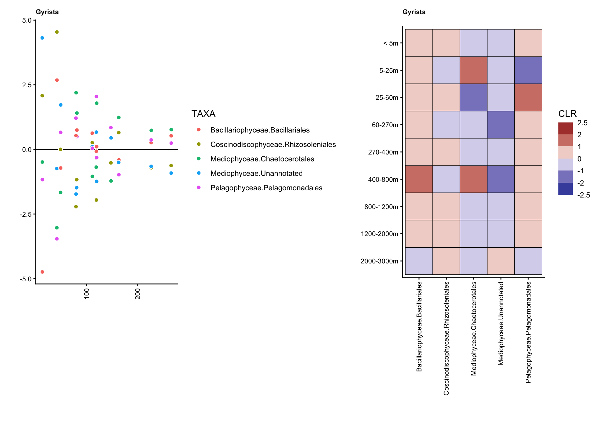
lm_gom((asv_long_avg_wtax %>%
# filter(DEPTH <= 10) %>%
filter(Subdivision == "Gyrista") %>%
add_column(TAXA = "Gyrista")), "Gyrista")`summarise()` has grouped output by 'TAXA', 'Station', 'Niskin',
'DIST_OUTFLOW', 'Depth', 'Temperature', 'Salinity', 'Oxygen', 'NH4', 'NO2',
'NO3', 'PO4'. You can override using the `.groups` argument.Warning: Supplying `...` without names was deprecated in tidyr 1.0.0.
ℹ Please specify a name for each selection.
ℹ Did you want `data = c(-TAXA, -PARAMS)`?Warning: Supplying `...` without names was deprecated in tidyr 1.0.0.
ℹ Please specify a name for each selection.
ℹ Did you want `data = c(-TAXA, -PARAMS)`?Joining with `by = join_by(TAXA, PARAMS)`
Joining with `by = join_by(TAXA, PARAMS)`
`geom_smooth()` using formula = 'y ~ x'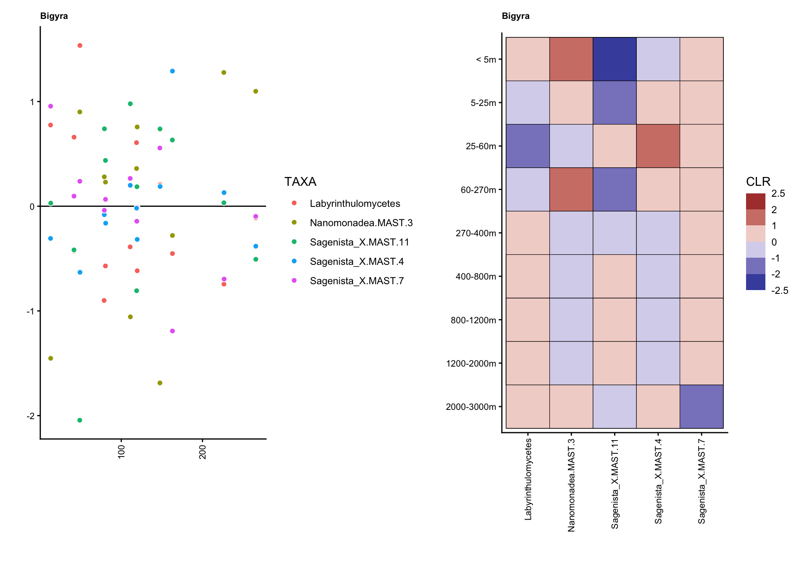
#Bacillariophyceae
lm_gom((asv_long_avg_wtax %>%
# filter(DEPTH <= 10) %>%
filter(Class == "Bacillariophyceae") %>%
add_column(TAXA = "Bacillariophyceae")), "Bacillariophyceae")`summarise()` has grouped output by 'TAXA', 'Station', 'Niskin',
'DIST_OUTFLOW', 'Depth', 'Temperature', 'Salinity', 'Oxygen', 'NH4', 'NO2',
'NO3', 'PO4'. You can override using the `.groups` argument.Warning: Supplying `...` without names was deprecated in tidyr 1.0.0.
ℹ Please specify a name for each selection.
ℹ Did you want `data = c(-TAXA, -PARAMS)`?Warning: Supplying `...` without names was deprecated in tidyr 1.0.0.
ℹ Please specify a name for each selection.
ℹ Did you want `data = c(-TAXA, -PARAMS)`?Joining with `by = join_by(TAXA, PARAMS)`
Joining with `by = join_by(TAXA, PARAMS)`
`geom_smooth()` using formula = 'y ~ x'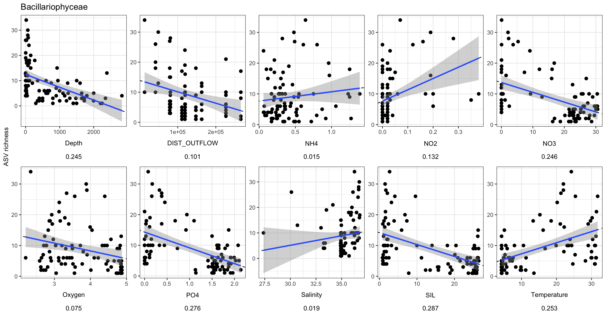
lm_gom((asv_long_avg_wtax %>%
# filter(DEPTH <= 10) %>%
filter(Class == "Syndiniales") %>%
add_column(TAXA = "Syndiniales")), "Syndiniales")`summarise()` has grouped output by 'TAXA', 'Station', 'Niskin',
'DIST_OUTFLOW', 'Depth', 'Temperature', 'Salinity', 'Oxygen', 'NH4', 'NO2',
'NO3', 'PO4'. You can override using the `.groups` argument.Warning: Supplying `...` without names was deprecated in tidyr 1.0.0.
ℹ Please specify a name for each selection.
ℹ Did you want `data = c(-TAXA, -PARAMS)`?Warning: Supplying `...` without names was deprecated in tidyr 1.0.0.
ℹ Please specify a name for each selection.
ℹ Did you want `data = c(-TAXA, -PARAMS)`?Joining with `by = join_by(TAXA, PARAMS)`
Joining with `by = join_by(TAXA, PARAMS)`
`geom_smooth()` using formula = 'y ~ x'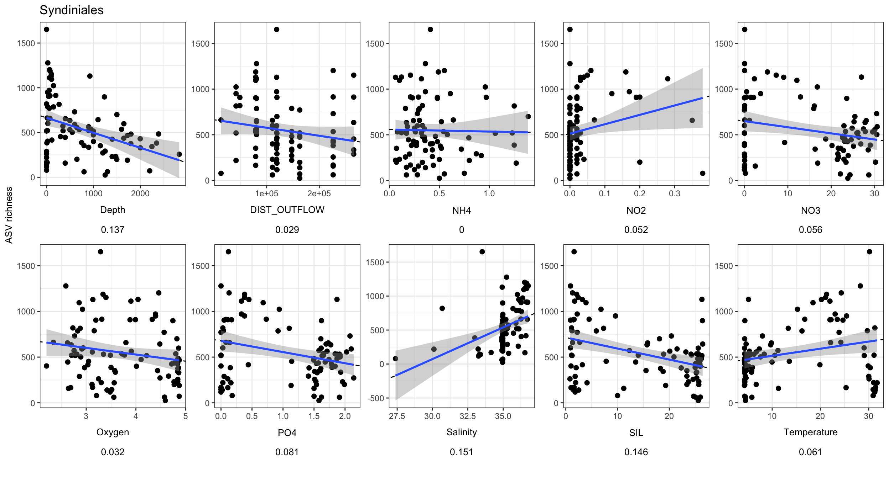
lm_gom((asv_long_avg_wtax %>%
# filter(DEPTH <= 10) %>%
filter(Class == "Dinophyceae") %>%
add_column(TAXA = "Dinophyceae")), "Dinophyceae")`summarise()` has grouped output by 'TAXA', 'Station', 'Niskin',
'DIST_OUTFLOW', 'Depth', 'Temperature', 'Salinity', 'Oxygen', 'NH4', 'NO2',
'NO3', 'PO4'. You can override using the `.groups` argument.Warning: Supplying `...` without names was deprecated in tidyr 1.0.0.
ℹ Please specify a name for each selection.
ℹ Did you want `data = c(-TAXA, -PARAMS)`?Warning: Supplying `...` without names was deprecated in tidyr 1.0.0.
ℹ Please specify a name for each selection.
ℹ Did you want `data = c(-TAXA, -PARAMS)`?Joining with `by = join_by(TAXA, PARAMS)`
Joining with `by = join_by(TAXA, PARAMS)`
`geom_smooth()` using formula = 'y ~ x'
lm_gom((asv_long_avg_wtax %>%
filter(Subdivision == "Ciliophora") %>%
add_column(TAXA = "Ciliates")), "Ciliates")`summarise()` has grouped output by 'TAXA', 'Station', 'Niskin',
'DIST_OUTFLOW', 'Depth', 'Temperature', 'Salinity', 'Oxygen', 'NH4', 'NO2',
'NO3', 'PO4'. You can override using the `.groups` argument.Warning: Supplying `...` without names was deprecated in tidyr 1.0.0.
ℹ Please specify a name for each selection.
ℹ Did you want `data = c(-TAXA, -PARAMS)`?Warning: Supplying `...` without names was deprecated in tidyr 1.0.0.
ℹ Please specify a name for each selection.
ℹ Did you want `data = c(-TAXA, -PARAMS)`?Joining with `by = join_by(TAXA, PARAMS)`
Joining with `by = join_by(TAXA, PARAMS)`
`geom_smooth()` using formula = 'y ~ x'
lm_gom((asv_long_avg_wtax %>%
# filter(DEPTH > 400) %>%
filter(Subdivision == "Cercozoa") %>%
add_column(TAXA = "Cercozoa")), "Cercozoa")`summarise()` has grouped output by 'TAXA', 'Station', 'Niskin',
'DIST_OUTFLOW', 'Depth', 'Temperature', 'Salinity', 'Oxygen', 'NH4', 'NO2',
'NO3', 'PO4'. You can override using the `.groups` argument.Warning: Supplying `...` without names was deprecated in tidyr 1.0.0.
ℹ Please specify a name for each selection.
ℹ Did you want `data = c(-TAXA, -PARAMS)`?Warning: Supplying `...` without names was deprecated in tidyr 1.0.0.
ℹ Please specify a name for each selection.
ℹ Did you want `data = c(-TAXA, -PARAMS)`?Joining with `by = join_by(TAXA, PARAMS)`
Joining with `by = join_by(TAXA, PARAMS)`
`geom_smooth()` using formula = 'y ~ x'
lm_gom((asv_long_avg_wtax %>%
# filter(DEPTH > 400) %>%
filter(Subdivision == "Radiolaria") %>%
add_column(TAXA = "Radiolaria")), "Radiolaria")`summarise()` has grouped output by 'TAXA', 'Station', 'Niskin',
'DIST_OUTFLOW', 'Depth', 'Temperature', 'Salinity', 'Oxygen', 'NH4', 'NO2',
'NO3', 'PO4'. You can override using the `.groups` argument.Warning: Supplying `...` without names was deprecated in tidyr 1.0.0.
ℹ Please specify a name for each selection.
ℹ Did you want `data = c(-TAXA, -PARAMS)`?Warning: Supplying `...` without names was deprecated in tidyr 1.0.0.
ℹ Please specify a name for each selection.
ℹ Did you want `data = c(-TAXA, -PARAMS)`?Joining with `by = join_by(TAXA, PARAMS)`
Joining with `by = join_by(TAXA, PARAMS)`
`geom_smooth()` using formula = 'y ~ x'
10 Create Table 1
Later, add MS River Plume (in vs. out?) data, MLD, and else?
buffer_counts <- read.csv("input-data/OilRig_BufferCount - Sheet1.csv")
features <- read.csv(file = "input-data/feature_profiles_depth.csv")
save_table1 <- table1 %>%
left_join((features %>% select(-X, -Niskin) %>%
pivot_wider(names_from = FEATURE, values_from = Depth))) %>%
left_join(buffer_counts) %>%
group_by(Station, Date, Latitude, Longitude, Transect, OilRig_Count, `Salinity maximum`, `Oxygen minimum`, DCM) %>%
summarise(Depth_range = paste(min(Depth), max(Depth), sep = "-"),
Surface_temp = max(Temperature),
Sample_n = n())Joining with `by = join_by(Station)`
Joining with `by = join_by(Station)`
`summarise()` has grouped output by 'Station', 'Date', 'Latitude', 'Longitude',
'Transect', 'OilRig_Count', 'Salinity maximum', 'Oxygen minimum'. You can
override using the `.groups` argument.# write.csv(save_table1, file = "output-tables/stn-info-Table1.csv")11 RDA analysis
RDA reveals relationships among the sites and the environmental parameters. We can explore the relationship among all ASV signatures by site, and then model the effect that each environmental parameter has on it. Null H = variances across groups are equal p-value of < 0.05 means there is a significant difference in variance among groups.
# library(car)
# Levene's test with one independent variable
# leveneTest(weight ~ group, data = PlantGrowth)
# Levene's test with multiple independent variables
# leveneTest(len ~ supp*dose, data = ToothGrowth)set.seed(1234)
head(table1)# A tibble: 6 × 22
STN_NISKIN Station Depth Date Time_UTC Latitude Longitude Transect DEPTH_BIN
<chr> <int> <dbl> <chr> <chr> <dbl> <dbl> <int> <chr>
1 S15_N12 15 2.82e0 8/2/… 0:45:00 27.8 87.0 3 < 5m
2 S15_N6 15 8.99e2 8/2/… 0:45:00 27.8 87.0 3 800-1200m
3 S1_N10 1 2.48e0 7/30… 18:56:28 28.8 89.5 1 < 5m
4 S1_N5 1 1.86e1 7/30… 18:56:28 28.8 89.5 1 5-25m
5 S11_N1 11 1.48e3 8/1/… 6:20:00 28.7 88.3 3 1200-200…
6 S11_N11 11 3.06e1 8/1/… 6:20:00 28.7 88.3 3 25-60m
# ℹ 13 more variables: DIST_OUTFLOW <dbl>, NH4 <dbl>, NO2 <dbl>, NO3 <dbl>,
# Oxygen <dbl>, PO4 <dbl>, SIL <dbl>, Salinity <dbl>, Temperature <dbl>,
# Prok_count <dbl>, DAY_NIGHT <chr>, HR_OF_DAY <int>, DEPTH_MAX <dbl>buffer_counts <- read.csv("input-data/OilRig_BufferCount - Sheet1.csv")
# head(buffer_counts)
features <- read.csv(file = "input-data/feature_profiles_depth.csv")
# head(features)# table(features %>% select(FEATURE, Station))
features %>% select(-X, -Niskin) %>%
pivot_wider(names_from = FEATURE, values_from = Depth) %>%
left_join(buffer_counts)Joining with `by = join_by(Station)`# A tibble: 15 × 5
Station `Salinity maximum` `Oxygen minimum` DCM OilRig_Count
<int> <dbl> <dbl> <dbl> <int>
1 1 18.6 46.5 2.48 9
2 2 24.2 353. 24.1 0
3 3 65.0 401. 65.0 0
4 4 70.2 500. 70.2 5
5 5 121. 500. 121. 4
6 6 152. 500. 67.4 1
7 7 98.4 399. 59.5 3
8 8 76.4 349. 76.4 2
9 9 65.4 189. 65.3 4
10 10 63.7 63.7 63.7 5
11 11 74.0 351. 74.0 4
12 12 25.0 459. 62.2 0
13 13 71.0 420. 71.0 0
14 14 115. 399. 69.8 0
15 15 104. 498. 74.6 0# head(table1)
table1_wfeature <- table1 %>%
left_join((features %>% select(-X, -Niskin) %>%
pivot_wider(names_from = FEATURE, values_from = Depth))) %>%
left_join(buffer_counts) %>%
mutate(SALT_MAX = case_when(
Depth >= `Salinity maximum` ~ "Below salinity maximum", #At and below the salinity maximum
Depth < `Salinity maximum` ~ "Above salinity maximum",
)) %>%
mutate(DCM = case_when(
Depth > DCM ~ "Below DCM",
Depth <= DCM ~ "Above DCM", #At and above the DCM
)) %>%
mutate(O2_MIN = case_when(
Depth > `Oxygen minimum` ~ "Below oxygen minimum",
Depth <= `Oxygen minimum` ~ "Above oxygen minimum", #At and above the O2 minimum
)) %>%
select(-`Oxygen minimum`, -`Salinity maximum`)Joining with `by = join_by(Station)`
Joining with `by = join_by(Station)`head(table1_wfeature)# A tibble: 6 × 26
STN_NISKIN Station Depth Date Time_UTC Latitude Longitude Transect DEPTH_BIN
<chr> <int> <dbl> <chr> <chr> <dbl> <dbl> <int> <chr>
1 S15_N12 15 2.82e0 8/2/… 0:45:00 27.8 87.0 3 < 5m
2 S15_N6 15 8.99e2 8/2/… 0:45:00 27.8 87.0 3 800-1200m
3 S1_N10 1 2.48e0 7/30… 18:56:28 28.8 89.5 1 < 5m
4 S1_N5 1 1.86e1 7/30… 18:56:28 28.8 89.5 1 5-25m
5 S11_N1 11 1.48e3 8/1/… 6:20:00 28.7 88.3 3 1200-200…
6 S11_N11 11 3.06e1 8/1/… 6:20:00 28.7 88.3 3 25-60m
# ℹ 17 more variables: DIST_OUTFLOW <dbl>, NH4 <dbl>, NO2 <dbl>, NO3 <dbl>,
# Oxygen <dbl>, PO4 <dbl>, SIL <dbl>, Salinity <dbl>, Temperature <dbl>,
# Prok_count <dbl>, DAY_NIGHT <chr>, HR_OF_DAY <int>, DEPTH_MAX <dbl>,
# DCM <chr>, OilRig_Count <int>, SALT_MAX <chr>, O2_MIN <chr>11.1 All
Isolate categorical vs. numeric metadata. For numeric data, create a normalized scale.
# Make categorical data table from metadata (Table 1)
categorical <- table1_wfeature %>%
select(STN_NISKIN, Transect, OilRig_Count, DCM, SALT_MAX, O2_MIN, DAY_NIGHT, HR_OF_DAY) %>% distinct()
# Generate a matrix of numerical data from metadata
metadata_for_rda_0 <- table1_wfeature %>%
select(STN_NISKIN, DIST_OUTFLOW, DEPTH_MAX, Depth, NH4, NO2, NO3, Oxygen, PO4, SIL, Salinity, Temperature) %>% distinct() %>%
pivot_longer(cols = -c(STN_NISKIN), names_to = "VARIABLES", values_to = "VALUE") %>%
group_by(STN_NISKIN, VARIABLES) %>%
summarise(MEAN_VAL = mean(VALUE)) %>%
pivot_wider(names_from = VARIABLES, values_from = MEAN_VAL) %>%
arrange(STN_NISKIN) %>%
column_to_rownames(var = "STN_NISKIN") %>%
as.matrix`summarise()` has grouped output by 'STN_NISKIN'. You can override using the
`.groups` argument.Normalize matrix of numeric metadata then re-combine with categorical metadata.
# Normalize
standarize_metadata <- decostand(metadata_for_rda_0, MARGIN = 2, method = "standardize")
# Combine normalized metadata with categorical data
metadata_normalized <- categorical %>%
right_join(as.data.frame(standarize_metadata) %>% rownames_to_column(var = "STN_NISKIN")) %>%
arrange(STN_NISKIN) %>%
column_to_rownames(var = "STN_NISKIN")Joining with `by = join_by(STN_NISKIN)`# head(metadata_normalized)
# Output from here should be the same rownames for ASV table below.
rownames(metadata_normalized) [1] "S11_N1" "S11_N10" "S11_N11" "S11_N12" "S11_N4" "S11_N5" "S11_N6"
[8] "S11_N7" "S12_N1" "S12_N11" "S12_N12" "S12_N2" "S12_N3" "S12_N4"
[15] "S12_N5" "S12_N6" "S14_N1" "S14_N10" "S14_N11" "S14_N12" "S14_N2"
[22] "S14_N3" "S14_N4" "S14_N5" "S14_N6" "S14_N7" "S14_N8" "S14_N9"
[29] "S15_N10" "S15_N12" "S15_N6" "S15_N7" "S15_N8" "S15_N9" "S1_N10"
[36] "S1_N5" "S2_N1" "S2_N11" "S2_N3" "S2_N6" "S2_N8" "S3_N1"
[43] "S3_N12" "S3_N2" "S3_N3" "S3_N4" "S3_N5" "S3_N6" "S3_N7"
[50] "S3_N8" "S3_N9" "S4_N1" "S4_N10" "S4_N11" "S4_N2" "S4_N3"
[57] "S4_N4" "S4_N5" "S4_N6" "S4_N9" "S5_N1" "S5_N10" "S5_N11"
[64] "S5_N12" "S5_N2" "S5_N3" "S5_N4" "S5_N5" "S5_N6" "S7_N10"
[71] "S7_N11" "S7_N12" "S7_N2" "S7_N3" "S7_N4" "S7_N5" "S7_N6"
[78] "S7_N7" "S7_N9" "S8_N1" "S8_N10" "S8_N11" "S8_N3" "S8_N4"
[85] "S8_N5" "S8_N7" "S8_N8" "S8_N9" "S9_N5" "S9_N9" Generate a matrix from ASV counts
# head(asv_long_avg_wtax)
# hist(asv_long_avg_wtax$MEAN_REPS_seq)
asv_wide_avg_reps_matrix <- asv_long_avg_wtax %>%
# Filter low abundance ASVs
filter(MEAN_REPS_seq >= 100) %>%
ungroup() %>%
select(FeatureID, STN_NISKIN, MEAN_REPS_seq) %>%
pivot_wider(names_from = STN_NISKIN, values_from = MEAN_REPS_seq, values_fn = mean, values_fill = 0) %>%
column_to_rownames(var = "FeatureID") %>%
as.matrix()
# colnames(asv_wide_avg_reps_matrix)asv_wide_avg_rda_0 <- data.frame(t(asv_wide_avg_reps_matrix)) %>%
rownames_to_column(var = "STN_NISKIN") %>%
arrange(STN_NISKIN) %>%
column_to_rownames(var = "STN_NISKIN") %>%
as.matrix
clr_asv_matrix <- data.frame(compositions::clr(asv_wide_avg_rda_0))
# Confirm that all
asv_list <- rownames(asv_wide_avg_rda_0)
meta_list <- rownames(metadata_normalized)
clr_list <- rownames(clr_asv_matrix)
# setdiff(meta_list, clr_list)Run RDA analysis
# | eval: false
rda_all_gom <- rda(clr_asv_matrix ~ ., data = metadata_normalized, na.action = na.exclude)
rda_all_gom
Call: rda(formula = clr_asv_matrix ~ Transect + OilRig_Count + DCM +
SALT_MAX + O2_MIN + DAY_NIGHT + HR_OF_DAY + DEPTH_MAX + DIST_OUTFLOW +
Depth + NH4 + NO2 + NO3 + Oxygen + PO4 + SIL + Salinity + Temperature, data
= metadata_normalized, na.action = na.exclude)
Inertia Proportion Rank
Total 248.9145 1.0000
Constrained 79.8596 0.3208 18
Unconstrained 169.0549 0.6792 71
Inertia is variance
Eigenvalues for constrained axes:
RDA1 RDA2 RDA3 RDA4 RDA5 RDA6 RDA7 RDA8 RDA9 RDA10 RDA11
18.674 11.057 8.087 6.173 4.413 4.197 3.477 2.846 2.727 2.514 2.316
RDA12 RDA13 RDA14 RDA15 RDA16 RDA17 RDA18
2.279 2.172 2.060 1.830 1.760 1.672 1.607
Eigenvalues for unconstrained axes:
PC1 PC2 PC3 PC4 PC5 PC6 PC7 PC8
8.266 7.931 6.352 5.690 5.240 4.877 4.509 4.323
(Showing 8 of 71 unconstrained eigenvalues)# ?rda# | eval: false
adj_rda_out <- RsquareAdj(rda_all_gom)$adj.r.squared
# RsquareAdj(rda_all_gom)
adj_rda_out[1] 0.1486478anova.cca(rda_all_gom, step = 100, by = "term")Permutation test for rda under reduced model
Terms added sequentially (first to last)
Permutation: free
Number of permutations: 999
Model: rda(formula = clr_asv_matrix ~ Transect + OilRig_Count + DCM + SALT_MAX + O2_MIN + DAY_NIGHT + HR_OF_DAY + DEPTH_MAX + DIST_OUTFLOW + Depth + NH4 + NO2 + NO3 + Oxygen + PO4 + SIL + Salinity + Temperature, data = metadata_normalized, na.action = na.exclude)
Df Variance F Pr(>F)
Transect 1 3.517 1.4769 0.013 *
OilRig_Count 1 2.317 0.9729 0.520
DCM 1 12.836 5.3907 0.001 ***
SALT_MAX 1 2.896 1.2162 0.134
O2_MIN 1 9.802 4.1165 0.001 ***
DAY_NIGHT 1 2.747 1.1535 0.149
HR_OF_DAY 1 2.526 1.0609 0.270
DEPTH_MAX 1 2.898 1.2171 0.099 .
DIST_OUTFLOW 1 3.711 1.5584 0.014 *
Depth 1 6.138 2.5779 0.001 ***
NH4 1 2.492 1.0464 0.340
NO2 1 4.721 1.9829 0.001 ***
NO3 1 5.031 2.1128 0.001 ***
Oxygen 1 3.718 1.5615 0.005 **
PO4 1 3.793 1.5929 0.010 **
SIL 1 3.997 1.6787 0.004 **
Salinity 1 4.034 1.6941 0.002 **
Temperature 1 2.689 1.1291 0.189
Residual 71 169.055
---
Signif. codes: 0 '***' 0.001 '**' 0.01 '*' 0.05 '.' 0.1 ' ' 1# ?anova.cca()11.1.1 RDA function
First create a function for running RDA analysis.
# table1
# asv_long_avg_wtax
# How to use:
## Modify and subsame table1 or asv_long_avg_wtax completely before use.
## Check to make sure the same STN_NISKIN IDs are present in both.
run_rda <- function(mod_metadata, mod_asv_long){
# Select categorical data
# mod_metadata <- surf_table
# mod_asv_long <- surf_asv
#
categorical <- mod_metadata %>%
select(STN_NISKIN, Transect, OilRig_Count, DAY_NIGHT, HR_OF_DAY) %>% distinct()
# Isolate numerical data as matrix
metadata_for_rda_0 <- mod_metadata %>%
select(STN_NISKIN, DIST_OUTFLOW, DEPTH_MAX, Depth, NH4, NO2, NO3, Oxygen, PO4, SIL, Salinity, Temperature) %>% distinct() %>%
pivot_longer(cols = -c(STN_NISKIN), names_to = "VARIABLES", values_to = "VALUE") %>%
group_by(STN_NISKIN, VARIABLES) %>%
summarise(MEAN_VAL = mean(VALUE)) %>%
pivot_wider(names_from = VARIABLES, values_from = MEAN_VAL) %>%
arrange(STN_NISKIN) %>%
column_to_rownames(var = "STN_NISKIN") %>% as.matrix
# Normalize
standarize_metadata <- decostand(metadata_for_rda_0, MARGIN = 2, method = "standardize")
# Combine normalized numerical data with categorical
metadata_normalized <- categorical %>%
right_join(as.data.frame(standarize_metadata) %>% rownames_to_column(var = "STN_NISKIN")) %>%
arrange(STN_NISKIN) %>%
column_to_rownames(var = "STN_NISKIN")
#
## Prepare ASV data
asv_wide_avg_reps_matrix <- mod_asv_long %>%
ungroup() %>%
select(FeatureID, STN_NISKIN, MEAN_REPS_seq) %>%
pivot_wider(names_from = STN_NISKIN, values_from = MEAN_REPS_seq, values_fn = mean, values_fill = 0) %>%
column_to_rownames(var = "FeatureID") %>%
as.matrix()
# Transform
asv_wide_avg_rda_0 <- data.frame(t(asv_wide_avg_reps_matrix)) %>%
rownames_to_column(var = "STN_NISKIN") %>%
arrange(STN_NISKIN) %>%
column_to_rownames(var = "STN_NISKIN") %>%
as.matrix
#
# CLR normalization
clr_asv_matrix <- data.frame(compositions::clr(asv_wide_avg_rda_0))
#
# setdiff(rownames(metadata_normalized), (rownames(clr_asv_matrix)))
# RDA step
rda_output <- rda(clr_asv_matrix ~ ., data = metadata_normalized, na.action = na.exclude)
rda_output
return(rda_output)
}11.1.2 Above | Below DCM
Generate a matrix from ASV counts
surf_table <- table1_wfeature %>%
# Filter low abundance ASVs
filter(DCM == "Above DCM") %>% ungroup()
surf_subset <- as.character(unique(surf_table$STN_NISKIN))
surf_subset [1] "S15_N12" "S1_N10" "S11_N11" "S11_N12" "S12_N11" "S12_N12" "S14_N11"
[8] "S14_N12" "S2_N11" "S3_N12" "S3_N8" "S3_N9" "S4_N10" "S4_N11"
[15] "S4_N9" "S5_N10" "S5_N11" "S5_N12" "S7_N10" "S7_N11" "S7_N12"
[22] "S8_N10" "S8_N11" "S8_N8" "S8_N9" "S9_N9" "S15_N10" "S11_N10"surf_asv <- asv_long_avg_wtax %>%
filter(MEAN_REPS_seq >= 100) %>%
filter(STN_NISKIN %in% surf_subset) %>% ungroup()
# How to use:
## Modify and subsame table1 or asv_long_avg_wtax completely before use.
## Check to make sure the same STN_NISKIN IDs are present in both.
above_dcm_rda <- run_rda(surf_table, surf_asv); above_dcm_rda`summarise()` has grouped output by 'STN_NISKIN'. You can override using the
`.groups` argument.
Joining with `by = join_by(STN_NISKIN)`
Call: rda(formula = clr_asv_matrix ~ Transect + OilRig_Count + DAY_NIGHT +
HR_OF_DAY + DEPTH_MAX + DIST_OUTFLOW + Depth + NH4 + NO2 + NO3 + Oxygen +
PO4 + SIL + Salinity + Temperature, data = metadata_normalized, na.action =
na.exclude)
Inertia Proportion Rank
Total 232.0850 1.0000
Constrained 144.9015 0.6243 15
Unconstrained 87.1835 0.3757 12
Inertia is variance
Eigenvalues for constrained axes:
RDA1 RDA2 RDA3 RDA4 RDA5 RDA6 RDA7 RDA8 RDA9 RDA10 RDA11
29.049 18.880 13.499 11.163 10.924 9.376 7.402 7.118 6.783 6.226 5.930
RDA12 RDA13 RDA14 RDA15
5.365 5.136 4.416 3.635
Eigenvalues for unconstrained axes:
PC1 PC2 PC3 PC4 PC5 PC6 PC7 PC8 PC9 PC10 PC11
17.924 9.333 8.479 8.159 7.529 6.858 5.822 5.452 5.082 4.657 4.288
PC12
3.601 # above_dcm_rda
RsquareAdj(above_dcm_rda)$adj.r.squared[1] 0.1547804anova.cca(above_dcm_rda, step = 100, by = "term")Permutation test for rda under reduced model
Terms added sequentially (first to last)
Permutation: free
Number of permutations: 999
Model: rda(formula = clr_asv_matrix ~ Transect + OilRig_Count + DAY_NIGHT + HR_OF_DAY + DEPTH_MAX + DIST_OUTFLOW + Depth + NH4 + NO2 + NO3 + Oxygen + PO4 + SIL + Salinity + Temperature, data = metadata_normalized, na.action = na.exclude)
Df Variance F Pr(>F)
Transect 1 7.191 0.9898 0.448
OilRig_Count 1 7.422 1.0216 0.386
DAY_NIGHT 1 8.629 1.1877 0.141
HR_OF_DAY 1 6.423 0.8841 0.675
DEPTH_MAX 1 7.749 1.0666 0.298
DIST_OUTFLOW 1 9.786 1.3469 0.074 .
Depth 1 27.352 3.7647 0.001 ***
NH4 1 7.176 0.9878 0.489
NO2 1 9.624 1.3247 0.077 .
NO3 1 9.706 1.3360 0.130
Oxygen 1 10.459 1.4396 0.051 .
PO4 1 6.875 0.9462 0.581
SIL 1 8.689 1.1960 0.164
Salinity 1 10.235 1.4087 0.047 *
Temperature 1 7.586 1.0441 0.371
Residual 12 87.183
---
Signif. codes: 0 '***' 0.001 '**' 0.01 '*' 0.05 '.' 0.1 ' ' 1below_table <- table1_wfeature %>%
# Filter low abundance ASVs
filter(DCM != "Above DCM") %>% ungroup()
below_subset <- as.character(unique(below_table$STN_NISKIN))
# surf_subset
below_asv <- asv_long_avg_wtax %>%
filter(MEAN_REPS_seq >= 100) %>%
filter(STN_NISKIN %in% below_subset) %>% ungroup()
below_dcm_rda <- run_rda(below_table, below_asv); below_dcm_rda`summarise()` has grouped output by 'STN_NISKIN'. You can override using the
`.groups` argument.
Joining with `by = join_by(STN_NISKIN)`
Call: rda(formula = clr_asv_matrix ~ Transect + OilRig_Count + DAY_NIGHT +
HR_OF_DAY + DEPTH_MAX + DIST_OUTFLOW + Depth + NH4 + NO2 + NO3 + Oxygen +
PO4 + SIL + Salinity + Temperature, data = metadata_normalized, na.action =
na.exclude)
Inertia Proportion Rank
Total 241.6678 1.0000
Constrained 85.5309 0.3539 15
Unconstrained 156.1369 0.6461 46
Inertia is variance
Eigenvalues for constrained axes:
RDA1 RDA2 RDA3 RDA4 RDA5 RDA6 RDA7 RDA8 RDA9 RDA10 RDA11
19.099 12.433 6.900 6.722 6.600 4.715 4.236 3.995 3.706 3.325 2.949
RDA12 RDA13 RDA14 RDA15
2.904 2.798 2.712 2.436
Eigenvalues for unconstrained axes:
PC1 PC2 PC3 PC4 PC5 PC6 PC7 PC8
8.885 8.115 7.267 6.552 6.078 5.911 5.407 5.149
(Showing 8 of 46 unconstrained eigenvalues)RsquareAdj(below_dcm_rda)$adj.r.squared[1] 0.1432409anova.cca(below_dcm_rda, step = 100, by = "term")Permutation test for rda under reduced model
Terms added sequentially (first to last)
Permutation: free
Number of permutations: 999
Model: rda(formula = clr_asv_matrix ~ Transect + OilRig_Count + DAY_NIGHT + HR_OF_DAY + DEPTH_MAX + DIST_OUTFLOW + Depth + NH4 + NO2 + NO3 + Oxygen + PO4 + SIL + Salinity + Temperature, data = metadata_normalized, na.action = na.exclude)
Df Variance F Pr(>F)
Transect 1 5.234 1.5419 0.006 **
OilRig_Count 1 3.923 1.1557 0.177
DAY_NIGHT 1 4.599 1.3549 0.027 *
HR_OF_DAY 1 4.114 1.2119 0.105
DEPTH_MAX 1 5.257 1.5488 0.014 *
DIST_OUTFLOW 1 7.478 2.2032 0.001 ***
Depth 1 10.629 3.1313 0.001 ***
NH4 1 4.017 1.1835 0.102
NO2 1 5.617 1.6550 0.008 **
NO3 1 8.026 2.3647 0.001 ***
Oxygen 1 5.037 1.4839 0.019 *
PO4 1 5.339 1.5728 0.023 *
SIL 1 6.541 1.9272 0.001 ***
Salinity 1 4.893 1.4415 0.019 *
Temperature 1 4.827 1.4222 0.046 *
Residual 46 156.137
---
Signif. codes: 0 '***' 0.001 '**' 0.01 '*' 0.05 '.' 0.1 ' ' 111.1.3 PCA above DCM
head(table1_wfeature)# A tibble: 6 × 26
STN_NISKIN Station Depth Date Time_UTC Latitude Longitude Transect DEPTH_BIN
<chr> <int> <dbl> <chr> <chr> <dbl> <dbl> <int> <chr>
1 S15_N12 15 2.82e0 8/2/… 0:45:00 27.8 87.0 3 < 5m
2 S15_N6 15 8.99e2 8/2/… 0:45:00 27.8 87.0 3 800-1200m
3 S1_N10 1 2.48e0 7/30… 18:56:28 28.8 89.5 1 < 5m
4 S1_N5 1 1.86e1 7/30… 18:56:28 28.8 89.5 1 5-25m
5 S11_N1 11 1.48e3 8/1/… 6:20:00 28.7 88.3 3 1200-200…
6 S11_N11 11 3.06e1 8/1/… 6:20:00 28.7 88.3 3 25-60m
# ℹ 17 more variables: DIST_OUTFLOW <dbl>, NH4 <dbl>, NO2 <dbl>, NO3 <dbl>,
# Oxygen <dbl>, PO4 <dbl>, SIL <dbl>, Salinity <dbl>, Temperature <dbl>,
# Prok_count <dbl>, DAY_NIGHT <chr>, HR_OF_DAY <int>, DEPTH_MAX <dbl>,
# DCM <chr>, OilRig_Count <int>, SALT_MAX <chr>, O2_MIN <chr>above_DCM_df <- table1_wfeature %>%
filter(DCM == "Above DCM")
above_dcm_list <- as.character(unique(above_DCM_df$STN_NISKIN))Make wide format and as a matrix.
aboveDMC_wide_matrix <- asv_long_avg_wtax %>%
filter(STN_NISKIN %in% above_dcm_list) %>%
select(FeatureID, STN_NISKIN, MEAN_REPS_seq) %>%
pivot_wider(names_from = STN_NISKIN, values_from = MEAN_REPS_seq, values_fn = mean, values_fill = 0) %>%
column_to_rownames(var = "FeatureID") %>%
as.matrix()pca_clr_abovedcm <- prcomp(data.frame(compositions::clr(t(aboveDMC_wide_matrix))))variance_clr_abovedcm <- (pca_clr_abovedcm$sdev^2)/sum(pca_clr_abovedcm$sdev^2)
barplot(variance_clr_abovedcm, main = "Log-Ratio PCA Screeplot", xlab = "PC Axis", ylab = "% Variance",
cex.names = 1.5, cex.axis = 1.5, cex.lab = 1.5, cex.main = 1.5)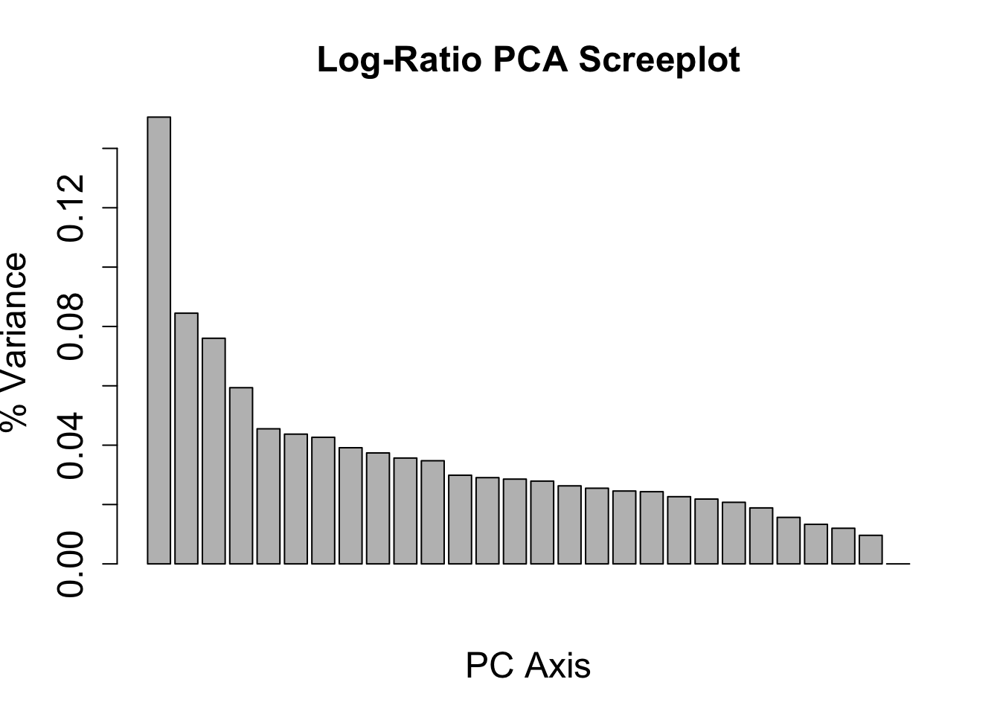
Plot PCA
blues <- c("#dde4f0","#b7cae8","#96b3e3",
"#6b94d6","#3473d9", "#0b4fbd",
"#0b429c", "#07214a", "#081730")
names(blues) <- depth_bin
pca_abovedcm <- data.frame(pca_clr_abovedcm$x, STN_NISKIN = rownames(pca_clr_abovedcm$x)) %>%
select(PC1, PC2, PC3, STN_NISKIN) %>%
left_join(stn_depth_info) %>%
# Factoring
mutate(depth_order = factor(DEPTH_BIN, levels = depth_bin)) %>%
mutate(FEATURE = str_replace_na(FEATURE, replacement = "other")) %>%
## Generate PCA plot
ggplot(aes(x = PC1, y = PC2,
shape = FEATURE,
fill = depth_order)) +
geom_hline(yintercept = 0) + geom_vline(xintercept = 0, color = "#525252") +
geom_jitter(stroke = 0.6, size = 2.5, width = 0.8) +
ylab(paste0('PC2 ',round(variance_clr_abovedcm[2]*100,2),'%')) +
xlab(paste0('PC1 ',round(variance_clr_abovedcm[1]*100,2),'%')) +
scale_shape_manual(values = c(24, 23, 21, 22)) +
scale_fill_manual(values = blues) +
theme_bw() +
theme(axis.text = element_text(color="black", size=12),
legend.title = element_blank(),
panel.grid.major = element_line(color = "grey70", linetype = "dashed"),
axis.title = element_text(color="black", size= 12),
legend.text = element_text(color = "black", size = 8, face = "bold"),
plot.margin = margin(2, 1, 2, 1, "cm")) +
guides(fill = guide_legend(override.aes = list(
color = "black",
shape = 22,
size = 5)),
shape = guide_legend(override.aes = list(
color = "black",
size = 5)))Joining with `by = join_by(STN_NISKIN)`pca_abovedcm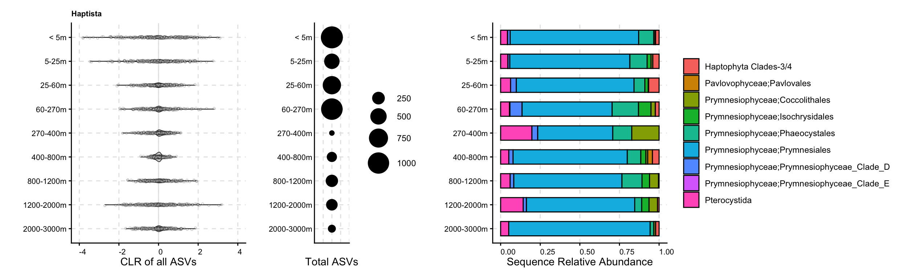
# ggsave("figures/pca-plot.svg", width = 6, height = 5, device = "svg", limitsize = FALSE)11.1.4 Above | Below O2 minimum
# head(table1_wfeature)
below_02_table <- table1_wfeature %>%
# Filter low abundance ASVs
filter(O2_MIN == "Below oxygen minimum") %>% ungroup()
below_02_subset <- as.character(unique(below_02_table$STN_NISKIN))
# surf_subset
below_02_asv <- asv_long_avg_wtax %>%
filter(MEAN_REPS_seq >= 100) %>%
filter(STN_NISKIN %in% below_02_subset) %>% ungroup()
below_02_rda <- run_rda(below_02_table, below_02_asv); below_02_rda`summarise()` has grouped output by 'STN_NISKIN'. You can override using the
`.groups` argument.
Joining with `by = join_by(STN_NISKIN)`
Call: rda(formula = clr_asv_matrix ~ Transect + OilRig_Count + DAY_NIGHT +
HR_OF_DAY + DEPTH_MAX + DIST_OUTFLOW + Depth + NH4 + NO2 + NO3 + Oxygen +
PO4 + SIL + Salinity + Temperature, data = metadata_normalized, na.action =
na.exclude)
Inertia Proportion Rank
Total 214.0307 1.0000
Constrained 87.4021 0.4084 15
Unconstrained 126.6286 0.5916 29
Inertia is variance
Eigenvalues for constrained axes:
RDA1 RDA2 RDA3 RDA4 RDA5 RDA6 RDA7 RDA8 RDA9 RDA10 RDA11
17.664 8.865 8.550 7.355 6.418 5.688 4.913 4.669 4.369 3.912 3.545
RDA12 RDA13 RDA14 RDA15
3.220 3.105 2.767 2.362
Eigenvalues for unconstrained axes:
PC1 PC2 PC3 PC4 PC5 PC6 PC7 PC8
10.011 9.736 7.151 6.756 6.366 6.072 5.618 5.337
(Showing 8 of 29 unconstrained eigenvalues)RsquareAdj(below_02_rda)$adj.r.squared[1] 0.102343anova.cca(below_02_rda, step = 100, by = "term")Permutation test for rda under reduced model
Terms added sequentially (first to last)
Permutation: free
Number of permutations: 999
Model: rda(formula = clr_asv_matrix ~ Transect + OilRig_Count + DAY_NIGHT + HR_OF_DAY + DEPTH_MAX + DIST_OUTFLOW + Depth + NH4 + NO2 + NO3 + Oxygen + PO4 + SIL + Salinity + Temperature, data = metadata_normalized, na.action = na.exclude)
Df Variance F Pr(>F)
Transect 1 7.009 1.6052 0.005 **
OilRig_Count 1 5.508 1.2614 0.060 .
DAY_NIGHT 1 5.027 1.1513 0.141
HR_OF_DAY 1 4.206 0.9633 0.532
DEPTH_MAX 1 6.878 1.5752 0.007 **
DIST_OUTFLOW 1 6.946 1.5907 0.005 **
Depth 1 10.281 2.3546 0.001 ***
NH4 1 4.352 0.9966 0.466
NO2 1 5.015 1.1486 0.269
NO3 1 5.380 1.2321 0.086 .
Oxygen 1 5.727 1.3115 0.032 *
PO4 1 4.313 0.9878 0.450
SIL 1 6.671 1.5277 0.015 *
Salinity 1 4.957 1.1353 0.185
Temperature 1 5.132 1.1752 0.116
Residual 29 126.629
---
Signif. codes: 0 '***' 0.001 '**' 0.01 '*' 0.05 '.' 0.1 ' ' 1# head(table1_wfeature)
above_02_table <- table1_wfeature %>%
# Filter low abundance ASVs
filter(O2_MIN != "Below oxygen minimum") %>% ungroup()
above_02_subset <- as.character(unique(above_02_table$STN_NISKIN))
# surf_subset
above_02_asv <- asv_long_avg_wtax %>%
filter(MEAN_REPS_seq >= 100) %>%
filter(STN_NISKIN %in% above_02_subset) %>% ungroup()
above_02_rda <- run_rda(above_02_table, above_02_asv); above_02_rda`summarise()` has grouped output by 'STN_NISKIN'. You can override using the
`.groups` argument.
Joining with `by = join_by(STN_NISKIN)`
Call: rda(formula = clr_asv_matrix ~ Transect + OilRig_Count + DAY_NIGHT +
HR_OF_DAY + DEPTH_MAX + DIST_OUTFLOW + Depth + NH4 + NO2 + NO3 + Oxygen +
PO4 + SIL + Salinity + Temperature, data = metadata_normalized, na.action =
na.exclude)
Inertia Proportion Rank
Total 258.0240 1.0000
Constrained 108.0671 0.4188 15
Unconstrained 149.9569 0.5812 29
Inertia is variance
Eigenvalues for constrained axes:
RDA1 RDA2 RDA3 RDA4 RDA5 RDA6 RDA7 RDA8 RDA9 RDA10 RDA11
19.962 18.163 10.735 9.660 7.236 6.101 5.635 5.518 4.634 4.079 3.746
RDA12 RDA13 RDA14 RDA15
3.595 3.317 3.000 2.688
Eigenvalues for unconstrained axes:
PC1 PC2 PC3 PC4 PC5 PC6 PC7 PC8
14.334 11.858 10.267 8.023 7.404 6.941 6.624 6.520
(Showing 8 of 29 unconstrained eigenvalues)RsquareAdj(above_02_rda)$adj.r.squared[1] 0.1182183anova.cca(above_02_rda, step = 100, by = "term")Permutation test for rda under reduced model
Terms added sequentially (first to last)
Permutation: free
Number of permutations: 999
Model: rda(formula = clr_asv_matrix ~ Transect + OilRig_Count + DAY_NIGHT + HR_OF_DAY + DEPTH_MAX + DIST_OUTFLOW + Depth + NH4 + NO2 + NO3 + Oxygen + PO4 + SIL + Salinity + Temperature, data = metadata_normalized, na.action = na.exclude)
Df Variance F Pr(>F)
Transect 1 6.253 1.2092 0.119
OilRig_Count 1 4.514 0.8730 0.733
DAY_NIGHT 1 6.029 1.1660 0.152
HR_OF_DAY 1 4.683 0.9055 0.671
DEPTH_MAX 1 5.779 1.1175 0.220
DIST_OUTFLOW 1 7.547 1.4595 0.018 *
Depth 1 16.872 3.2628 0.001 ***
NH4 1 5.961 1.1528 0.177
NO2 1 10.951 2.1178 0.002 **
NO3 1 7.054 1.3642 0.070 .
Oxygen 1 8.171 1.5802 0.005 **
PO4 1 5.729 1.1080 0.232
SIL 1 6.812 1.3174 0.070 .
Salinity 1 6.607 1.2777 0.071 .
Temperature 1 5.105 0.9872 0.462
Residual 29 149.957
---
Signif. codes: 0 '***' 0.001 '**' 0.01 '*' 0.05 '.' 0.1 ' ' 112 RDA with taxa
Use the same function, but subset ASV data for individual taxonomic groups.
run_rda_wfeatures <- function(mod_metadata, mod_asv_long){
# Select categorical data
# mod_metadata <- surf_table
# mod_asv_long <- surf_asv
#
categorical <- mod_metadata %>%
select(STN_NISKIN, Transect, OilRig_Count, DCM, SALT_MAX, O2_MIN, DAY_NIGHT, HR_OF_DAY) %>% distinct()
# Isolate numerical data as matrix
metadata_for_rda_0 <- mod_metadata %>%
select(STN_NISKIN, DIST_OUTFLOW, DEPTH_MAX, Depth, NH4, NO2, NO3, Oxygen, PO4, SIL, Salinity, Temperature) %>% distinct() %>%
pivot_longer(cols = -c(STN_NISKIN), names_to = "VARIABLES", values_to = "VALUE") %>%
group_by(STN_NISKIN, VARIABLES) %>%
summarise(MEAN_VAL = mean(VALUE)) %>%
pivot_wider(names_from = VARIABLES, values_from = MEAN_VAL) %>%
arrange(STN_NISKIN) %>%
column_to_rownames(var = "STN_NISKIN") %>% as.matrix
# Normalize
standarize_metadata <- decostand(metadata_for_rda_0, MARGIN = 2, method = "standardize")
# Combine normalized numerical data with categorical
metadata_normalized <- categorical %>%
right_join(as.data.frame(standarize_metadata) %>% rownames_to_column(var = "STN_NISKIN")) %>%
arrange(STN_NISKIN) %>%
column_to_rownames(var = "STN_NISKIN")
#
## Prepare ASV data
asv_wide_avg_reps_matrix <- mod_asv_long %>%
ungroup() %>%
select(FeatureID, STN_NISKIN, MEAN_REPS_seq) %>%
pivot_wider(names_from = STN_NISKIN, values_from = MEAN_REPS_seq, values_fn = mean, values_fill = 0) %>%
column_to_rownames(var = "FeatureID") %>%
as.matrix()
# Transform
asv_wide_avg_rda_0 <- data.frame(t(asv_wide_avg_reps_matrix)) %>%
rownames_to_column(var = "STN_NISKIN") %>%
arrange(STN_NISKIN) %>%
column_to_rownames(var = "STN_NISKIN") %>%
as.matrix
#
# CLR normalization
clr_asv_matrix <- data.frame(compositions::clr(asv_wide_avg_rda_0))
#
# setdiff(rownames(metadata_normalized), (rownames(clr_asv_matrix)))
# RDA step
rda_output <- rda(clr_asv_matrix ~ ., data = metadata_normalized, na.action = na.exclude)
rda_output
return(rda_output)
}12.0.1 Dinoflagellates
All dinoflagellate ASVs
dino_table <- table1_wfeature %>%
ungroup()
dino_subset <- as.character(unique(dino_table$STN_NISKIN))
dino_asv <- asv_long_avg_wtax %>%
filter(Supergroup_simplified == "TSAR-Dinoflagellata") %>%
filter(MEAN_REPS_seq >= 100) %>%
filter(STN_NISKIN %in% dino_subset) %>% ungroup()
dino_rda <- run_rda_wfeatures(dino_table, dino_asv); dino_rda`summarise()` has grouped output by 'STN_NISKIN'. You can override using the
`.groups` argument.
Joining with `by = join_by(STN_NISKIN)`
Call: rda(formula = clr_asv_matrix ~ Transect + OilRig_Count + DCM +
SALT_MAX + O2_MIN + DAY_NIGHT + HR_OF_DAY + DEPTH_MAX + DIST_OUTFLOW +
Depth + NH4 + NO2 + NO3 + Oxygen + PO4 + SIL + Salinity + Temperature, data
= metadata_normalized, na.action = na.exclude)
Inertia Proportion Rank
Total 105.6580 1.0000
Constrained 31.3339 0.2966 18
Unconstrained 74.3240 0.7034 71
Inertia is variance
Eigenvalues for constrained axes:
RDA1 RDA2 RDA3 RDA4 RDA5 RDA6 RDA7 RDA8 RDA9 RDA10 RDA11 RDA12 RDA13
7.812 4.082 2.978 2.318 1.813 1.491 1.276 1.202 1.147 1.039 0.941 0.905 0.845
RDA14 RDA15 RDA16 RDA17 RDA18
0.832 0.762 0.693 0.647 0.552
Eigenvalues for unconstrained axes:
PC1 PC2 PC3 PC4 PC5 PC6 PC7 PC8
4.040 3.320 2.878 2.634 2.469 2.210 2.151 1.939
(Showing 8 of 71 unconstrained eigenvalues)RsquareAdj(dino_rda)$adj.r.squared[1] 0.1182232anova.cca(dino_rda, step = 100, by = "term")Permutation test for rda under reduced model
Terms added sequentially (first to last)
Permutation: free
Number of permutations: 999
Model: rda(formula = clr_asv_matrix ~ Transect + OilRig_Count + DCM + SALT_MAX + O2_MIN + DAY_NIGHT + HR_OF_DAY + DEPTH_MAX + DIST_OUTFLOW + Depth + NH4 + NO2 + NO3 + Oxygen + PO4 + SIL + Salinity + Temperature, data = metadata_normalized, na.action = na.exclude)
Df Variance F Pr(>F)
Transect 1 1.269 1.2126 0.082 .
OilRig_Count 1 1.031 0.9853 0.458
DCM 1 6.127 5.8527 0.001 ***
SALT_MAX 1 1.246 1.1904 0.185
O2_MIN 1 3.397 3.2454 0.001 ***
DAY_NIGHT 1 1.134 1.0831 0.236
HR_OF_DAY 1 0.974 0.9305 0.640
DEPTH_MAX 1 1.086 1.0377 0.355
DIST_OUTFLOW 1 1.472 1.4066 0.025 *
Depth 1 1.564 1.4943 0.019 *
NH4 1 0.910 0.8693 0.799
NO2 1 1.167 1.1145 0.250
NO3 1 2.325 2.2215 0.001 ***
Oxygen 1 1.395 1.3324 0.045 *
PO4 1 1.897 1.8117 0.015 *
SIL 1 1.381 1.3193 0.060 .
Salinity 1 1.818 1.7370 0.004 **
Temperature 1 1.139 1.0883 0.278
Residual 71 74.324
---
Signif. codes: 0 '***' 0.001 '**' 0.01 '*' 0.05 '.' 0.1 ' ' 1Dino ASVs above DCM
dino_table_abovedcm <- table1_wfeature %>%
filter(DCM == "Above DCM") %>%
ungroup()
dino_subset <- as.character(unique(dino_table_abovedcm$STN_NISKIN))
dino_asv <- asv_long_avg_wtax %>%
filter(Supergroup_simplified == "TSAR-Dinoflagellata") %>%
filter(MEAN_REPS_seq >= 100) %>%
filter(STN_NISKIN %in% dino_subset) %>% ungroup()
dino_rda <- run_rda(dino_table_abovedcm, dino_asv); dino_rda`summarise()` has grouped output by 'STN_NISKIN'. You can override using the
`.groups` argument.
Joining with `by = join_by(STN_NISKIN)`
Call: rda(formula = clr_asv_matrix ~ Transect + OilRig_Count + DAY_NIGHT +
HR_OF_DAY + DEPTH_MAX + DIST_OUTFLOW + Depth + NH4 + NO2 + NO3 + Oxygen +
PO4 + SIL + Salinity + Temperature, data = metadata_normalized, na.action =
na.exclude)
Inertia Proportion Rank
Total 102.5413 1.0000
Constrained 60.1079 0.5862 15
Unconstrained 42.4333 0.4138 12
Inertia is variance
Eigenvalues for constrained axes:
RDA1 RDA2 RDA3 RDA4 RDA5 RDA6 RDA7 RDA8 RDA9 RDA10 RDA11 RDA12 RDA13
9.863 8.807 6.903 6.463 4.660 3.689 3.275 3.034 2.808 2.352 2.137 1.978 1.625
RDA14 RDA15
1.539 0.974
Eigenvalues for unconstrained axes:
PC1 PC2 PC3 PC4 PC5 PC6 PC7 PC8 PC9 PC10 PC11 PC12
9.946 5.200 4.521 3.848 3.394 3.155 2.718 2.430 2.063 2.013 1.853 1.292 RsquareAdj(dino_rda)$adj.r.squared[1] 0.06891136anova.cca(dino_rda, step = 100, by = "term")Permutation test for rda under reduced model
Terms added sequentially (first to last)
Permutation: free
Number of permutations: 999
Model: rda(formula = clr_asv_matrix ~ Transect + OilRig_Count + DAY_NIGHT + HR_OF_DAY + DEPTH_MAX + DIST_OUTFLOW + Depth + NH4 + NO2 + NO3 + Oxygen + PO4 + SIL + Salinity + Temperature, data = metadata_normalized, na.action = na.exclude)
Df Variance F Pr(>F)
Transect 1 3.152 0.8914 0.706
OilRig_Count 1 3.116 0.8813 0.674
DAY_NIGHT 1 3.844 1.0872 0.291
HR_OF_DAY 1 2.793 0.7898 0.873
DEPTH_MAX 1 3.550 1.0040 0.441
DIST_OUTFLOW 1 4.302 1.2165 0.134
Depth 1 8.398 2.3748 0.001 ***
NH4 1 3.069 0.8679 0.651
NO2 1 3.808 1.0769 0.335
NO3 1 3.743 1.0586 0.353
Oxygen 1 5.251 1.4850 0.025 *
PO4 1 2.748 0.7770 0.858
SIL 1 3.434 0.9712 0.515
Salinity 1 4.949 1.3995 0.054 .
Temperature 1 3.951 1.1173 0.299
Residual 12 42.433
---
Signif. codes: 0 '***' 0.001 '**' 0.01 '*' 0.05 '.' 0.1 ' ' 112.0.2 Syndiniales
syn_table <- table1_wfeature %>%
ungroup()
syn_subset <- as.character(unique(syn_table$STN_NISKIN))
syn_asv <- asv_long_avg_wtax %>%
filter(Class == "Syndiniales") %>%
filter(MEAN_REPS_seq >= 100) %>%
filter(STN_NISKIN %in% syn_subset) %>% ungroup()
syn_rda <- run_rda_wfeatures(syn_table, syn_asv); syn_rda`summarise()` has grouped output by 'STN_NISKIN'. You can override using the
`.groups` argument.
Joining with `by = join_by(STN_NISKIN)`
Call: rda(formula = clr_asv_matrix ~ Transect + OilRig_Count + DCM +
SALT_MAX + O2_MIN + DAY_NIGHT + HR_OF_DAY + DEPTH_MAX + DIST_OUTFLOW +
Depth + NH4 + NO2 + NO3 + Oxygen + PO4 + SIL + Salinity + Temperature, data
= metadata_normalized, na.action = na.exclude)
Inertia Proportion Rank
Total 68.3842 1.0000
Constrained 20.1430 0.2946 18
Unconstrained 48.2412 0.7054 71
Inertia is variance
Eigenvalues for constrained axes:
RDA1 RDA2 RDA3 RDA4 RDA5 RDA6 RDA7 RDA8 RDA9 RDA10 RDA11 RDA12 RDA13
4.516 3.337 2.104 1.420 1.145 0.993 0.822 0.736 0.677 0.665 0.622 0.601 0.551
RDA14 RDA15 RDA16 RDA17 RDA18
0.493 0.455 0.439 0.371 0.196
Eigenvalues for unconstrained axes:
PC1 PC2 PC3 PC4 PC5 PC6 PC7 PC8
3.338 2.279 2.130 1.855 1.797 1.654 1.463 1.418
(Showing 8 of 71 unconstrained eigenvalues)RsquareAdj(syn_rda)$adj.r.squared[1] 0.1157123anova.cca(syn_rda, step = 100, by = "term")Permutation test for rda under reduced model
Terms added sequentially (first to last)
Permutation: free
Number of permutations: 999
Model: rda(formula = clr_asv_matrix ~ Transect + OilRig_Count + DCM + SALT_MAX + O2_MIN + DAY_NIGHT + HR_OF_DAY + DEPTH_MAX + DIST_OUTFLOW + Depth + NH4 + NO2 + NO3 + Oxygen + PO4 + SIL + Salinity + Temperature, data = metadata_normalized, na.action = na.exclude)
Df Variance F Pr(>F)
Transect 1 0.725 1.0667 0.293
OilRig_Count 1 0.699 1.0286 0.358
DCM 1 3.388 4.9867 0.001 ***
SALT_MAX 1 0.698 1.0266 0.406
O2_MIN 1 2.755 4.0548 0.001 ***
DAY_NIGHT 1 0.696 1.0241 0.372
HR_OF_DAY 1 0.615 0.9056 0.644
DEPTH_MAX 1 0.691 1.0165 0.398
DIST_OUTFLOW 1 0.929 1.3678 0.048 *
Depth 1 1.123 1.6530 0.001 ***
NH4 1 0.585 0.8613 0.744
NO2 1 0.774 1.1391 0.231
NO3 1 1.880 2.7668 0.001 ***
Oxygen 1 0.819 1.2051 0.112
PO4 1 1.345 1.9795 0.017 *
SIL 1 0.919 1.3521 0.062 .
Salinity 1 0.772 1.1359 0.211
Temperature 1 0.731 1.0757 0.318
Residual 71 48.241
---
Signif. codes: 0 '***' 0.001 '**' 0.01 '*' 0.05 '.' 0.1 ' ' 112.0.3 Radiolaria
rad_table <- table1_wfeature %>%
ungroup()
rad_subset <- as.character(unique(rad_table$STN_NISKIN))
rad_asv <- asv_long_avg_wtax %>%
filter(Supergroup_simplified == "TSAR-Radiolaria") %>%
# filter(MEAN_REPS_seq >= 100) %>%
filter(STN_NISKIN %in% rad_subset) %>% ungroup()
rad_rda <- run_rda_wfeatures(rad_table, rad_asv); rad_rda`summarise()` has grouped output by 'STN_NISKIN'. You can override using the
`.groups` argument.
Joining with `by = join_by(STN_NISKIN)`
Call: rda(formula = clr_asv_matrix ~ Transect + OilRig_Count + DCM +
SALT_MAX + O2_MIN + DAY_NIGHT + HR_OF_DAY + DEPTH_MAX + DIST_OUTFLOW +
Depth + NH4 + NO2 + NO3 + Oxygen + PO4 + SIL + Salinity + Temperature, data
= metadata_normalized, na.action = na.exclude)
Inertia Proportion Rank
Total 396.7197 1.0000
Constrained 131.2401 0.3308 18
Unconstrained 265.4797 0.6692 71
Inertia is variance
Eigenvalues for constrained axes:
RDA1 RDA2 RDA3 RDA4 RDA5 RDA6 RDA7 RDA8 RDA9 RDA10 RDA11 RDA12 RDA13
40.83 20.67 12.45 8.83 7.25 5.33 4.63 4.31 3.65 3.45 3.26 3.15 2.89
RDA14 RDA15 RDA16 RDA17 RDA18
2.72 2.64 2.50 1.86 0.79
Eigenvalues for unconstrained axes:
PC1 PC2 PC3 PC4 PC5 PC6 PC7 PC8
19.211 13.389 12.829 10.389 9.262 8.024 7.461 6.913
(Showing 8 of 71 unconstrained eigenvalues)RsquareAdj(rad_rda)$adj.r.squared[1] 0.16116anova.cca(rad_rda, step = 100, by = "term")Permutation test for rda under reduced model
Terms added sequentially (first to last)
Permutation: free
Number of permutations: 999
Model: rda(formula = clr_asv_matrix ~ Transect + OilRig_Count + DCM + SALT_MAX + O2_MIN + DAY_NIGHT + HR_OF_DAY + DEPTH_MAX + DIST_OUTFLOW + Depth + NH4 + NO2 + NO3 + Oxygen + PO4 + SIL + Salinity + Temperature, data = metadata_normalized, na.action = na.exclude)
Df Variance F Pr(>F)
Transect 1 3.984 1.0654 0.285
OilRig_Count 1 3.731 0.9978 0.430
DCM 1 22.739 6.0812 0.001 ***
SALT_MAX 1 4.196 1.1223 0.312
O2_MIN 1 20.391 5.4535 0.001 ***
DAY_NIGHT 1 3.428 0.9167 0.555
HR_OF_DAY 1 4.305 1.1514 0.193
DEPTH_MAX 1 5.108 1.3660 0.061 .
DIST_OUTFLOW 1 4.734 1.2660 0.097 .
Depth 1 10.304 2.7558 0.001 ***
NH4 1 4.403 1.1775 0.151
NO2 1 8.611 2.3028 0.001 ***
NO3 1 9.047 2.4194 0.001 ***
Oxygen 1 5.568 1.4892 0.033 *
PO4 1 6.154 1.6458 0.044 *
SIL 1 7.393 1.9772 0.003 **
Salinity 1 3.960 1.0591 0.343
Temperature 1 3.185 0.8519 0.699
Residual 71 265.480
---
Signif. codes: 0 '***' 0.001 '**' 0.01 '*' 0.05 '.' 0.1 ' ' 112.0.4 Ciliates
cil_table <- table1_wfeature %>%
ungroup()
cil_subset <- as.character(unique(cil_table$STN_NISKIN))
cil_asv <- asv_long_avg_wtax %>%
filter(Supergroup_simplified == "TSAR-Ciliophora") %>%
# filter(MEAN_REPS_seq >= 100) %>%
filter(STN_NISKIN %in% syn_subset) %>% ungroup()
cil_rda <- run_rda_wfeatures(cil_table, cil_asv); cil_rda`summarise()` has grouped output by 'STN_NISKIN'. You can override using the
`.groups` argument.
Joining with `by = join_by(STN_NISKIN)`
Call: rda(formula = clr_asv_matrix ~ Transect + OilRig_Count + DCM +
SALT_MAX + O2_MIN + DAY_NIGHT + HR_OF_DAY + DEPTH_MAX + DIST_OUTFLOW +
Depth + NH4 + NO2 + NO3 + Oxygen + PO4 + SIL + Salinity + Temperature, data
= metadata_normalized, na.action = na.exclude)
Inertia Proportion Rank
Total 119.5776 1.0000
Constrained 34.2421 0.2864 18
Unconstrained 85.3355 0.7136 71
Inertia is variance
Eigenvalues for constrained axes:
RDA1 RDA2 RDA3 RDA4 RDA5 RDA6 RDA7 RDA8 RDA9 RDA10 RDA11 RDA12 RDA13
6.949 3.906 3.124 2.351 2.025 1.948 1.802 1.642 1.557 1.414 1.336 1.175 1.062
RDA14 RDA15 RDA16 RDA17 RDA18
0.915 0.886 0.784 0.730 0.637
Eigenvalues for unconstrained axes:
PC1 PC2 PC3 PC4 PC5 PC6 PC7 PC8
4.929 4.017 3.798 3.376 3.191 2.861 2.687 2.537
(Showing 8 of 71 unconstrained eigenvalues)RsquareAdj(cil_rda)$adj.r.squared[1] 0.1054361anova.cca(cil_rda, step = 100, by = "term")Permutation test for rda under reduced model
Terms added sequentially (first to last)
Permutation: free
Number of permutations: 999
Model: rda(formula = clr_asv_matrix ~ Transect + OilRig_Count + DCM + SALT_MAX + O2_MIN + DAY_NIGHT + HR_OF_DAY + DEPTH_MAX + DIST_OUTFLOW + Depth + NH4 + NO2 + NO3 + Oxygen + PO4 + SIL + Salinity + Temperature, data = metadata_normalized, na.action = na.exclude)
Df Variance F Pr(>F)
Transect 1 1.617 1.3451 0.018 *
OilRig_Count 1 1.501 1.2487 0.079 .
DCM 1 5.081 4.2275 0.001 ***
SALT_MAX 1 2.136 1.7769 0.005 **
O2_MIN 1 2.279 1.8964 0.001 ***
DAY_NIGHT 1 1.155 0.9607 0.585
HR_OF_DAY 1 1.361 1.1321 0.172
DEPTH_MAX 1 1.469 1.2226 0.085 .
DIST_OUTFLOW 1 1.277 1.0629 0.278
Depth 1 1.183 0.9843 0.477
NH4 1 1.473 1.2256 0.110
NO2 1 2.190 1.8223 0.002 **
NO3 1 1.842 1.5327 0.021 *
Oxygen 1 1.915 1.5937 0.002 **
PO4 1 1.546 1.2867 0.179
SIL 1 1.737 1.4450 0.014 *
Salinity 1 2.410 2.0049 0.001 ***
Temperature 1 2.069 1.7218 0.010 **
Residual 71 85.335
---
Signif. codes: 0 '***' 0.001 '**' 0.01 '*' 0.05 '.' 0.1 ' ' 112.0.5 Gyrista
gyr_table <- table1_wfeature %>%
ungroup()
gyr_subset <- as.character(unique(gyr_table$STN_NISKIN))
gyr_asv <- asv_long_avg_wtax %>%
filter(Supergroup_simplified == "TSAR-Gyrista") %>%
# filter(MEAN_REPS_seq >= 100) %>%
filter(STN_NISKIN %in% gyr_subset) %>% ungroup()
gyr_rda <- run_rda_wfeatures(gyr_table, gyr_asv); gyr_rda`summarise()` has grouped output by 'STN_NISKIN'. You can override using the
`.groups` argument.
Joining with `by = join_by(STN_NISKIN)`
Call: rda(formula = clr_asv_matrix ~ Transect + OilRig_Count + DCM +
SALT_MAX + O2_MIN + DAY_NIGHT + HR_OF_DAY + DEPTH_MAX + DIST_OUTFLOW +
Depth + NH4 + NO2 + NO3 + Oxygen + PO4 + SIL + Salinity + Temperature, data
= metadata_normalized, na.action = na.exclude)
Inertia Proportion Rank
Total 88.4133 1.0000
Constrained 33.5678 0.3797 18
Unconstrained 54.8455 0.6203 71
Inertia is variance
Eigenvalues for constrained axes:
RDA1 RDA2 RDA3 RDA4 RDA5 RDA6 RDA7 RDA8 RDA9 RDA10 RDA11
10.652 5.504 3.440 2.632 1.804 1.400 1.186 1.064 0.950 0.866 0.770
RDA12 RDA13 RDA14 RDA15 RDA16 RDA17 RDA18
0.647 0.611 0.579 0.459 0.362 0.341 0.299
Eigenvalues for unconstrained axes:
PC1 PC2 PC3 PC4 PC5 PC6 PC7 PC8
4.652 4.456 2.942 2.760 2.295 2.125 1.834 1.724
(Showing 8 of 71 unconstrained eigenvalues)RsquareAdj(gyr_rda)$adj.r.squared[1] 0.2224027anova.cca(gyr_rda, step = 100, by = "term")Permutation test for rda under reduced model
Terms added sequentially (first to last)
Permutation: free
Number of permutations: 999
Model: rda(formula = clr_asv_matrix ~ Transect + OilRig_Count + DCM + SALT_MAX + O2_MIN + DAY_NIGHT + HR_OF_DAY + DEPTH_MAX + DIST_OUTFLOW + Depth + NH4 + NO2 + NO3 + Oxygen + PO4 + SIL + Salinity + Temperature, data = metadata_normalized, na.action = na.exclude)
Df Variance F Pr(>F)
Transect 1 2.330 3.0158 0.001 ***
OilRig_Count 1 1.337 1.7310 0.011 *
DCM 1 5.154 6.6717 0.001 ***
SALT_MAX 1 1.307 1.6923 0.049 *
O2_MIN 1 2.412 3.1225 0.001 ***
DAY_NIGHT 1 1.501 1.9435 0.011 *
HR_OF_DAY 1 0.691 0.8940 0.606
DEPTH_MAX 1 1.709 2.2122 0.004 **
DIST_OUTFLOW 1 1.625 2.1039 0.004 **
Depth 1 0.797 1.0312 0.369
NH4 1 1.909 2.4717 0.002 **
NO2 1 2.726 3.5285 0.002 **
NO3 1 1.358 1.7578 0.032 *
Oxygen 1 1.789 2.3166 0.007 **
PO4 1 1.022 1.3234 0.187
SIL 1 1.866 2.4155 0.004 **
Salinity 1 2.875 3.7224 0.001 ***
Temperature 1 1.160 1.5011 0.077 .
Residual 71 54.845
---
Signif. codes: 0 '***' 0.001 '**' 0.01 '*' 0.05 '.' 0.1 ' ' 1Gyrista above DCM
gyr_table <- table1_wfeature %>%
filter(DCM == "Above DCM") %>%
ungroup()
gyr_subset <- as.character(unique(gyr_table$STN_NISKIN))
gyr_asv <- asv_long_avg_wtax %>%
filter(Supergroup_simplified == "TSAR-Gyrista") %>%
# filter(MEAN_REPS_seq >= 100) %>%
filter(STN_NISKIN %in% gyr_subset) %>% ungroup()
gyr_rda <- run_rda(gyr_table, gyr_asv); gyr_rda`summarise()` has grouped output by 'STN_NISKIN'. You can override using the
`.groups` argument.
Joining with `by = join_by(STN_NISKIN)`
Call: rda(formula = clr_asv_matrix ~ Transect + OilRig_Count + DAY_NIGHT +
HR_OF_DAY + DEPTH_MAX + DIST_OUTFLOW + Depth + NH4 + NO2 + NO3 + Oxygen +
PO4 + SIL + Salinity + Temperature, data = metadata_normalized, na.action =
na.exclude)
Inertia Proportion Rank
Total 117.8553 1.0000
Constrained 84.9986 0.7212 15
Unconstrained 32.8567 0.2788 12
Inertia is variance
Eigenvalues for constrained axes:
RDA1 RDA2 RDA3 RDA4 RDA5 RDA6 RDA7 RDA8 RDA9 RDA10 RDA11
23.493 13.615 9.887 7.136 5.683 4.011 3.661 3.242 3.073 2.726 2.177
RDA12 RDA13 RDA14 RDA15
1.907 1.673 1.434 1.282
Eigenvalues for unconstrained axes:
PC1 PC2 PC3 PC4 PC5 PC6 PC7 PC8 PC9 PC10 PC11 PC12
6.256 4.547 4.075 3.013 2.777 2.561 2.108 2.002 1.732 1.604 1.295 0.886 RsquareAdj(gyr_rda)$adj.r.squared[1] 0.3727261anova.cca(gyr_rda, step = 100, by = "term")Permutation test for rda under reduced model
Terms added sequentially (first to last)
Permutation: free
Number of permutations: 999
Model: rda(formula = clr_asv_matrix ~ Transect + OilRig_Count + DAY_NIGHT + HR_OF_DAY + DEPTH_MAX + DIST_OUTFLOW + Depth + NH4 + NO2 + NO3 + Oxygen + PO4 + SIL + Salinity + Temperature, data = metadata_normalized, na.action = na.exclude)
Df Variance F Pr(>F)
Transect 1 3.705 1.3532 0.090 .
OilRig_Count 1 8.721 3.1850 0.002 **
DAY_NIGHT 1 5.286 1.9306 0.016 *
HR_OF_DAY 1 2.345 0.8564 0.673
DEPTH_MAX 1 6.349 2.3186 0.004 **
DIST_OUTFLOW 1 5.789 2.1142 0.003 **
Depth 1 11.602 4.2373 0.001 ***
NH4 1 5.576 2.0366 0.048 *
NO2 1 6.885 2.5146 0.003 **
NO3 1 6.835 2.4964 0.055 .
Oxygen 1 4.779 1.7453 0.033 *
PO4 1 2.966 1.0831 0.314
SIL 1 6.804 2.4849 0.002 **
Salinity 1 4.619 1.6870 0.046 *
Temperature 1 2.739 1.0002 0.419
Residual 12 32.857
---
Signif. codes: 0 '***' 0.001 '**' 0.01 '*' 0.05 '.' 0.1 ' ' 1Gyrista below DCM
gyr_table <- table1_wfeature %>%
filter(DCM != "Above DCM") %>%
ungroup()
gyr_subset <- as.character(unique(gyr_table$STN_NISKIN))
gyr_asv <- asv_long_avg_wtax %>%
filter(Supergroup_simplified == "TSAR-Gyrista") %>%
# filter(MEAN_REPS_seq >= 100) %>%
filter(STN_NISKIN %in% gyr_subset) %>% ungroup()
gyr_rda <- run_rda(gyr_table, gyr_asv); gyr_rda`summarise()` has grouped output by 'STN_NISKIN'. You can override using the
`.groups` argument.
Joining with `by = join_by(STN_NISKIN)`
Call: rda(formula = clr_asv_matrix ~ Transect + OilRig_Count + DAY_NIGHT +
HR_OF_DAY + DEPTH_MAX + DIST_OUTFLOW + Depth + NH4 + NO2 + NO3 + Oxygen +
PO4 + SIL + Salinity + Temperature, data = metadata_normalized, na.action =
na.exclude)
Inertia Proportion Rank
Total 69.341 1.000
Constrained 27.391 0.395 15
Unconstrained 41.950 0.605 46
Inertia is variance
Eigenvalues for constrained axes:
RDA1 RDA2 RDA3 RDA4 RDA5 RDA6 RDA7 RDA8 RDA9 RDA10 RDA11 RDA12 RDA13
7.698 5.622 3.035 1.914 1.655 1.470 1.316 0.875 0.780 0.720 0.632 0.542 0.506
RDA14 RDA15
0.343 0.283
Eigenvalues for unconstrained axes:
PC1 PC2 PC3 PC4 PC5 PC6 PC7 PC8
4.932 4.244 3.332 2.226 2.019 1.783 1.704 1.554
(Showing 8 of 46 unconstrained eigenvalues)RsquareAdj(gyr_rda)$adj.r.squared[1] 0.1977468anova.cca(gyr_rda, step = 100, by = "term")Permutation test for rda under reduced model
Terms added sequentially (first to last)
Permutation: free
Number of permutations: 999
Model: rda(formula = clr_asv_matrix ~ Transect + OilRig_Count + DAY_NIGHT + HR_OF_DAY + DEPTH_MAX + DIST_OUTFLOW + Depth + NH4 + NO2 + NO3 + Oxygen + PO4 + SIL + Salinity + Temperature, data = metadata_normalized, na.action = na.exclude)
Df Variance F Pr(>F)
Transect 1 3.208 3.5174 0.001 ***
OilRig_Count 1 1.515 1.6617 0.030 *
DAY_NIGHT 1 1.682 1.8447 0.009 **
HR_OF_DAY 1 0.915 1.0036 0.392
DEPTH_MAX 1 1.887 2.0688 0.006 **
DIST_OUTFLOW 1 1.797 1.9704 0.011 *
Depth 1 1.475 1.6179 0.045 *
NH4 1 2.547 2.7930 0.002 **
NO2 1 2.057 2.2557 0.029 *
NO3 1 2.601 2.8524 0.001 ***
Oxygen 1 1.100 1.2066 0.207
PO4 1 1.468 1.6093 0.145
SIL 1 1.310 1.4369 0.086 .
Salinity 1 1.725 1.8911 0.014 *
Temperature 1 2.103 2.3062 0.016 *
Residual 46 41.950
---
Signif. codes: 0 '***' 0.001 '**' 0.01 '*' 0.05 '.' 0.1 ' ' 112.0.6 Haptista
hap_asv <- asv_long_avg_wtax %>%
filter(Supergroup_simplified == "Haptista") %>%
ungroup()
hap_subset <- as.character(unique(hap_asv$STN_NISKIN))
hap_table <- table1_wfeature %>%
filter(STN_NISKIN %in% hap_subset) %>%
ungroup()
hap_rda <- run_rda_wfeatures(hap_table, hap_asv); hap_rda`summarise()` has grouped output by 'STN_NISKIN'. You can override using the
`.groups` argument.
Joining with `by = join_by(STN_NISKIN)`
Call: rda(formula = clr_asv_matrix ~ Transect + OilRig_Count + DCM +
SALT_MAX + O2_MIN + DAY_NIGHT + HR_OF_DAY + DEPTH_MAX + DIST_OUTFLOW +
Depth + NH4 + NO2 + NO3 + Oxygen + PO4 + SIL + Salinity + Temperature, data
= metadata_normalized, na.action = na.exclude)
Inertia Proportion Rank
Total 67.2364 1.0000
Constrained 23.6300 0.3514 18
Unconstrained 43.6064 0.6486 70
Inertia is variance
Eigenvalues for constrained axes:
RDA1 RDA2 RDA3 RDA4 RDA5 RDA6 RDA7 RDA8 RDA9 RDA10 RDA11 RDA12 RDA13
9.861 3.980 1.728 1.108 1.008 0.882 0.773 0.710 0.675 0.595 0.481 0.409 0.360
RDA14 RDA15 RDA16 RDA17 RDA18
0.312 0.227 0.207 0.175 0.139
Eigenvalues for unconstrained axes:
PC1 PC2 PC3 PC4 PC5 PC6 PC7 PC8
4.533 3.389 2.469 2.329 1.999 1.831 1.640 1.526
(Showing 8 of 70 unconstrained eigenvalues)RsquareAdj(hap_rda)$adj.r.squared[1] 0.1846753anova.cca(hap_rda, step = 100, by = "term")Permutation test for rda under reduced model
Terms added sequentially (first to last)
Permutation: free
Number of permutations: 999
Model: rda(formula = clr_asv_matrix ~ Transect + OilRig_Count + DCM + SALT_MAX + O2_MIN + DAY_NIGHT + HR_OF_DAY + DEPTH_MAX + DIST_OUTFLOW + Depth + NH4 + NO2 + NO3 + Oxygen + PO4 + SIL + Salinity + Temperature, data = metadata_normalized, na.action = na.exclude)
Df Variance F Pr(>F)
Transect 1 0.612 0.9817 0.394
OilRig_Count 1 0.635 1.0190 0.414
DCM 1 7.853 12.6055 0.001 ***
SALT_MAX 1 1.325 2.1276 0.028 *
O2_MIN 1 1.109 1.7802 0.037 *
DAY_NIGHT 1 0.544 0.8726 0.638
HR_OF_DAY 1 0.582 0.9338 0.497
DEPTH_MAX 1 0.648 1.0405 0.337
DIST_OUTFLOW 1 1.008 1.6181 0.049 *
Depth 1 0.342 0.5493 0.965
NH4 1 0.510 0.8190 0.684
NO2 1 2.134 3.4248 0.007 **
NO3 1 0.918 1.4743 0.103
Oxygen 1 1.283 2.0595 0.009 **
PO4 1 0.682 1.0947 0.340
SIL 1 0.670 1.0751 0.317
Salinity 1 1.801 2.8909 0.003 **
Temperature 1 0.975 1.5657 0.095 .
Residual 70 43.606
---
Signif. codes: 0 '***' 0.001 '**' 0.01 '*' 0.05 '.' 0.1 ' ' 113 Indicator Species
13.1 indicspecies
https://cran.r-project.org/web/packages/indicspecies/vignettes/IndicatorSpeciesAnalysis.html
library(indicspecies)multipatt is the name of the command from the indicspecies package. The mulitpatt command results in lists of species that are associated with a particular group of samples. If your group has more than 2 categories, multipatt will also identify species that are statistically more abundant in combinations of categories.
The parameters for multipatt are as follows:
the community abundance matrix:“abund” the vector that contains your sample grouping information: “time” the function that multipatt is using to identify indicator species: func = “r.g” the number of permutations used in the statistical test: control = how(nperm=9999)
https://cran.r-universe.dev/indicspecies/doc/manual.html
unique(asv_long_avg_wtax$Supergroup_simplified) [1] "TSAR-Dinoflagellata" "TSAR-Radiolaria"
[3] "Obazoa-Metazoa" "TSAR-Ciliophora"
[5] "TSAR-Gyrista" "TSAR-Bigyra"
[7] "Archaeplastida" "Haptista"
[9] "Obazoa-Ichthyosporea" "TSAR-NA"
[11] "Obazoa-Choanoflagellata" "TSAR-Cercozoa"
[13] "TSAR-Stramenopiles_X" "TSAR-Perkinsea"
[15] "TSAR-Telonemia_X" "Cryptista"
[17] "Obazoa-Fungi" "Obazoa-Opisthokonta_X"
[19] "Excavata" "Amoebozoa"
[21] "TSAR-Apicomplexa" "Provora"
[23] "TSAR-Alveolata_X" "Eukaryota_X"
[25] "Obazoa-Apusomonada_X" "TSAR-Chrompodellids"
[27] "Obazoa-Unannotated" "CRuMs" hist(asv_long_avg_wtax$Temperature)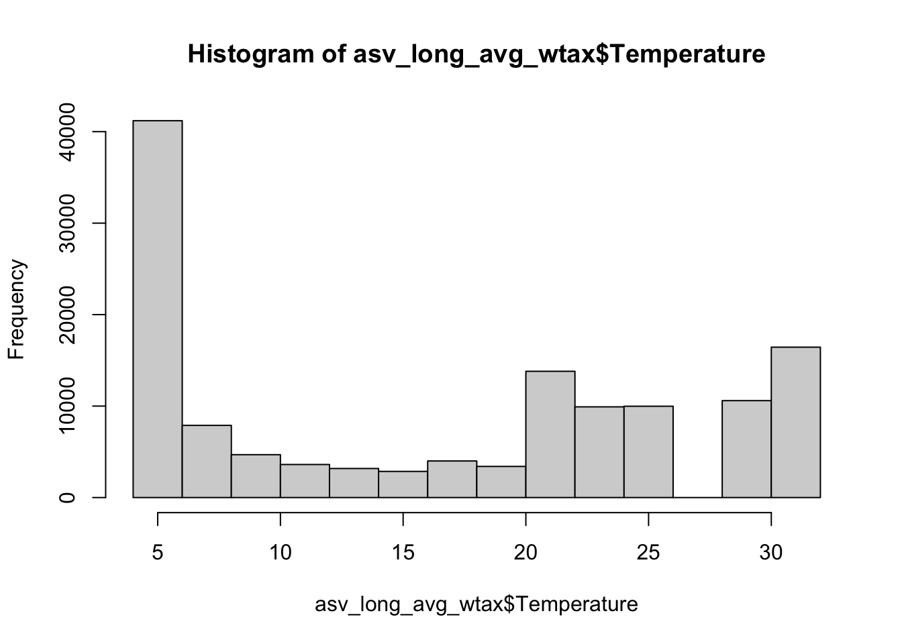
hist(asv_long_avg_wtax$NO3)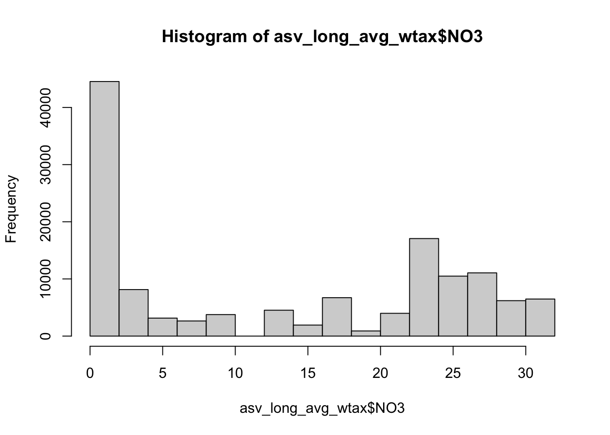
# list_topIsolate the top taxa noted before performing Indicator Species analysis.
# | eval: false
# | echo: true
indic_input <- asv_long_avg_wtax %>%
# filter(Supergroup_simplified != "TSAR-NA") %>%
filter(Supergroup_simplified %in% list_top) %>%
filter(!grepl("_X", Supergroup_simplified)) %>%
# Add additional bins
mutate(TEMP_BIN = case_when(
Temperature < 8 ~ "< 8",
Temperature >=8 & Temperature < 15 ~ "8-15",
Temperature >= 15 & Temperature < 20 ~ "15-20",
Temperature >= 20 & Temperature < 25 ~ "20-25",
Temperature > 25 ~ "> 25")) %>%
mutate(NO3_BIN = case_when(
NO3 < 10 ~ "< 10",
NO3 >= 10 & NO3 < 20 ~ "10-20",
NO3 >= 20 ~ "> 20")) %>%
left_join(table1_wfeature %>% select(STN_NISKIN, DCM, OilRig_Count, SALT_MAX, O2_MIN)) %>%
filter(MEAN_REPS_seq >= 100) %>%
mutate(OIL_BIN = case_when(
OilRig_Count > 0 ~ "Oil Rig",
TRUE ~ "No oil rig"
)) %>%
select(STN_NISKIN, Station, DEPTH_BIN, NH4, NO2, NO3, Oxygen, PO4, SIL, Salinity, TEMP_BIN, Temperature, DCM, NO3_BIN, OIL_BIN, OilRig_Count, SALT_MAX, O2_MIN, MEAN_REPS_seq, FeatureID) %>%
distinct() %>%
pivot_wider(names_from = FeatureID, names_prefix = "ASV_", values_from = MEAN_REPS_seq, values_fill = 0)Joining with `by = join_by(STN_NISKIN)`Ahead of determining indicator species, ASVs were filtered to only include those that had more than or equal to 100 sequences.
13.2 IndVal
two species are not strongly correlated and their frequency in the data set is larger than the frequency of sites belonging to the site group, the joint occurrence of the two species has higher positive predictive value for the site group than the two species taken independently
‘d’ of species as the product of the relative frequency and relative average abundance in clusters.
# | eval: false
# | echo: true
# STN_NISKIN, DEPTH_BIN, NH4, NO2, NO3, Oxygen, PO4, SIL, Salinity, Temperature, DCM, OilRig_Count, SALT_MAX, O2_MIN, MEAN_REPS_seq, FeatureID
# # clust <- indic_input$DEPTH_BIN
# # clust <- indic_input$DCM
# clust <- indic_input$Station
# # clust <- indic_input$O2_MIN
# # clust <- indic_input$SALT_MAX
# # clust <- indic_input$NO3_BIN
# # clust <- indic_input$TEMP_BIN
# # clust <- indic_input$OIL_BIN
# # unique(indic_input$TEMP_BIN)
# abun <- indic_input %>%
# select(STN_NISKIN, starts_with("ASV_")) %>%
# column_to_rownames(var = "STN_NISKIN")13.3 Fxn summary of indicator species
# INV$sign[1]
summary_fxn_indic_spp <- function(clust, abun, param){
df_inv <- multipatt(abun, clust, func = "IndVal", duleg = TRUE, control = how(nperm = 99))
#
prelim <- (as.data.frame(df_inv$sign))
max_index <- max(prelim$index)
summary_inv_df <- (as.data.frame(df_inv$sign)) %>%
rownames_to_column(var = "FeatureID") %>%
pivot_longer(cols = starts_with("s."), names_to = "Indicative_of", values_to = "P_A") %>%
filter(P_A == 1) %>%
filter(p.value <= 0.5) %>%
mutate(indic_index = (index/max_index),
FeatureID = str_remove_all(FeatureID, "ASV_")) %>%
select(Indicative_of, FeatureID, indic_index, p.value, stat) %>%
add_column(PARAM_INDV = param)
}summary_fxn_indic_spp(clust, abun, param)
abun <- indic_input %>%
select(STN_NISKIN, starts_with("ASV_")) %>%
column_to_rownames(var = "STN_NISKIN")
depth_bin <- summary_fxn_indic_spp((indic_input$DEPTH_BIN), abun, "DEPTH_BIN")
dcm_bin <- summary_fxn_indic_spp((indic_input$DCM), abun, "DCM")
o2_bin <- summary_fxn_indic_spp((indic_input$O2_MIN), abun, "O2_MIN")
stn_bin <- summary_fxn_indic_spp((indic_input$Station), abun, "Station")
# head(depth_bin)
all_asvs_indic <- rbind(depth_bin, dcm_bin, o2_bin, stn_bin) %>%
pivot_wider(names_from = PARAM_INDV, values_from = Indicative_of, names_prefix = "INV_") %>%
select(FeatureID, p.value, indic_index, stat, starts_with("INV_"))# unique(indic_input$DEPTH_BIN)
abun_surf <- indic_input %>%
filter(DEPTH_BIN == "< 5m") %>%
select(STN_NISKIN, starts_with("ASV_")) %>%
column_to_rownames(var = "STN_NISKIN")
indic_surf <- indic_input %>%
filter(DEPTH_BIN == "< 5m")
indic_surf# A tibble: 12 × 6,840
STN_NISKIN Station DEPTH_BIN NH4 NO2 NO3 Oxygen PO4 SIL Salinity
<chr> <int> <chr> <dbl> <dbl> <dbl> <dbl> <dbl> <dbl> <dbl>
1 S14_N12 14 < 5m 0.21 0 0.04 3.13 0 1.6 34.1
2 S3_N12 3 < 5m 0.17 0 0.02 2.78 0 1.2 36.1
3 S8_N11 8 < 5m 0.43 0 0.05 3.25 0.11 0.8 36.1
4 S9_N9 9 < 5m 0.33 0 0.04 2.73 0.03 1.1 30.7
5 S12_N12 12 < 5m 0.06 0 0.04 3.30 0.03 1.9 33.2
6 S15_N12 15 < 5m 0.2 0.03 0 2.86 0.05 1.8 35.3
7 S5_N12 5 < 5m 0.36 0 0.03 3.42 0.02 2.5 33.4
8 S7_N12 7 < 5m 0.41 0 0.06 3.29 0.12 1.6 33.5
9 S11_N12 11 < 5m 0.17 0 0 3.51 0 1.4 33.3
10 S1_N10 1 < 5m 0.75 0.38 0.23 3.21 0.18 10 27.4
11 S2_N11 2 < 5m 0.8 0 0.05 3.56 0.16 4.1 30.1
12 S4_N11 4 < 5m 0.25 0 0 3.48 0 1.8 33.3
# ℹ 6,830 more variables: TEMP_BIN <chr>, Temperature <dbl>, DCM <chr>,
# NO3_BIN <chr>, OIL_BIN <chr>, OilRig_Count <int>, SALT_MAX <chr>,
# O2_MIN <chr>, ASV_00170876c27b5c06fb835ad64c2125e1 <dbl>,
# ASV_0031bd7a8b2eceaf8e92456e9cae584d <dbl>,
# ASV_00372866120200b41a8ee26a79bf474d <dbl>,
# ASV_003ff3e98dff52952a7036585a32c2f2 <dbl>,
# ASV_0045eeb379be57a2b672e0925b8014e1 <dbl>, …stn_bin_surf <- summary_fxn_indic_spp((indic_surf$Station), abun_surf, "Station")
# head(stn_bin_surf)13.3.1 Indicator spp questions
table(all_asvs_indic$INV_DCM)
s.Above DCM s.Below DCM
1983 966 table(all_asvs_indic$INV_Station)
s.1 s.11 s.12 s.14 s.15 s.2 s.3 s.4 s.5 s.7 s.8 s.9
133 387 707 121 487 217 68 61 40 213 200 130 Where specific taxa indicator species above the DCM?
# tmp <- all_asvs_indic %>%
# left_join() %>%
# filter(INV_DCM == "s.Above DCM") %>%
# select(FeatureID, INV_DCM, INV_DEPTH_BIN) %>% distinct()
#
#
# unique(tmp$INV_DEPTH_BIN)
#
# table(tmp$Supergroup_simplified)# | eval: false
# | echo: true
# summary.multipatt(INV)# | eval: false
# | echo: true
# process_inv_output <- function(INV){
# A <- colnames(as.data.frame(INV$sign))[1]
# B <- colnames(as.data.frame(INV$sign))[2]
# # C <- colnames(as.data.frame(INV$sign))[3]
# # D <- colnames(as.data.frame(INV$sign))[4]
# # E <- colnames(as.data.frame(INV$sign))[5]
# # F_ <- colnames(as.data.frame(INV$sign))[6]
# # G <- colnames(as.data.frame(INV$sign))[7]
# # H <- colnames(as.data.frame(INV$sign))[8]
# # I <- colnames(as.data.frame(INV$sign))[9]
# tmp_indv <- as.data.frame(INV$sign) %>%
# mutate(INV_SP_RESULT = case_when(
# (.[[1]] == 1 & p.value <= 0.05) ~ A,
# (.[[2]] == 1 & p.value <= 0.05) ~ B
# # (.[[3]] == 1 & p.value <= 0.05) ~ C,
# # (.[[4]] == 1 & p.value <= 0.05) ~ D,
# # (.[[5]] == 1 & p.value <= 0.05) ~ E,
# # (.[[6]] == 1 & p.value <= 0.05) ~ F_,
# # (.[[7]] == 1 & p.value <= 0.05) ~ G,
# # (.[[8]] == 1 & p.value <= 0.05) ~ H,
# # (.[[9]] == 1 & p.value <= 0.05) ~ I
# )) %>%
# rownames_to_column(var = "FeatureID") %>%
# select(FeatureID, p.value, INV_SP_RESULT) %>%
# pivot_wider(names_from = INV_SP_RESULT, values_from = p.value) %>%
# select(-`NA`)
# }
# # colnames(as.data.frame(depth_bin_result$sign))[1:9]
# # depth_inv <- process_inv_output(depth_bin_result) # Need all nine
# # dcm_inv <- process_inv_output(dcm_result)
# # o2_inv <- process_inv_output(o2_result)
# # salt_inv <- process_inv_output(salt_result)
# # oil_inv <- process_inv_output(oil_result)
# # no3_inv <- process_inv_output(no3_result) # need 3
# # temp_inv <- process_inv_output(temp_bin_result) # need 5
#
# asv_list_feature <- asv_long_avg_wtax %>%
# mutate(FeatureID = paste("ASV_", FeatureID, sep = "")) %>%
# select(FeatureID) %>% distinct() %>%
# left_join(depth_inv) %>%
# left_join(dcm_inv) %>%
# left_join(o2_inv) %>%
# left_join(salt_inv) %>%
# left_join(oil_inv) %>%
# left_join(no3_inv) %>%
# left_join(temp_inv) %>%
# pivot_longer(cols = starts_with("s."), names_to = "Indicative_of", values_to = "p_value") %>%
# filter(!is.na(p_value)) %>%
# mutate(FeatureID = str_remove_all(FeatureID, "ASV_"))# save(asv_list_feature, file = "input-data/asv_list_feature.RData")
load(file = "input-data/asv_list_feature.RData")
# head(asv_long_avg_wtax)
# head(asv_list_feature)# Sum by taxonomic groups
asv_long_avg_wtax %>%
filter(MEAN_REPS_seq >= 100) %>%
filter(STN_NISKIN != "S12_N10") %>%
filter(Supergroup_simplified != "Eukaryota") %>%
filter(Supergroup_simplified != "TSAR-NA") %>%
filter(Supergroup_simplified != "Obazoa-Metazoa") %>%
left_join(asv_list_feature) %>%
filter(!is.na(p_value)) %>%
group_by(FeatureID, Supergroup_simplified, Indicative_of) |>
summarise(SUM_SEQ = sum(MEAN_REPS_seq),
ASV = n()) %>%
add_column(PRESENCE = 1) %>%
# # Factoring and ordering
# mutate(label_order = factor(STN_NISKIN, levels = labels_for_dendro)) %>%
ggplot(aes(x = FeatureID, y = Indicative_of, fill = PRESENCE)) +
geom_tile() +
facet_grid(cols = vars(Supergroup_simplified), space = "free", scale = "free") +
# scale_x_discrete(position = "right") +
theme_classic() + theme(
legend.position = "none",
legend.title = element_blank(),
legend.text = element_text(color = "black"),
strip.background = element_blank(),
axis.line.x = element_line(),
axis.title = element_text(color = "black"),
axis.text.y = element_text(color = "black", vjust = 0.5, hjust = 0, size = 10),
axis.text.x = element_blank()) +
# guides(fill = guide_legend(reverse = TRUE, ncol = 1)) +
labs(x = "", y = "")Joining with `by = join_by(FeatureID)`Warning in left_join(., asv_list_feature): Detected an unexpected many-to-many relationship between `x` and `y`.
ℹ Row 1 of `x` matches multiple rows in `y`.
ℹ Row 4 of `y` matches multiple rows in `x`.
ℹ If a many-to-many relationship is expected, set `relationship =
"many-to-many"` to silence this warning.`summarise()` has grouped output by 'FeatureID', 'Supergroup_simplified'. You
can override using the `.groups` argument.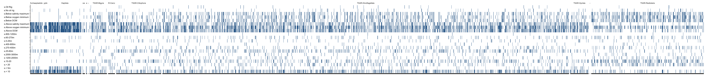
# Sum by taxonomic groups
asv_long_avg_wtax %>%
filter(MEAN_REPS_seq >= 100) %>%
filter(STN_NISKIN != "S12_N10") %>%
filter(Supergroup_simplified != "Eukaryota") %>%
filter(Supergroup_simplified == "Haptista") %>%
filter(Supergroup_simplified != "TSAR-NA") %>%
filter(Supergroup_simplified != "Obazoa-Metazoa") %>%
left_join(asv_list_feature) %>%
filter(!is.na(p_value)) %>%
group_by(FeatureID, Supergroup_simplified, Indicative_of) |>
summarise(SUM_SEQ = sum(MEAN_REPS_seq),
ASV = n()) %>%
add_column(PRESENCE = 1) %>%
# # Factoring and ordering
# mutate(label_order = factor(STN_NISKIN, levels = labels_for_dendro)) %>%
ggplot(aes(x = FeatureID, y = Indicative_of, fill = PRESENCE)) +
geom_tile(color = "black") +
facet_grid(cols = vars(Supergroup_simplified), space = "free", scale = "free") +
# scale_x_discrete(position = "right") +
theme_classic() + theme(
legend.position = "none",
legend.title = element_blank(),
legend.text = element_text(color = "black"),
strip.background = element_blank(),
axis.line.x = element_line(),
axis.title = element_text(color = "black"),
axis.text.y = element_text(color = "black", vjust = 0.5, hjust = 0, size = 10),
axis.text.x = element_blank()) +
# guides(fill = guide_legend(reverse = TRUE, ncol = 1)) +
labs(x = "", y = "")Joining with `by = join_by(FeatureID)`Warning in left_join(., asv_list_feature): Detected an unexpected many-to-many relationship between `x` and `y`.
ℹ Row 1 of `x` matches multiple rows in `y`.
ℹ Row 42 of `y` matches multiple rows in `x`.
ℹ If a many-to-many relationship is expected, set `relationship =
"many-to-many"` to silence this warning.`summarise()` has grouped output by 'FeatureID', 'Supergroup_simplified'. You
can override using the `.groups` argument.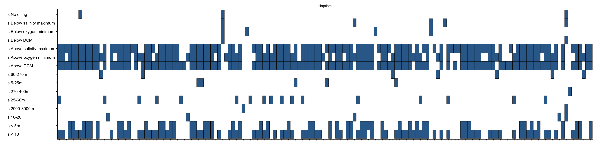
Table to demonstrate how many ASVs and what taxa could be indicator species.
total_seq <- sum(asv_long_avg_wtax$MEAN_REPS_seq)
total_asv <- length(unique(asv_long_avg_wtax$FeatureID))
table2 <- asv_long_avg_wtax %>%
filter(STN_NISKIN != "S12_N10") %>%
left_join(asv_list_feature) %>%
filter(!is.na(Indicative_of)) %>%
group_by(Supergroup_simplified, Indicative_of) %>%
summarise(SEQ_SUM = sum(MEAN_REPS_seq),
ASV_COUNT = n(),
SEQ_PERC = round((SEQ_SUM/total_seq)*100, digits = 1),
ASV_PERC = round((ASV_COUNT/total_asv)*100, digits = 1)) %>%
select(Supergroup_simplified, Indicative_of, ASV_COUNT) %>%
pivot_wider(names_from = "Supergroup_simplified", values_from = "ASV_COUNT")Joining with `by = join_by(FeatureID)`Warning in left_join(., asv_list_feature): Detected an unexpected many-to-many relationship between `x` and `y`.
ℹ Row 18 of `x` matches multiple rows in `y`.
ℹ Row 1 of `y` matches multiple rows in `x`.
ℹ If a many-to-many relationship is expected, set `relationship =
"many-to-many"` to silence this warning.`summarise()` has grouped output by 'Supergroup_simplified'. You can override
using the `.groups` argument.table2# A tibble: 20 × 15
Indicative_of Archaeplastida Cryptista Haptista Obazoa-Choanoflagell…¹
<chr> <int> <int> <int> <int>
1 s.10-20 19 NA 138 30
2 s.1200-2000m 21 NA NA NA
3 s.2000-3000m 2 NA 51 2
4 s.25-60m 217 240 479 38
5 s.270-400m 8 NA 21 NA
6 s.5-25m 58 36 127 NA
7 s.60-270m 98 29 156 24
8 s.< 10 700 294 2436 39
9 s.< 5m 201 NA 1404 32
10 s.Above DCM 795 275 2746 181
11 s.Above oxygen mini… 869 319 2638 39
12 s.Above salinity ma… 709 165 2423 70
13 s.Below DCM 21 NA 91 NA
14 s.Below oxygen mini… 28 NA 78 13
15 s.Below salinity ma… 21 NA 157 NA
16 s.No oil rig 8 24 122 19
17 s.400-800m NA NA 10 NA
18 s.> 20 NA NA NA NA
19 s.Oil Rig NA NA NA NA
20 s.800-1200m NA NA NA NA
# ℹ abbreviated name: ¹`Obazoa-Choanoflagellata`
# ℹ 10 more variables: `Obazoa-Fungi` <int>, `Obazoa-Ichthyosporea` <int>,
# `Obazoa-Metazoa` <int>, `TSAR-Bigyra` <int>, `TSAR-Cercozoa` <int>,
# `TSAR-Ciliophora` <int>, `TSAR-Dinoflagellata` <int>, `TSAR-Gyrista` <int>,
# `TSAR-Perkinsea` <int>, `TSAR-Radiolaria` <int># write.csv(table2, file = "output-tables/table-indicator-spp.csv")14 Dinoflagellate functional traits
length(unique(asv_long_avg_wtax$FeatureID))[1] 38262tmp <- asv_long_avg_wtax %>%
filter(Supergroup_simplified == "TSAR-Dinoflagellata") #%>%
# filter(Class == "Syndiniales")
length(unique(tmp$FeatureID))[1] 2135938262 - 21359[1] 16903# 21359 - 11009dino_fxn <- read.csv("input-data/dino_fxn_trait.csv")
head(dino_fxn) X feature_id
1 1 5bf3b429509ca7b31bbce32fa4d77e33
2 2 9e646dec42c5f1c18b8863abcf03a653
3 3 3f879e554830606ad8dc585c0273001f
4 4 c3be962a9e56351c57db88a3a93f9818
5 5 dbc1082a874a94772a2a0c3e344035dc
6 6 40e8c344e6b7e0770d8b87fb65b41b9d
taxon
1 Eukaryota;Obazoa;Opisthokonta;Metazoa;Arthropoda;Crustacea;Maxillopoda;Maxillopoda_X;Maxillopoda_X_sp.;
2 Eukaryota;TSAR;Rhizaria;Radiolaria;Polycystinea;Spumellaria;Astrosphaeridae;Heliosphaera;Heliosphaera_sp.;
3 Unassigned
4 Eukaryota;TSAR;Rhizaria;Radiolaria;Polycystinea;Spumellaria;Astrosphaeridae;Heliosphaera;Heliosphaera_sp.;
5 Eukaryota;TSAR;Stramenopiles;Gyrista;Mediophyceae
6 Eukaryota;Obazoa;Opisthokonta;Metazoa;Arthropoda;Crustacea;Maxillopoda
domain supergroup division subdivision class order
1 Eukaryota Obazoa Opisthokonta Metazoa Arthropoda Crustacea
2 Eukaryota TSAR Rhizaria Radiolaria Polycystinea Spumellaria
3 Unassigned <NA> <NA> <NA> <NA> <NA>
4 Eukaryota TSAR Rhizaria Radiolaria Polycystinea Spumellaria
5 Eukaryota TSAR Stramenopiles Gyrista Mediophyceae <NA>
6 Eukaryota Obazoa Opisthokonta Metazoa Arthropoda Crustacea
family genus species taxon_id.x phylum
1 Maxillopoda Maxillopoda_X Maxillopoda_X_sp. Maxillopoda_X_sp. <NA>
2 Astrosphaeridae Heliosphaera Heliosphaera_sp. Heliosphaera_sp. <NA>
3 <NA> <NA> <NA> <NA> <NA>
4 Astrosphaeridae Heliosphaera Heliosphaera_sp. Heliosphaera_sp. <NA>
5 <NA> <NA> <NA> <NA> <NA>
6 Maxillopoda <NA> <NA> <NA> <NA>
grazer_taxonomic_id synonym_basionym feeding_mode morphotype esd
1 <NA> <NA> <NA> <NA> <NA>
2 <NA> <NA> <NA> <NA> <NA>
3 <NA> <NA> <NA> <NA> <NA>
4 <NA> <NA> <NA> <NA> <NA>
5 <NA> <NA> <NA> <NA> <NA>
6 <NA> <NA> <NA> <NA> <NA>
prey_max_esd unknown bacteria detritus diatoms haptophytes chlorophytes
1 <NA> <NA> <NA> <NA> <NA> <NA> <NA>
2 <NA> <NA> <NA> <NA> <NA> <NA> <NA>
3 <NA> <NA> <NA> <NA> <NA> <NA> <NA>
4 <NA> <NA> <NA> <NA> <NA> <NA> <NA>
5 <NA> <NA> <NA> <NA> <NA> <NA> <NA>
6 <NA> <NA> <NA> <NA> <NA> <NA> <NA>
cryptophytes raphidophytes pelagophytes dinoflagellates ciliates copepods
1 <NA> <NA> NA <NA> <NA> NA
2 <NA> <NA> NA <NA> <NA> NA
3 <NA> <NA> NA <NA> <NA> NA
4 <NA> <NA> NA <NA> <NA> NA
5 <NA> <NA> NA <NA> <NA> NA
6 <NA> <NA> NA <NA> <NA> NA
copepod_eggs_nauplii metazoan_host other references taxon_id.y distance_taxon
1 <NA> <NA> NA <NA> <NA> NA
2 <NA> <NA> NA <NA> <NA> NA
3 <NA> <NA> NA <NA> <NA> NA
4 <NA> <NA> NA <NA> <NA> NA
5 <NA> <NA> NA <NA> <NA> NA
6 <NA> <NA> NA <NA> <NA> NA
merged_wdb
1 NA
2 NA
3 NA
4 NA
5 NA
6 NA# head(asv_long_avg_wtax)
dino_trait_asv <- asv_long_avg_wtax %>%
filter(Supergroup_simplified == "TSAR-Dinoflagellata") %>%
left_join(dino_fxn %>% select(FeatureID = feature_id, everything())) %>%
select(-starts_with("X"))Joining with `by = join_by(FeatureID)`Warning in left_join(., dino_fxn %>% select(FeatureID = feature_id, everything())): Detected an unexpected many-to-many relationship between `x` and `y`.
ℹ Row 20 of `x` matches multiple rows in `y`.
ℹ Row 38495 of `y` matches multiple rows in `x`.
ℹ If a many-to-many relationship is expected, set `relationship =
"many-to-many"` to silence this warning.# glimpse(dino_trait_asv)unique(dino_trait_asv$feeding_mode)[1] NA "Autotroph" "Mixotroph" "Heterotroph"unique(dino_trait_asv$morphotype) [1] NA "CM" "SH" "CM/PA" "CM*" "pSNCM" "eSNCM*" "CV"
[9] "PA" "eGNCM" "SH*" dino_trait_asv %>%
ungroup() %>%
select(FeatureID, Class) %>%
distinct() %>%
group_by(Class) %>%
summarise(ASV_COUNT = n())# A tibble: 5 × 2
Class ASV_COUNT
<chr> <int>
1 Dinophyceae 9841
2 Dinophyta_X 90
3 Noctilucophyceae 55
4 Syndiniales 11009
5 <NA> 364dino_trait_asv %>%
ungroup() %>%
# select(FeatureID, Class, feeding_mode) %>%
select(FeatureID, Class, feeding_mode, morphotype) %>%
filter(Class == "Dinophyceae") %>%
group_by(feeding_mode, morphotype) %>%
summarise(ASV_COUNT = n()) `summarise()` has grouped output by 'feeding_mode'. You can override using the
`.groups` argument.# A tibble: 9 × 3
# Groups: feeding_mode [4]
feeding_mode morphotype ASV_COUNT
<chr> <chr> <int>
1 Autotroph <NA> 25
2 Heterotroph PA 2
3 Heterotroph SH 1352
4 Heterotroph SH* 1
5 Mixotroph CM 2423
6 Mixotroph CM* 86
7 Mixotroph CM/PA 573
8 Mixotroph pSNCM 17
9 <NA> <NA> 21479tmp <- dino_trait_asv %>%
# filter(Class == "Syndiniales") %>%
filter(Order == "Dino-Group-IV")
# filter(morphotype == "CM")
unique(tmp$feeding_mode)[1] "Mixotroph" NA dino_trait_asv %>%
ungroup() %>%
select(FeatureID, STN_NISKIN, DEPTH_BIN, Order, Class, feeding_mode, morphotype) %>%
mutate(feeding_mode = case_when(
(Class == "Syndiniales" & Order != "Dino-Group-IV") ~ "Heterotroph",
TRUE ~ feeding_mode
)) %>%
mutate(morphotype = case_when(
(Class == "Syndiniales" & Order != "Dino-Group-IV") ~ "Parasite",
TRUE ~ morphotype
)) %>%
filter(feeding_mode == "Heterotroph" | feeding_mode == "Mixotroph") %>%
group_by(DEPTH_BIN, morphotype) %>%
summarise(ASV_COUNT = n()) %>%
arrange(morphotype)`summarise()` has grouped output by 'DEPTH_BIN'. You can override using the
`.groups` argument.# A tibble: 65 × 3
# Groups: DEPTH_BIN [9]
DEPTH_BIN morphotype ASV_COUNT
<chr> <chr> <int>
1 1200-2000m CM 690
2 2000-3000m CM 134
3 25-60m CM 263
4 270-400m CM 164
5 400-800m CM 358
6 5-25m CM 138
7 60-270m CM 719
8 800-1200m CM 454
9 < 5m CM 429
10 1200-2000m CM* 6
# ℹ 55 more rowsoffshore_on_shore_order <- c("S1", "S2", "S3", "S4", "S5","S9", "S8", "S7", "S11", "S12", "S14", "S15")
head(dino_trait_asv)# A tibble: 6 × 80
FeatureID Taxon DIVISION SUPERGROUP_CLASS Supergroup_simplified Supergroup
<chr> <chr> <chr> <chr> <chr> <chr>
1 0001b2ea4223… Euka… Dinofla… Dinoflagellata-… TSAR-Dinoflagellata TSAR
2 0004be388d73… Euka… Dinofla… Dinoflagellata-… TSAR-Dinoflagellata TSAR
3 000761c7389a… Euka… Dinofla… Dinoflagellata-… TSAR-Dinoflagellata TSAR
4 000a4e40ee30… Euka… Dinofla… Dinoflagellata-… TSAR-Dinoflagellata TSAR
5 00132f625fe0… Euka… Dinofla… Dinoflagellata-… TSAR-Dinoflagellata TSAR
6 00132f625fe0… Euka… Dinofla… Dinoflagellata-… TSAR-Dinoflagellata TSAR
# ℹ 74 more variables: Division <chr>, Subdivision <chr>, Class <chr>,
# Order <chr>, Family <chr>, Genus <chr>, Species <chr>, STN_NISKIN <chr>,
# Station <int>, Niskin <int>, Depth <dbl>, Latitude <dbl>, Longitude <dbl>,
# Pressure <dbl>, Temperature <dbl>, Salinity <dbl>, Oxygen <dbl>, NH4 <dbl>,
# NO2 <dbl>, NO3 <dbl>, PO4 <dbl>, SIL <dbl>, Prok_count <dbl>,
# STN_CATEGORY_3 <chr>, STN_CATEGORY_4 <chr>, STN_ORDER <fct>,
# TRANSECT <fct>, DEPTH_ORDER <fct>, DIST_OUTFLOW <dbl>, DEPTH_MAX <dbl>, …14.1 Plots for fxn traits
con_mix <- c("CM", "CM*")
# unique(dino_trait_asv$Supergroup_simplified)
dino_trait_asv %>%
# filter(morphotype != "CV") %>%
mutate(FEEDING_MODE = case_when(
(Class == "Syndiniales" & Order != "Dino-Group-IV") ~ "Heterotroph",
TRUE ~ feeding_mode
)) %>% #select(FEEDING_MODE) %>% distinct()
mutate(MORPHOTYPE = case_when(
(Class == "Syndiniales" & Order != "Dino-Group-IV") ~ "Parasite",
grepl("SH", morphotype) ~ "Strict heterotroph",
grepl("PA", morphotype) ~ "Parasite",
morphotype %in% con_mix ~ "Constitutive mixotroph",
grepl("SNCM", morphotype) ~ "Symbiotic non-constitutive mixotroph",
grepl("GNCM", morphotype) ~ "Generalist non-constitutive mixotroph",
FEEDING_MODE == "Autotroph" ~ "Autotroph",
TRUE ~ morphotype
)) %>%
ungroup() %>%
group_by(TRANSECT, STN_NISKIN, Class, Station, DEPTH_BIN, FEEDING_MODE, MORPHOTYPE) %>%
summarise(ASV_TOTAL = n(),
SEQ_SUM = sum(MEAN_REPS_seq)) %>%
filter(!is.na(FEEDING_MODE)) %>%
separate(STN_NISKIN, into = c("STN", "NISK"), sep = "_", remove = FALSE) %>%
mutate(STN_ORDER = factor(STN, levels = offshore_on_shore_order)) %>%
filter(DEPTH_BIN == "< 5m") %>%
ggplot(aes(x = STN_ORDER, y = Class, fill = FEEDING_MODE, size = ASV_TOTAL, shape = MORPHOTYPE)) +
geom_jitter(stat = "identity", width = 0.2) +
facet_grid(rows = vars(FEEDING_MODE), cols = vars(TRANSECT), scale = "free") +
# scale_y_reverse() +
scale_shape_manual(values = c(21, 25, 22, 23, 24, 21, 25)) +
scale_fill_manual(values = c("#6edb8f", "#ab70e6", "#ebb923")) +
scale_size(range=c(2,16), guide="legend") +
theme_classic() +
theme(
axis.text.x = element_text(color = "black", size = 12),
axis.text.y = element_text(color = "black", size = 12),
panel.grid.major = element_line(color = "grey90", linetype = "dotted"),
strip.background = element_blank(),
strip.text.x = element_text(color = "black", size = 12)
) +
labs(x = "Total ASVs", y = "Depth (m)")`summarise()` has grouped output by 'TRANSECT', 'STN_NISKIN', 'Class',
'Station', 'DEPTH_BIN', 'FEEDING_MODE'. You can override using the `.groups`
argument.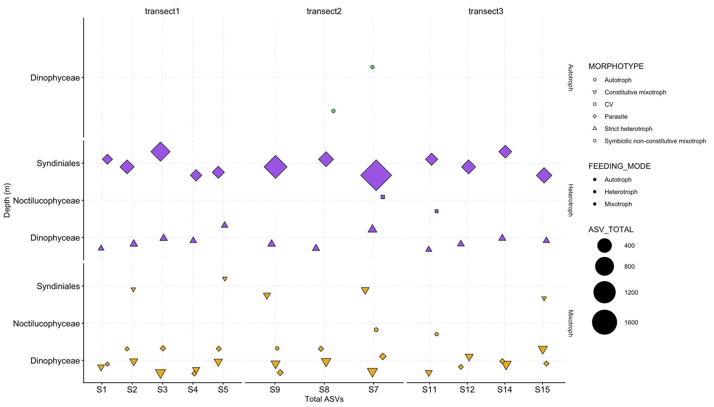
con_mix <- c("CM", "CM*")
# unique(dino_trait_asv$Supergroup_simplified)
dino_trait_asv %>%
# filter(morphotype != "CV") %>%
mutate(FEEDING_MODE = case_when(
(Class == "Syndiniales" & Order != "Dino-Group-IV") ~ "Heterotroph",
TRUE ~ feeding_mode
)) %>% #select(FEEDING_MODE) %>% distinct()
mutate(MORPHOTYPE = case_when(
(Class == "Syndiniales" & Order != "Dino-Group-IV") ~ "Parasite",
grepl("SH", morphotype) ~ "Strict heterotroph",
grepl("PA", morphotype) ~ "Parasite",
morphotype %in% con_mix ~ "Constitutive mixotroph",
grepl("SNCM", morphotype) ~ "Symbiotic non-constitutive mixotroph",
grepl("GNCM", morphotype) ~ "Generalist non-constitutive mixotroph",
FEEDING_MODE == "Autotroph" ~ "Autotroph",
TRUE ~ morphotype
)) %>%
ungroup() %>%
group_by(TRANSECT, STN_NISKIN, DEPTH_BIN, MORPHOTYPE) %>%
summarise(ASV_TOTAL = n(),
SEQ_SUM = sum(MEAN_REPS_seq)) %>%
# filter(!is.na(FEEDING_MODE)) %>%
separate(STN_NISKIN, into = c("STN", "NISK"), sep = "_", remove = FALSE) %>%
mutate(STN_ORDER = factor(STN, levels = offshore_on_shore_order)) %>%
filter(DEPTH_BIN == "< 5m") %>%
filter(MORPHOTYPE != "CV") %>%
filter(MORPHOTYPE != "Autotroph") %>%
ggplot(aes(x = STN_ORDER, y = SEQ_SUM, fill = MORPHOTYPE)) +
geom_bar(stat = "identity", width = 0.6, position = "fill", color = "black", alpha = 0.8) +
scale_fill_manual(values = c("#4ca864", "#786c96", "#bf5297", "#cfa930")) +
scale_y_continuous(expand = c(0,0)) +
theme_classic() +
theme(
axis.text.x = element_text(color = "black", size = 12),
axis.text.y = element_text(color = "black", size = 12),
panel.grid.major = element_line(color = "grey90", linetype = "dotted"),
strip.background = element_blank(),
strip.text.x = element_text(color = "black", size = 12)
) +
labs(x = "", y = "Relative sequence abundance")`summarise()` has grouped output by 'TRANSECT', 'STN_NISKIN', 'DEPTH_BIN'. You
can override using the `.groups` argument.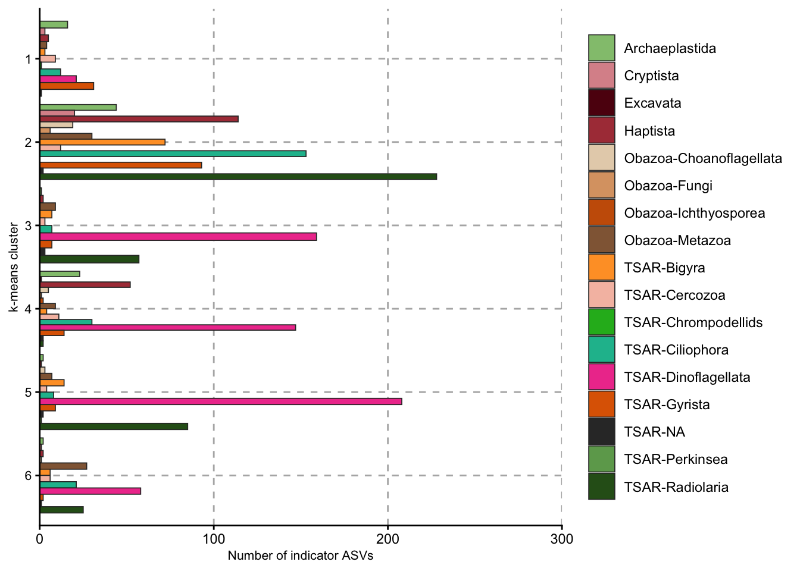
# dino_trait_asv %>%
# ungroup() %>%
# filter(!is.na(Feeding.Mode)) %>%
# filter(!is.na(Order)) %>%
# unite(DINO_TAX, Class, Order, sep = "; ") %>%
# group_by(DINO_TAX, Feeding.Mode, Morphotype) %>%
# summarise(ASV_TOTAL = n(),
# SEQ_SUM = sum(MEAN_REPS_seq)) %>%
# ggplot(aes(x = Morphotype, y = DINO_TAX, size = ASV_TOTAL, fill = Feeding.Mode)) +
# geom_point(shape = 21) +
# facet_grid(cols = vars(Feeding.Mode), space = "free", scale = "free") +
# scale_x_discrete(position = "top") +
# scale_fill_manual(values = c("#6edb8f", "#ab70e6", "#ebb923")) +
# scale_size(range=c(2,7), guide="legend") +
# theme_classic() +
# theme(
# axis.text.x = element_text(color = "black", size = 10),
# axis.text.y = element_text(color = "black", size = 10),
# panel.grid.major = element_line(color = "grey90", linetype = "dotted"),
# strip.background = element_blank(),
# strip.placement = "outside",
# strip.text.x = element_text(color = "black", size = 10)
# ) + labs(x = "", y = "")14.1.1 Gymnodiniales & Peridiniales
4% of all Gymnodiniales ASVs and 5.5% of all sequences.
# head(dino_trait_asv)
# total_dino_asvs <- length(unique(dino_trait_asv$FeatureID))
# total_dino_seqs <- sum(dino_trait_asv$MEAN_REPS_seq)
# gymnod <- dino_trait_asv %>%
# filter(Order == "Gymnodiniales")
# (length(unique(gymnod$FeatureID)) / total_dino_asvs) * 100
# ((sum(gymnod$MEAN_REPS_seq)) / total_dino_seqs) * 100# perid <- dino_trait_asv %>%
# filter(Order == "Peridiniales")
# (length(unique(perid$FeatureID)) / total_dino_asvs) * 100
# ((sum(perid$MEAN_REPS_seq)) / total_dino_seqs) * 100
# "Peridiniales" #Order# dino_trait_asv %>%
# filter(Order == "Peridiniales" | Order == "Gymnodiniales") %>%
# filter(!is.na(Feeding.Mode)) %>%
# group_by(DEPTH_BIN, Order, Genus, Feeding.Mode, Morphotype) %>%
# summarise(SUM = sum(MEAN_REPS_seq),
# ASV = n()) %>%
# mutate(DEPTH_BIN_ORDER = factor(DEPTH_BIN, levels = rev(depth_bin))) %>%
# ggplot(aes(x = SUM, y = DEPTH_BIN_ORDER, fill = Genus)) +
# geom_bar(stat = "identity", position = "fill", color = "black", width = 0.7) +
# facet_grid(cols = vars(Order, Feeding.Mode, Morphotype), space = "free", scales = "free") +
# theme_classic() +
# theme(strip.background = element_blank(),
# strip.text = element_text(color = "black", face = "bold", hjust = 0),
# axis.text = element_text(color = "black", face = "bold")) +
# labs(x = "Proportion of sequences", y = "Depth (m)")14.1.2 Parasites
# dino_trait_asv %>%
# filter(Class == "Syndiniales") %>%
# # filter(!is.na(Feeding.Mode)) %>%
# group_by(DEPTH_BIN, Class, Order) %>%
# summarise(SUM = sum(MEAN_REPS_seq),
# ASV = n()) %>%
# mutate(DEPTH_BIN_ORDER = factor(DEPTH_BIN, levels = rev(depth_bin))) %>%
# ggplot(aes(x = SUM, y = DEPTH_BIN_ORDER, fill = Order)) +
# geom_bar(stat = "identity", position = "fill", color = "black", width = 0.7) +
# facet_grid(cols = vars(Class), space = "free", scales = "free") +
# theme_classic() +
# theme(strip.background = element_blank(),
# strip.text = element_text(color = "black", face = "bold", hjust = 0),
# axis.text = element_text(color = "black", face = "bold")) +
# labs(x = "Proportion of sequences", y = "Depth (m)")
# ```
#
# To family level
# ```{r, fig.height=5, fig.width=18}
# dino_trait_asv %>%
# filter(Class == "Syndiniales") %>%
# # filter(!is.na(Feeding.Mode)) %>%
# filter(!is.na(Family)) %>%
# group_by(DEPTH_BIN, Order, Family, Oxygen, NO3) %>%
# summarise(SUM = sum(MEAN_REPS_seq),
# ASV = n()) %>%
# mutate(DEPTH_BIN_ORDER = factor(DEPTH_BIN, levels = rev(depth_bin))) %>%
# ggplot(aes(x = Family, y = DEPTH_BIN_ORDER, fill = log(SUM))) +
# # geom_bar(stat = "identity", position = "fill", color = "black", width = 0.7) +
# geom_tile(color = "black") +
# scale_fill_fermenter(type = "seq", palette = 4, direction = 1) +
# facet_grid(cols = vars(Order), space = "free", scales = "free") +
# theme_classic() +
# theme(strip.background = element_blank(),
# strip.text = element_text(color = "black", face = "bold", hjust = 0),
# axis.text.y = element_text(color = "black", face = "bold"),
# axis.text.x = element_text(color = "black", face = "bold", angle = 45, hjust = 1, vjust = 1)) +
# labs(x = "Syndiniales Families", y = "Depth (m)")# dino_trait_asv %>%
# filter(Class == "Syndiniales") %>%
# # filter(!is.na(Feeding.Mode)) %>%
# filter(!is.na(Family)) %>%
# group_by(Order, DEPTH_BIN, Oxygen) %>%
# summarise(SUM = sum(MEAN_REPS_seq),
# ASV = n()) %>%
# mutate(DEPTH_BIN_ORDER = factor(DEPTH_BIN, levels = rev(depth_bin))) %>%
# ggplot(aes(y = DEPTH_BIN_ORDER, x = Order, fill = SUM)) +
# # geom_jitter(stat = "identity", shape = 22) +
# geom_tile(color = "black") +
# scale_fill_fermenter(type = "seq", palette = 4, direction = 1) +
# # scale_size_continuous(range = c(2,10)) +
# # scale_y_reverse() +
# # scale_y_log10() +
# theme_classic() +
# theme(strip.background = element_blank(),
# strip.text = element_text(color = "black", face = "bold", hjust = 0),
# axis.text.y = element_text(color = "black", face = "bold"),
# axis.text.x = element_text(color = "black", face = "bold", angle = 0, hjust = 1, vjust = 1)) +
# labs(x = "", y = "Depth (m)")15 Session information
sessionInfo()R version 4.5.2 (2025-10-31)
Platform: aarch64-apple-darwin20
Running under: macOS Sequoia 15.7.3
Matrix products: default
BLAS: /System/Library/Frameworks/Accelerate.framework/Versions/A/Frameworks/vecLib.framework/Versions/A/libBLAS.dylib
LAPACK: /Library/Frameworks/R.framework/Versions/4.5-arm64/Resources/lib/libRlapack.dylib; LAPACK version 3.12.1
locale:
[1] en_US.UTF-8/en_US.UTF-8/en_US.UTF-8/C/en_US.UTF-8/en_US.UTF-8
time zone: America/Chicago
tzcode source: internal
attached base packages:
[1] stats graphics grDevices utils datasets methods base
other attached packages:
[1] indicspecies_1.8.0 broom_1.0.10 ggpattern_1.2.1 ggdendro_0.2.0
[5] vegan_2.7-1 permute_0.9-8 viridis_0.6.5 viridisLite_0.4.2
[9] plotly_4.11.0 gt_1.0.0 ggupset_0.4.1 patchwork_1.3.2
[13] compositions_2.0-9 decontam_1.28.0 phyloseq_1.52.0 lubridate_1.9.4
[17] forcats_1.0.0 stringr_1.5.2 dplyr_1.1.4 purrr_1.1.0
[21] readr_2.1.5 tidyr_1.3.1 tibble_3.3.0 ggplot2_4.0.0
[25] tidyverse_2.0.0
loaded via a namespace (and not attached):
[1] gridExtra_2.3 rlang_1.1.6 magrittr_2.0.4
[4] ade4_1.7-23 compiler_4.5.2 mgcv_1.9-3
[7] systemfonts_1.2.3 vctrs_0.6.5 reshape2_1.4.4
[10] quadprog_1.5-8 pkgconfig_2.0.3 crayon_1.5.3
[13] fastmap_1.2.0 backports_1.5.0 XVector_0.48.0
[16] labeling_0.4.3 utf8_1.2.6 rmarkdown_2.29
[19] tzdb_0.5.0 UCSC.utils_1.4.0 ragg_1.5.0
[22] xfun_0.53 GenomeInfoDb_1.44.3 jsonlite_2.0.0
[25] biomformat_1.36.0 rhdf5filters_1.20.0 Rhdf5lib_1.30.0
[28] parallel_4.5.2 cluster_2.1.8.1 R6_2.6.1
[31] stringi_1.8.7 RColorBrewer_1.1-3 Rcpp_1.1.0
[34] iterators_1.0.14 knitr_1.50 IRanges_2.42.0
[37] Matrix_1.7-4 splines_4.5.2 igraph_2.1.4
[40] timechange_0.3.0 tidyselect_1.2.1 rstudioapi_0.17.1
[43] yaml_2.3.10 codetools_0.2-20 lattice_0.22-7
[46] plyr_1.8.9 Biobase_2.68.0 withr_3.0.2
[49] S7_0.2.0 evaluate_1.0.5 survival_3.8-3
[52] bayesm_3.1-6 ggdist_3.3.3 xml2_1.4.0
[55] Biostrings_2.76.0 pillar_1.11.1 tensorA_0.36.2.1
[58] foreach_1.5.2 stats4_4.5.2 distributional_0.5.0
[61] generics_0.1.4 S4Vectors_0.46.0 hms_1.1.3
[64] scales_1.4.0 glue_1.8.0 lazyeval_0.2.2
[67] tools_4.5.2 robustbase_0.99-6 data.table_1.17.8
[70] rhdf5_2.52.1 grid_4.5.2 ape_5.8-1
[73] colorspace_2.1-2 nlme_3.1-168 GenomeInfoDbData_1.2.14
[76] cli_3.6.5 textshaping_1.0.3 svglite_2.2.1
[79] gtable_0.3.6 DEoptimR_1.1-4 digest_0.6.37
[82] BiocGenerics_0.54.0 htmlwidgets_1.6.4 farver_2.1.2
[85] htmltools_0.5.8.1 multtest_2.64.0 lifecycle_1.0.4
[88] httr_1.4.7 MASS_7.3-65